B3 · GPT-6 Astra · attempt NGBekKM
Batch tb8 · job tb8_B_EXP22004363_run1_221202_gpt-6-astra · trial B_EXP22004363_run1_221202__NGBekKM. Long tool outputs are cut at 6,000 characters.
0.00
42.6
$28.44
204
191
task prompt (instruction.md)
<environment_context> <cwd>/task</cwd> <shell>bash</shell> <current_date>2026-11-06</current_date> <timezone>Etc/UTC</timezone> <filesystem><workspace_roots><root>/task</root></workspace_roots><permission_profile type="disabled"><file_system type="unrestricted" /></permission_profile></filesystem> </environment_context>
user message
# Caspase-3/7 conditioned-media plate (H4 WT / PGRN-KO): analyse, conclude, recommend
## Goal
You are the analyst for this experiment. Analyse the 80-well plate acquired on 02-Dec-2022, answer the plan's question, and recommend the next step. The plan's question is whether WT progranulin-conditioned media can bring caspase activity in H4 PGRN-KO lines (E1, E3) back toward WT levels.
## Inputs (read-only, `/task/inputs/`)
| Path | Content |
|---|---|
| `/task/inputs/plan.md` | Notebook entry up to flow acquisition: purpose, rationale, materials, protocol, cytometer settings, plate maps and their highlight colours. |
| `/task/inputs/plate_layout.csv` | One row per FCS file: `file, well, sample, cell_line, camptothecin, conditioned_media`. `sample` is the 2022-12-02 plate-map label as written. `conditioned_media` is transcribed from that map's highlight colours (blue = WT 24hr, green = WT 48hr, none = no conditioned media). `camptothecin` is `not stated` where the plate map gives no treatment. |
| `/task/inputs/start.flow` | Cytoflow workflow with the Import step already configured: 80 tubes, conditions `well`, `sample`, `cell_line`, `camptothecin`, `conditioned_media`. |
| `/task/inputs/raw/` | 80 FCS 3.1 files (Attune NxT), `Caspase-assay-2-mlk_caspase_Group_<well>.fcs`, wells A1-F12 and G1-G8. |
## Channels
- Cytoflow lists channels by the labels stored inside the FCS files, not by detector ID.
- These labels may be out of date.
- Use the plan's reagent list and cytometer settings to decide what each detector measured.
## Tools and rules
- **Cytoflow only.** All gating and counting must be done in the Cytoflow 1.3.2 GUI on screen.
- **Terminal.** It has no flow-cytometry libraries, and you must not parse FCS files from it. Use it only to:
- read the inputs;
- tabulate CSVs exported from Cytoflow;
- plot from those tables;
- write the deliverables.
- **Start.** File -> Open -> `/task/inputs/start.flow`, then answer **Yes** to run it. Use `cu paste` for paths.
- **Event subsampling.** Leave `Events per sample` on the Import step unset in the final workflow, so that counts use all events.
- **Save the workflow.** In Cytoflow, File -> Save as `/task/outputs/workflow.flow`. It must be the workflow whose gates produced `counts.csv`.
- **Output location.** Write every deliverable to `/task/outputs/`. Do not modify `/task/inputs/`.
- **Time budget.** About 5 hours.
## Deliverables (`/task/outputs/`)
### `workflow.flow`
The saved Cytoflow workflow. Every population in `counts.csv` except `all_events` must be a gate operation in this workflow with exactly the same name.
### `counts.csv`
- **Columns, in order:** `file, well, population, role, parent, count, pct_of_parent`.
- **Rows:** one row per file per population, for all 80 files, with the same set of populations for every file.
- **`all_events` row:** one per file, with `population` = `all_events`, `role` = `other`, `parent` = `none` and `pct_of_parent` empty.
- **`role`** must be one of `cells`, `singlets`, `live`, `marker_positive`, `other`. Each of `cells`, `singlets`, `live` and `marker_positive` is used by exactly one population, and that population is the same in every file. `marker_positive` is the assay read-out population. `other` may be used by any number of populations.
- **`parent`** is the name of the parent population; use `all_events` for a top-level gate.
- **`count`** is an integer event count taken from Cytoflow statistics on the saved gates.
- **`pct_of_parent`** = 100 x count / parent count.
### `flags.csv`
- **Columns, in order:** `file, well, issue_type, evidence, decision`.
- **Rows:** exactly one row per FCS file (80 rows). If a well has several issues, report the main one and mention the others in `evidence`.
- **`issue_type`** must be one of `none`, `clog`, `ran_dry`, `too_few_events`, `saturation`, `bad_control`, `mislabel`, `other`.
- **`decision`** must be one of `keep`, `keep_with_note`, `exclude`. Rows with `issue_type` = `none` must have `decision` = `keep`.
- **`evidence`** is required whenever `issue_type` is not `none`, and must cite at least one number from the data. It may be empty when `issue_type` = `none`.
### `condition_summary.csv`
- **Columns, in order:** `condition, wells, n_wells_used, mean, sd, metric_definition, normalisation_applied`.
- **`condition`** is a name you choose.
- **`wells`** lists the plate wells used, separated by `;`, e.g. `A1;D1`.
- **`n_wells_used`** is an integer.
- **`mean`** and **`sd`** are computed across the wells used. Leave `sd` empty when n = 1.
- **`metric_definition`** states the per-well metric, including numerator and denominator populations and units.
- **`normalisation_applied`** describes any normalisation, or says `none`.
### `figure.png`
The main result chart.
### `report.md`
Use these headings, in this order: `## Question`, `## Methods`, `## Results`, `## Conclusion`, `## Caveats`, `## Recommendation`.
### `answer.json`
```
{"question": str,
"comparisons": [{"comparison": str, "a": <condition>, "b": <condition>,
"direction": "increase"|"decrease"|"no_clear_change",
"magnitude": str, "confidence": "high"|"medium"|"low"}],
"overall_answer": "yes: ..." | "partial: ..." | "no: ...",
"assay_verdict": "fit_for_purpose"|"needs_optimisation"|"not_fit_for_purpose",
"next_action": <ACTION>,
"next_change": {"what": str, "from": str, "to": str, "why": str},
"excluded_wells": [well, ...],
"caveats": [str, ...]}
```
- **`comparisons`:** at least one. `a` and `b` must be `condition` values that appear in `condition_summary.csv`.
- **`direction`** describes `b` relative to `a`: `increase` means b > a.
- **`magnitude`:** give the size of the difference with a number and its unit.
- **`overall_answer`** must start with `yes:`, `partial:` or `no:`.
- **`next_action`** must be one of `proceed_as_planned`, `repeat_unchanged`, `repeat_with_change`, `optimise_reagent_or_setting`, `change_treatment_or_timing`, `switch_assay`, `stop`.
- `next_change`: the change you recommend, as an object: `what` (the step, reagent or condition to change), `from` (its value as run), `to` (the value you recommend) and `why`. Use empty strings if you recommend no change.
- **`excluded_wells`** must equal the set of wells with `decision` = `exclude` in `flags.csv`.
---
## How you operate this computer
You work from a **terminal** (bash, working directory `/task`). The analysis program, **Cytoflow 1.3.2**, is already running on a virtual screen (1440×900). You see and control that screen with the `cu` command:
| Command | What it does |
|---|---|
| `cu screenshot /tmp/screen.png` | Save a screenshot. Then **open/view the image file** to see the screen. |
| `cu click X Y` · `cu click X Y right` · `cu click X Y double` | Mouse click at pixel X,Y |
| `cu drag X1 Y1 X2 Y2` · `cu move X Y` · `cu scroll X Y down 3` | Drag, move, scroll |
| `cu type "text"` · `cu paste "text"` · `cu key ctrl+s` | Keyboard (use `cu paste` for file paths) |
Take a fresh screenshot after actions to check what happened.
- **Cytoflow.** If a "Welcome to Cytoflow!" dialog is showing, close it. In file dialogs, paste the full path (e.g. `/task/inputs/start.flow`) into the *File name* box.
- **Gating must be done in Cytoflow on screen.** Do not install or use flow-cytometry libraries (flowkit, flowio, fcsparser, FlowCytometryTools, the cytoflow Python API, etc.) to gate or count events. Python (numpy, pandas, matplotlib, openpyxl) is available for working with exported tables and writing reports.
- **Inputs** are in `/task/inputs/` (read-only). **Write every deliverable to `/task/outputs/`.** Only that folder is collected for grading.
- **Limits.** There is no limit on the number of actions; the only limit is the time budget above. Save `workflow.flow` and your output files early and often.
const r = await tools.exec_command({cmd:"pwd && rg --files -g 'AGENTS.md' -g 'plan.md' -g 'plate_layout.csv' -g '*.flow' /task /installed-agent 2>/dev/null","max_output_tokens":5000});text(r);
text(ALL_TOOLS.filter(x=>/computer|terminal|exec|python/.test(x.name+" "+x.description)).map(x=>({name:x.name,description:x.description.slice(0,160)})).slice(0,80));
Script completed
Wall time 0.1 seconds
Output:
{"chunk_id":"0ce332","wall_time_seconds":0.000006392,"exit_code":0,"original_token_count":21,"output":"/task\n/task/inputs/start.flow\n/task/inputs/plate_layout.csv\n/task/inputs/plan.md\n"}
[{"name":"apply_patch","description":"The `apply_patch` tool can be used to edit files. This is a FREEFORM tool, so do not wrap the patch in JSON.\n\nexec tool declaration:\n```ts\ndeclare const tools: "},{"name":"clock__curr_time","description":"Return the current time in UTC.\n\nTools for reading and waiting on time.\n\nexec tool declaration:\n```ts\ndeclare const tools: { clock__curr_time(args: {}): Promise"},{"name":"create_goal","description":"Create a goal only when explicitly requested by the user or system/developer instructions; do not infer goals from ordinary tasks.\nSet token_budget only when an"},{"name":"exec_command","description":"Runs a command in a PTY, returning output or a session ID for ongoing interaction.\n\nexec tool declaration:\n```ts\ndeclare const tools: { exec_command(args: {\n /"},{"name":"get_goal","description":"Get the current goal for this thread, including status, budgets, token and elapsed-time usage, and remaining token budget.\n\nexec tool declaration:\n```ts\ndeclare"},{"name":"list_mcp_resource_templates","description":"Lists resource templates provided by MCP servers. Parameterized resource templates allow servers to share data that takes parameters and provides context to lan"},{"name":"list_mcp_resources","description":"Lists resources provided by MCP servers. Resources allow servers to share data that provides context to language models, such as files, database schemas, or app"},{"name":"read_mcp_resource","description":"Read a specific resource from an MCP server given the server name and resource URI.\n\nexec tool declaration:\n```ts\ndeclare const tools: { read_mcp_resource(args:"},{"name":"update_goal","description":"Update the existing goal.\nSet status to `paused` only at the user's explicit request to pause this goal, never on your own initiative. Ask if unclear; a later r"},{"name":"view_image","description":"View a local image file from the filesystem when visual inspection is needed. Use this for images already available on disk.\n\nexec tool declaration:\n```ts\ndecla"},{"name":"web__run","description":"Tool for accessing the internet.\n\n\n---\n\n## Examples of different commands available in this tool\n\nExamples of different commands available in this tool:\n* `sear"},{"name":"write_stdin","description":"Writes characters to an existing unified exec session and returns recent output.\n\nexec tool declaration:\n```ts\ndeclare const tools: { write_stdin(args: {\n // B"}]const results = await Promise.allSettled([
tools.exec_command({cmd:"cat /task/inputs/plan.md && cat /task/inputs/plate_layout.csv","max_output_tokens":14000}),
tools.exec_command({cmd:"cu screenshot /tmp/screen.png","max_output_tokens":1000})
]);for(let i=0;i<results.length;i++)text({i,...results[i]});
Script completed
Wall time 0.1 seconds
Output:
{"i":0,"status":"fulfilled","value":{"chunk_id":"9f0774","wall_time_seconds":0.000005101,"exit_code":0,"original_token_count":3359,"output":"# EXP22004363 | 2022.11.28 Caspase Activity Assay Dev: Progranulin Conditioned Media\n\nThis is the notebook entry text up to flow acquisition on 2022-12-02. People's names have been removed.\n\n- **Tags:** Target PGRN; Technology Assay development; Model System Cell based; Methodology Flow; Cell Type H4.\n- **Plate maps:** shown below as grids (rows A-H, columns 1-12). Empty cells are blank.\n- **Highlight colours:** the notebook encodes conditioned-media treatment by highlight colour. The colours are listed at the end.\n\n## DAY 2022-11-28\n\n### Purpose\nTo determine if progranulin conditioned media can restore wild-type levels of caspase activity in H4 GRN KO cells.\n\n### Rationale\nPrevious literature evidence suggests that applying exogenous progranulin to cells can restore molecular phenotypes in progranulin deficient lines. Our previous experiment with caspase activity on H4 GRN WT and KO cells showed that GRN KO lines had increased caspase activity. This difference was enhanced after campothesin challenge in both GRN WT and KO cells ( ). In this experiment, we will determine if applying conditioned media from WT cell lines onto KO lines can reduce caspase activity closer to WT levels.\n\n### Materials\n- H4 WT cells\n- H4 PGRN KO E1\n- H4 PGRN KO E3\n- H4 media (DMEM + 10% FBS)\n- CellEvent Caspase-3/7 Green Flow Cytometry Assay Kit\n- Camptothecin\n- Plate 10k cells according to plate:\n\n| | 1 | 2 | 3 | 4 | 5 | 6 | 7 | 8 | 9 | 10 | 11 | 12 |\n|---|---|---|---|---|---|---|---|---|---|---|---|---|\n| A | WT | WT | WT | WT | WT | WT | WT | WT | WT | | | |\n| B | WT | WT | WT | WT | WT | WT | WT | WT | WT | | | |\n| C | WT | WT | WT | WT | WT | WT | WT | WT | WT | | | |\n| D | WT | WT | WT | WT | WT | WT | WT | WT | WT | | | |\n| E | E1 | E1 | E1 | E1 | E1 | E1 | E1 | E1 | E1 | | | |\n| F | E3 | E3 | E3 | E3 | E3 | E3 | E3 | E3 | E3 | | | |\n| G | | | | | | | | | Serum free media | | | |\n| H | 24 hr | | | | 48 hr | | | | | | | |\n\n- WT-330K for 33 wells-resuspend in 3300mL\n- E1 and E3-90K for 9 wells-resuspend in 900uL\n\n## DAY 2022-11-29\n- Harvest media after 24 and 48 hrs and place in 4 C until ready to use.\n\n## DAY 2022-11-30\n- Plate cells according to the following plate map and incubate at 37C:\n\n| | 1 | 2 | 3 | 4 | 5 | 6 | 7 | 8 | 9 | 10 | 11 | 12 |\n|---|---|---|---|---|---|---|---|---|---|---|---|---|\n| A | WT | WT | WT | WT | WT | WT | WT | WT | WT | WT | WT | WT |\n| B | E1 | E1 | E1 | E1 | E1 | E1 | E1 | E1 | E1 | E1 | E1 | E1 |\n| C | E3 | E3 | E3 | E3 | E3 | E3 | E3 | E3 | E3 | E3 | E3 | E3 |\n| D | WT | WT | WT | WT | WT | WT | WT | WT | WT | WT | WT | WT |\n| E | E1 | E1 | E1 | E1 | E1 | E1 | E1 | E1 | E1 | E1 | E1 | E1 |\n| F | E3 | E3 | E3 | E3 | E3 | E3 | E3 | E3 | E3 | E3 | E3 | E3 |\n| G | WT no treatment | WT no treatment | E3 no treatment | E3 no treatment | | | | | | | | |\n| H | E1 no treatment | E1 no treatment | WT (flow control) | WT (flow control) | | | | | | | | |\n\n## DAY 2022-12-01\n- Gently wash cells with DMEM.\n- Replace media with conditioned media collected previously. Conditioned media added at 9AM\n\n## DAY 2022-12-02\n- After 24 hours, add campthothesin according to the plate map:\n\n| | 1 | 2 | 3 | 4 | 5 | 6 | 7 | 8 | 9 | 10 | 11 | 12 |\n|---|---|---|---|---|---|---|---|---|---|---|---|---|\n| A | WT 10uM | WT 5uM | WT 2uM | WT DMSO | WT 10uM | WT 5uM | WT 2uM | WT DMSO | WT 10uM | WT 5uM | WT 2uM | WT DMSO |\n| B | E1 10uM | E1 5uM | E1 2uM | E1 DMSO | E1 10uM | E1 5uM | E1 2uM | E1 DMSO | E1 10uM | E1 5uM | E1 2uM | E1 DMSO |\n| C | E3 10uM | E3 5uM | E3 2uM | E3 DMSO | E3 10uM | E3 5uM | E3 2uM | E3 DMSO | E3 10uM | E3 5uM | E3 2uM | E3 DMSO |\n| D | WT 10uM | WT 5uM | WT 2uM | WT DMSO | WT 10uM | WT 5uM | WT 2uM | WT DMSO | WT 10uM | WT 5uM | WT 2uM | WT DMSO |\n| E | E1 10uM | E1 5uM | E1 2uM | E1 DMSO | E1 10uM | E1 5uM | E1 2uM | E1 DMSO | E1 10uM | E1 5uM | E1 2uM | E1 DMSO |\n| F | E3 10uM | E3 5uM | E3 2uM | E3 DMSO | E3 10uM | E3 5uM | E3 2uM | E3 DMSO | E3 10uM | E3 5uM | E3 2uM | E3 DMSO |\n| G | WT no treatment (no stain) | WT no treatment | E3 no treatment | E3 no treatment | E1 no treatment | E1 no treatment | WT (caspase stain only) | WT (L/D stain only) | | | | |\n| H | | | | | | | | | | | | |\n\n- Blue highlight=treated with WT 24hr conditoned media\n- Green highlight= treated with WT 48hr conditioned media\n- No highlight= no conditioned media treatment\n- Incubate and run flow.\n- Aspirate media and wash with PBS\n- Add 150uL trypsin incubate for 5min\n- Add 75uL FBS and collect into 96w round bottom plate\n- spin down 200xg for 5min\n- Add 200uL of Cell Event Caspase 3/7 Detection reagent (1:1000) in flow staining buffer. Incubate for 30min at 37C\n- Prepare SYTOX AAdvanced Dead Cell Stain at 100uM concentration by adding 1000uL DMSO to stain. Mix well\n- During the final 5 minutes of 30min Caspase incubation add 2uL of the 100uM Dead Cell stain (final concentration of 1uM)\n- Analyze the samples without fixing.\n\nFlow cytometer settings: FSC-20; SSC-290; BL1 (caspase)-225, BL2 (AAddvanced Dead Cell Stain)-350\n\n## Plate-map cell colours (from the notebook's highlighting; the plain-text maps above drop colour)\n\n### Plate map of 2022-11-28\n- row A: WT [light cyan #C2EDF8] x8 (cols 1-8) | WT (col 9, no highlight) | - | - | -\n- row B: WT [light cyan #C2EDF8] x8 (cols 1-8) | WT (col 9, no highlight) | - | - | -\n- row C: WT [light cyan #C2EDF8] x8 (cols 1-8) | WT (col 9, no highlight) | - | - | -\n- row D: WT [light green #E8F9CF] x8 (cols 1-8) | WT (col 9, no highlight) | - | - | -\n- row E: E1 [light green #E8F9CF] x8 (cols 1-8) | E1 (col 9, no highlight) | - | - | -\n- row F: E3 [light green #E8F9CF] x8 (cols 1-8) | E3 (col 9, no highlight) | - | - | -\n- row G: cols 1-8 empty | Serum free media (col 9) | - | - | -\n-
… [7,979 more characters not shown]image((await tools.view_image({path:"/tmp/screen.png"})).image_url);
Script completed Wall time 0.0 seconds Output:

text(await tools.exec_command({cmd:"mkdir -p /task/outputs && cu click 917 491 && cu click 90 69 && cu screenshot /tmp/screen.png","max_output_tokens":1000}));image((await tools.view_image({path:"/tmp/screen.png"})).image_url);
Script completed Wall time 0.3 seconds Output:
{"chunk_id":"130409","wall_time_seconds":0.159105699,"exit_code":0,"original_token_count":4,"output":"/tmp/screen.png\n"}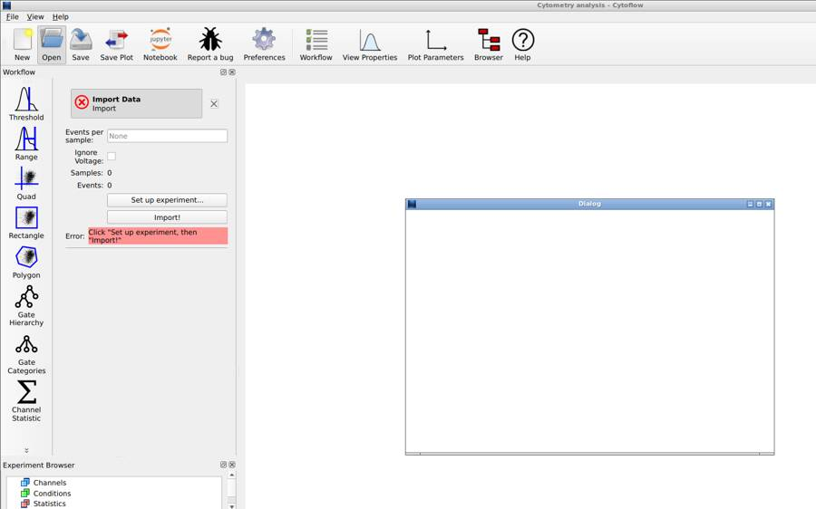
text(await tools.exec_command({cmd:"cu screenshot /tmp/screen.png","max_output_tokens":1000}));image((await tools.view_image({path:"/tmp/screen.png"})).image_url);
Script completed Wall time 0.2 seconds Output:
{"chunk_id":"ddb8ae","wall_time_seconds":0.000006775,"exit_code":0,"original_token_count":4,"output":"/tmp/screen.png\n"}
text(await tools.exec_command({cmd:"cu click 1001 743 && cu paste /task/inputs/start.flow && cu click 1311 746 && cu screenshot /tmp/screen.png","max_output_tokens":1000}));image((await tools.view_image({path:"/tmp/screen.png"})).image_url);
Script completed Wall time 1.7 seconds Output:
{"chunk_id":"6d792e","wall_time_seconds":1.493794996,"exit_code":0,"original_token_count":4,"output":"/tmp/screen.png\n"}
text(await tools.exec_command({cmd:"cu click 1313 744 && cu screenshot /tmp/screen.png","max_output_tokens":1000}));image((await tools.view_image({path:"/tmp/screen.png"})).image_url);
Script completed Wall time 0.2 seconds Output:
{"chunk_id":"660627","wall_time_seconds":0.042341232,"exit_code":0,"original_token_count":4,"output":"/tmp/screen.png\n"}
text(await tools.exec_command({cmd:"cu click 747 450 && cu screenshot /tmp/screen.png","max_output_tokens":1000}));image((await tools.view_image({path:"/tmp/screen.png"})).image_url);
Script completed Wall time 0.2 seconds Output:
{"chunk_id":"bf722a","wall_time_seconds":0.043191226,"exit_code":0,"original_token_count":4,"output":"/tmp/screen.png\n"}
text(await tools.exec_command({cmd:"cu screenshot /tmp/screen.png","max_output_tokens":1000}));image((await tools.view_image({path:"/tmp/screen.png"})).image_url);
Script completed Wall time 0.1 seconds Output:
{"chunk_id":"9841a6","wall_time_seconds":0.000006118,"exit_code":0,"original_token_count":4,"output":"/tmp/screen.png\n"}
text(await tools.exec_command({cmd:"cu click 221 180 && cu click 21 30 && cu screenshot /tmp/screen.png","max_output_tokens":1000}));image((await tools.view_image({path:"/tmp/screen.png"})).image_url);
Script completed Wall time 0.3 seconds Output:
{"chunk_id":"791c8c","wall_time_seconds":0.151593723,"exit_code":0,"original_token_count":4,"output":"/tmp/screen.png\n"}
text(await tools.exec_command({cmd:"cu click 70 102 && cu screenshot /tmp/screen.png","max_output_tokens":1000}));image((await tools.view_image({path:"/tmp/screen.png"})).image_url);
Script completed Wall time 0.2 seconds Output:
{"chunk_id":"56d016","wall_time_seconds":0.055745057,"exit_code":0,"original_token_count":4,"output":"/tmp/screen.png\n"}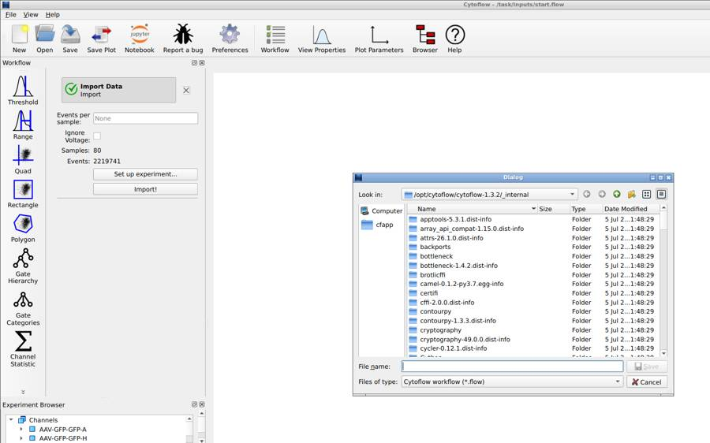
text(await tools.exec_command({cmd:"cu click 985 743 && cu paste /task/outputs/workflow.flow && cu click 1308 745 && cu screenshot /tmp/screen.png","max_output_tokens":1000}));image((await tools.view_image({path:"/tmp/screen.png"})).image_url);
Script completed Wall time 1.7 seconds Output:
{"chunk_id":"521844","wall_time_seconds":1.486218296,"exit_code":0,"original_token_count":4,"output":"/tmp/screen.png\n"}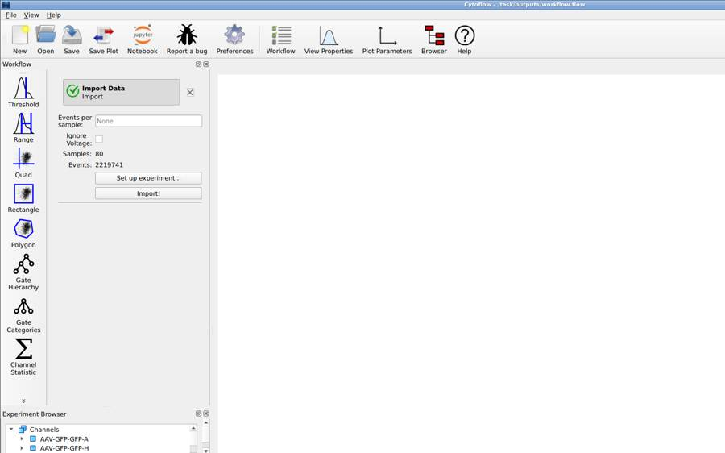
text(await tools.exec_command({cmd:"cu click 46 451 && cu screenshot /tmp/screen.png","max_output_tokens":1000}));image((await tools.view_image({path:"/tmp/screen.png"})).image_url);
Script completed Wall time 0.2 seconds Output:
{"chunk_id":"52c9a5","wall_time_seconds":0.043688003,"exit_code":0,"original_token_count":4,"output":"/tmp/screen.png\n"}
text(await tools.exec_command({cmd:"cu screenshot /tmp/screen.png","max_output_tokens":1000}));image((await tools.view_image({path:"/tmp/screen.png"})).image_url);
Script completed Wall time 0.1 seconds Output:
{"chunk_id":"d7fe07","wall_time_seconds":0.000006849,"exit_code":0,"original_token_count":4,"output":"/tmp/screen.png\n"}
text(await tools.exec_command({cmd:"cu click 274 324 && cu type cells && cu click 351 354 && cu screenshot /tmp/screen.png","max_output_tokens":1000}));image((await tools.view_image({path:"/tmp/screen.png"})).image_url);
Script completed Wall time 0.5 seconds Output:
{"chunk_id":"3365ad","wall_time_seconds":0.28916594,"exit_code":0,"original_token_count":4,"output":"/tmp/screen.png\n"}
text(await tools.exec_command({cmd:"cu click 221 495 && cu click 349 384 && cu screenshot /tmp/screen.png","max_output_tokens":1000}));image((await tools.view_image({path:"/tmp/screen.png"})).image_url);
Script completed Wall time 0.3 seconds Output:
{"chunk_id":"14cb0f","wall_time_seconds":0.154585139,"exit_code":0,"original_token_count":4,"output":"/tmp/screen.png\n"}
text(await tools.exec_command({cmd:"cu click 219 601 && cu click 657 70 && cu screenshot /tmp/screen.png","max_output_tokens":1000}));image((await tools.view_image({path:"/tmp/screen.png"})).image_url);
Script completed Wall time 0.3 seconds Output:
{"chunk_id":"246441","wall_time_seconds":0.156359208,"exit_code":0,"original_token_count":4,"output":"/tmp/screen.png\n"}
text(await tools.exec_command({cmd:"cu screenshot /tmp/screen.png","max_output_tokens":1000}));image((await tools.view_image({path:"/tmp/screen.png"})).image_url);
Script completed Wall time 0.1 seconds Output:
{"chunk_id":"ae9587","wall_time_seconds":0.000005706,"exit_code":0,"original_token_count":4,"output":"/tmp/screen.png\n"}text(await tools.exec_command({cmd:"cu click 61 30 && cu screenshot /tmp/screen.png","max_output_tokens":1000}));image((await tools.view_image({path:"/tmp/screen.png"})).image_url);
Script completed Wall time 0.4 seconds Output:
{"chunk_id":"29116a","wall_time_seconds":0.150584595,"exit_code":0,"original_token_count":4,"output":"/tmp/screen.png\n"}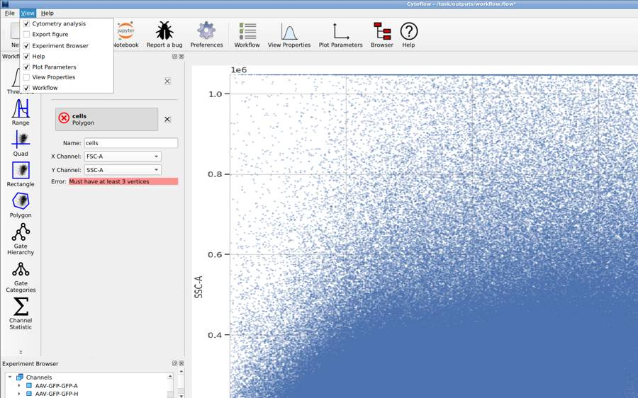
text(await tools.exec_command({cmd:"cu click 114 173 && cu click 725 9 double && cu screenshot /tmp/screen.png","max_output_tokens":1000}));image((await tools.view_image({path:"/tmp/screen.png"})).image_url);
Script completed Wall time 0.5 seconds Output:
{"chunk_id":"1d50f0","wall_time_seconds":0.311981593,"exit_code":0,"original_token_count":4,"output":"/tmp/screen.png\n"}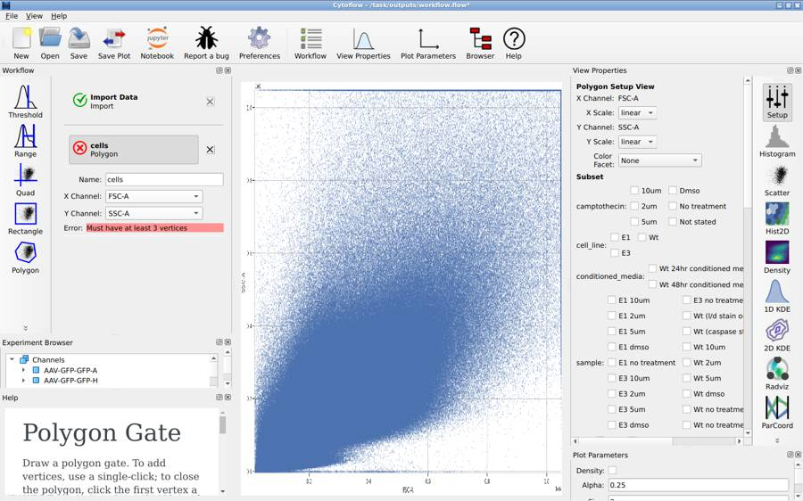
text(await tools.exec_command({cmd:"cu click 407 713 && cu click 407 614 && cu click 1169 202 && cu screenshot /tmp/screen.png","max_output_tokens":1000}));image((await tools.view_image({path:"/tmp/screen.png"})).image_url);
Script completed Wall time 0.5 seconds Output:
{"chunk_id":"ee205b","wall_time_seconds":0.302134421,"exit_code":0,"original_token_count":4,"output":"/tmp/screen.png\n"}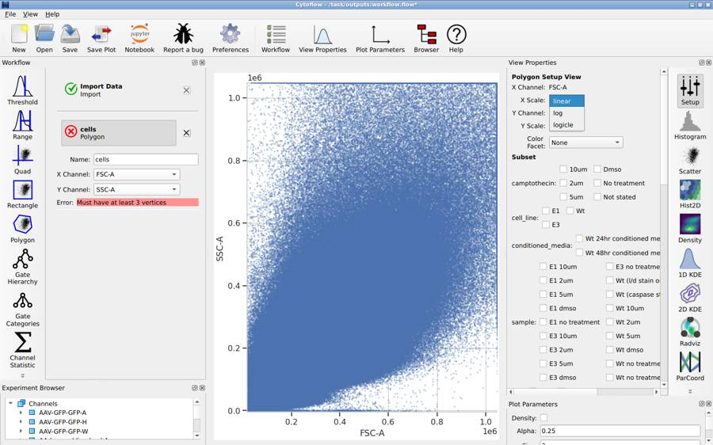
text(await tools.exec_command({cmd:"cu click 1131 228 && cu click 1165 254 && cu key l && cu key Return && cu click 1098 845 && cu scroll 1275 699 down 5 && cu screenshot /tmp/screen.png","max_output_tokens":1000}));image((await tools.view_image({path:"/tmp/screen.png"})).image_url);
Script completed Wall time 1.0 seconds Output:
{"chunk_id":"8dd866","wall_time_seconds":0.845620636,"exit_code":0,"original_token_count":4,"output":"/tmp/screen.png\n"}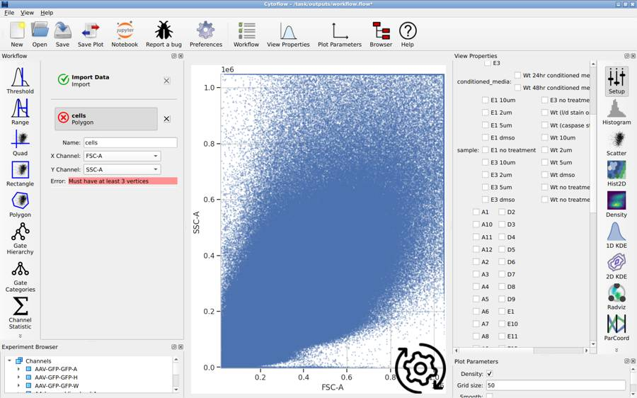
text(await tools.exec_command({cmd:"cu click 1076 479 && cu screenshot /tmp/screen.png","max_output_tokens":1000}));image((await tools.view_image({path:"/tmp/screen.png"})).image_url);
Script completed Wall time 0.3 seconds Output:
{"chunk_id":"8d3f61","wall_time_seconds":0.087564153,"exit_code":0,"original_token_count":4,"output":"/tmp/screen.png\n"}text(await tools.exec_command({cmd:"cu screenshot /tmp/screen.png","max_output_tokens":1000}));image((await tools.view_image({path:"/tmp/screen.png"})).image_url);
Script completed Wall time 0.2 seconds Output:
{"chunk_id":"986fee","wall_time_seconds":0.000005988,"exit_code":0,"original_token_count":4,"output":"/tmp/screen.png\n"}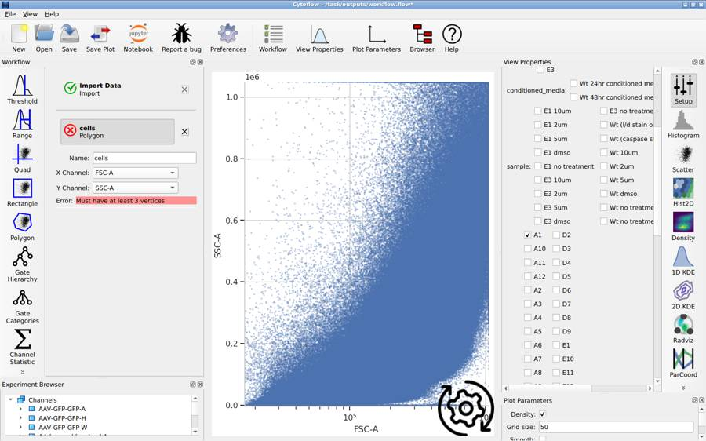
text(await tools.exec_command({cmd:"cu scroll 1271 311 up 10 && cu screenshot /tmp/screen.png","max_output_tokens":1000}));image((await tools.view_image({path:"/tmp/screen.png"})).image_url);
Script completed Wall time 1.2 seconds Output:
{"chunk_id":"84327a","wall_time_seconds":0.972795379,"exit_code":0,"original_token_count":4,"output":"/tmp/screen.png\n"}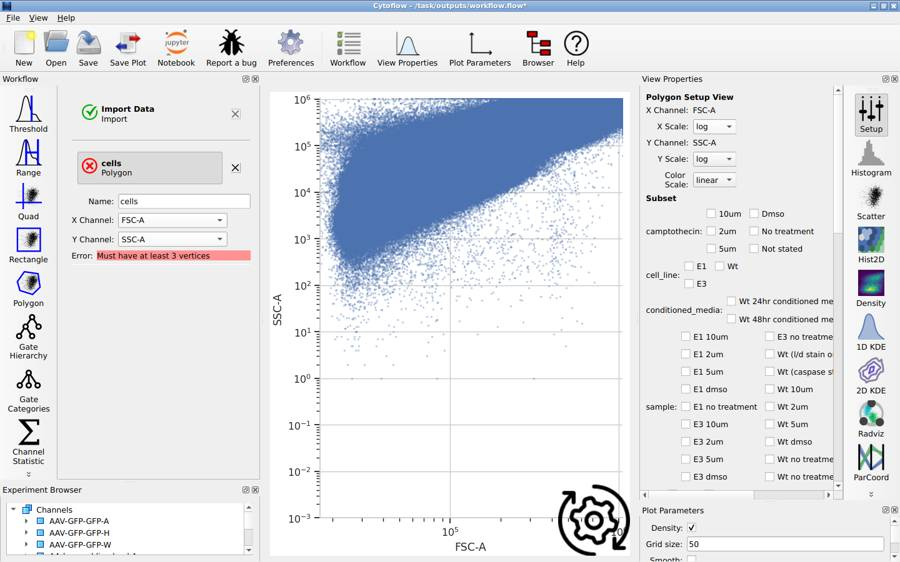
text(await tools.exec_command({cmd:"cu screenshot /tmp/screen.png","max_output_tokens":1000}));image((await tools.view_image({path:"/tmp/screen.png"})).image_url);
Script completed Wall time 0.2 seconds Output:
{"chunk_id":"a29d95","wall_time_seconds":0.000006696,"exit_code":0,"original_token_count":4,"output":"/tmp/screen.png\n"}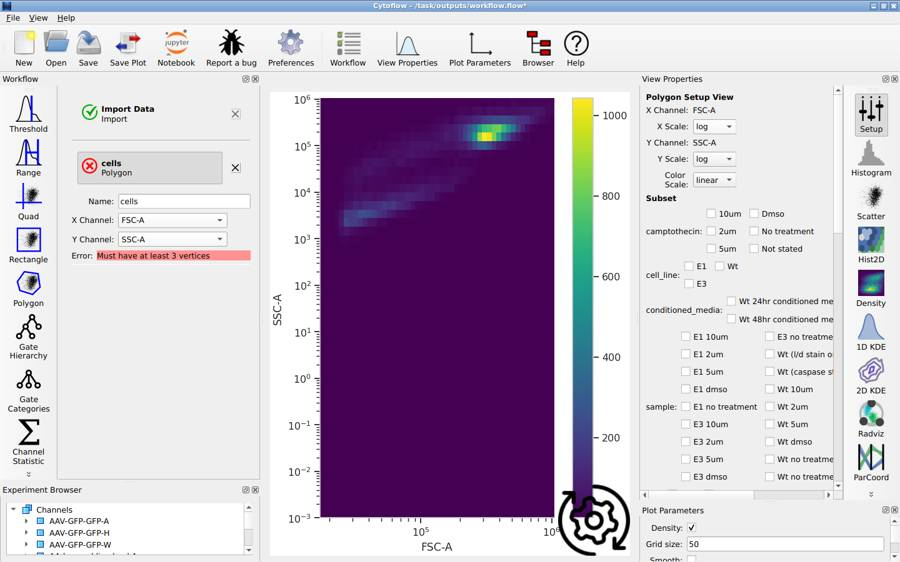
text(await tools.exec_command({cmd:"cu scroll 1252 869 down 4 && cu screenshot /tmp/screen.png","max_output_tokens":1000}));image((await tools.view_image({path:"/tmp/screen.png"})).image_url);
Script completed Wall time 0.6 seconds Output:
{"chunk_id":"feb644","wall_time_seconds":0.374398147,"exit_code":0,"original_token_count":4,"output":"/tmp/screen.png\n"}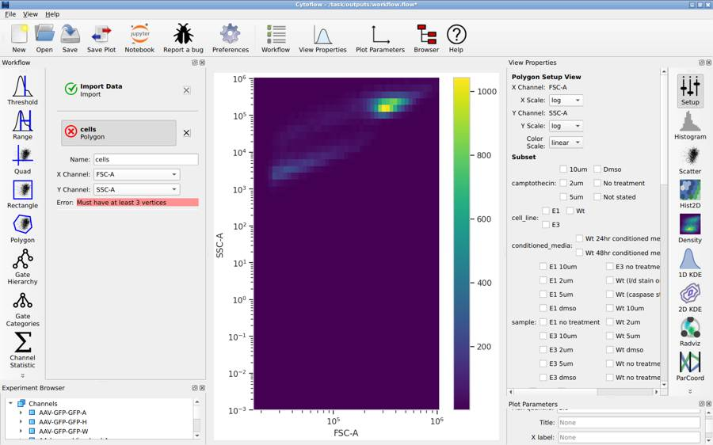
text(await tools.exec_command({cmd:"cu drag 1220 803 1220 550 && cu scroll 1250 715 up 8 && cu screenshot /tmp/screen.png","max_output_tokens":1000}));image((await tools.view_image({path:"/tmp/screen.png"})).image_url);
Script completed Wall time 1.0 seconds Output:
{"chunk_id":"9f9d4e","wall_time_seconds":0.799045155,"exit_code":0,"original_token_count":4,"output":"/tmp/screen.png\n"}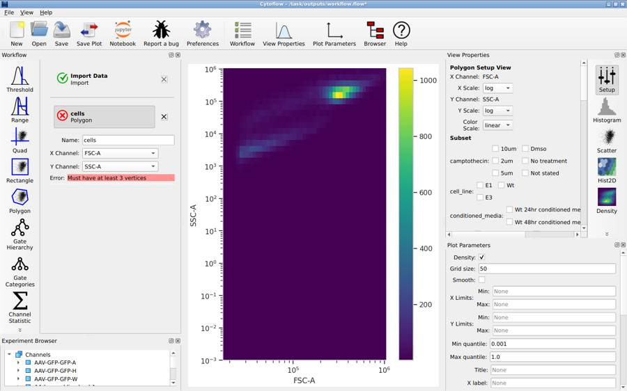
text(await tools.exec_command({cmd:"cu click 1242 670 && cu key ctrl+a && cu type 10000 && cu key Tab && cu click 1253 730 && cu key ctrl+a && cu type 1000 && cu key Tab && cu screenshot /tmp/screen.png","max_output_tokens":1000}));image((await tools.view_image({path:"/tmp/screen.png"})).image_url);
Script completed Wall time 0.7 seconds Output:
{"chunk_id":"ded61f","wall_time_seconds":0.504727891,"exit_code":0,"original_token_count":4,"output":"/tmp/screen.png\n"}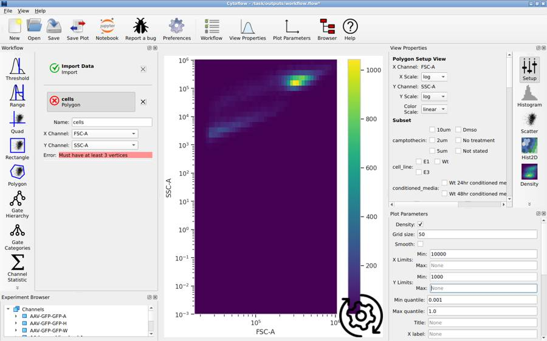
text(await tools.exec_command({cmd:"cu screenshot /tmp/screen.png","max_output_tokens":1000}));image((await tools.view_image({path:"/tmp/screen.png"})).image_url);
Script completed Wall time 0.2 seconds Output:
{"chunk_id":"b9e5b6","wall_time_seconds":0.000006421,"exit_code":0,"original_token_count":4,"output":"/tmp/screen.png\n"}text(await tools.web__run({search_query:[{q:"site.thermofisher.com CellEvent Caspase 3/7 Green Flow Cytometry Assay Kit SYTOX AADvanced protocol 1 micromolar"}],response_length:"short"}));
Script completed Wall time 0.8 seconds Output: USER GUIDE CellEvent™ Caspase-3/7 Green Flow Cytom (https://www.thermofisher.com/TFS-Assets/LSG/manuals/cellevent_caspase_3_7_grn_flow_cytometry_assay_kit_man.pdf) citeturn0search12 [wordlim: 200] Published: 8 months ago; Green Detection Reagent and a 690/50 bandpass filter or equivalent for SYTOX ... Product CellEvent™ Caspase-3/7 Green Flow Cytometry Assay Kit | Cat. ... Product CellEvent™ Caspase-3/7 Green Flow Cytometry Assay Kit | Cat. prepare and acquire single stained compensation controls using the CellEvent ™ Caspase-3/7 Green Detection Reagent and the SYTOX ™ AADvanced ™ Dead Cell Stain. 1.5. Add 1 µL of CellEvent ™ Caspase-3/7 Green Detection Reagent to 1 mL of sample and mix gently. Incubate the samples for 30 minutes at 37°C or 45–60 minutes at room temperature, protected from light. The final concentration of the reagent is 500 nM. Note: For other cell types and models, stain concentration and labeling duration may require adjustment. For optimization, we recommend testing final concentrations between 400– 1,000 nM. 1.6. During the final 5 minutes of staining, add 1 µL of the 1 mM SYTOX ™ AADvanced ™ Dead Cell Stain in DMSO to the appropriate samples and mix gently. The final labeling concentration of stain is 1 µM. 1.7. Analyze the samples without washing or fixing, using 488‑nm excitation and collecting fluorescence emission using a 530/30 bandpass filter or equivalent for CellEvent ™ Caspase-3/7 Green Detection Reagent and a 690/50 bandpass filter or equivalent for SYTOX -------------------------------------------------------------------------------- CellEvent Caspase-3/7 Green Flow Cytometry Assay Kit User Guide (Pub.No. MAN0007522 B.0) (https://documents.thermofisher.com/TFS-Assets/LSG/manuals/cellevent_caspase_3_7_grn_flow_cytometry_assay_kit_man.pdf) citeturn0search13 [wordlim: 200] Published: 4.3 years ago; **Stain cells with CellEvent™ Caspase-3/7 Green Flow Cytometry Assay Kit (continued)** ... ** Following application of standard fluorescence compensation technique, 3 cell populations should be visible on a dual parameter dot plot of CellEvent™ Caspase-3/7 Green Detection Reagent fluorescence versus SYTOX™ AADvanced™ Dead Cell Stain fluorescence (see Figure 1). We recommend that you prepare and acquire single stained compensation controls using the CellEvent™ Caspase-3/7 Green Detection Reagent and the SYTOX™ AADvanced™ Dead Cell Stain. **1.5.** Add 1 µL of CellEvent™ Caspase-3/7 Green Detection Reagent to 1 mL of sample and mix gently. Incubate the samples for 30 minutes at 37°C or 45–60 minutes at room temperature, protected from light. The final concentration of the reagent is 500 nM. **Note:** For other cell types and models, stain concentration and labeling duration may require adjustment. For optimization, we recommend testing final concentrations between 400–1,000 nM. **1.6.** During the final 5 minutes of staining, add 1 µL of the 1 mM SYTOX™ AADvanced™ Dead Cell Stain in DMSO to the appropriate samples and mix gently. The final labeling concentration of stain is 1 µM. **1.7.** Analyze the samples without washing or fixing, using 488-nm excitation and collecting fluorescence emission using a 530/30 bandpass filter or equivalent for CellEvent™ Caspase-3/7 Green Detection Reagent and a 690/50 bandpass filter or equivalent for SYTOX™ AADvanced™ Dead Cell Stain. -------------------------------------------------------------------------------- USER GUIDE CellEvent™ Caspase-3/7 Green Flow Cytom (https://tools.thermofisher.com/content/sfs/manuals/cellevent_caspase_3_7_grn_flow_cytometry_assay_kit_man.pdf) citeturn0search14 [wordlim: 200] Published: 10.4 years ago; CellEvent™ Caspase 3/7 Detection Reagent and the SYTOX™ AADvanced™ dead cell ... CellEvent™ Caspase-3/7 Green Flow Cytometry Assay Kit | 4 1.3 Before using the SYTOX™ AADvanced™ dead cell stain for the first time, prepare a 1 mM solution. a. Remove the vial containing the SYTOX™ AADvanced™ dead cell stain (Component B) and the vial of DMSO (Component C) from the freezer and allow the contents to equilibrate to room temperature. b. Add 100 μL of DMSO to the vial of SYTOX™ AADvanced™ dead cell stain and mix well. 1.4 Prepare flow cytometry tubes each containing 1 mL of cell suspension. We recommend that you prepare and acquire single stained compensation controls using the CellEvent™ Caspase-3/7 Green Detection Reagent and the SYTOX™ AADvanced™ dead cell stain. 1.5 Add 1 µL of CellEvent™ Caspase-3/7 Green Detection Reagent to 1 mL of sample and mix gently. Incubate the samples for 30 minutes at 37°C or 45–60 minutes at room temperature, protected from light. The final concentration of the reagent is 500 nM. Note: For other cell types and models, stain concentration and labeling duration may require adjustment. For optimization, we recommend testing final concentrations between 400–1000 nM. 1.6 During the final 5 minutes of staining, add 1 μL of the 1 mM SYTOX™ AADvanced™ dead cell stain solution in DMSO to the appropriate samples and mix gently. The final labeling concentration of stain is 1 μM. 1.7 Analyze the samples without washing or fixing, using 488-nm excitation and collecting fluorescence emission using a 530/30 bandpass filter or equivalent for CellEvent™ Caspase-3/7 Green Detection Reagent and a 690/50 BP filter or equivalent for SYTOX™ AADvanced™ dead cell stain. Note: Alternative laser light sources such as 532-nm and 561-nm are also compatible with the SYTOX™ AADvanced™ dead cell stain. 1.8 Following application of standard fluorescence compensation technique, three cell populations should be visible on a dual parameter dot plot of CellEvent™ Caspase 3/7 Detection Reagent fluorescence versus SYTOX™ AADvanced™ fluorescence (see Figure 2, page 2). Multicolor staining CellEvent™ Caspase 3/7 Detection Reagent and the SYTOX™ AADvanced™ dead cell stain have minimal spectral overla … [7,816 more characters not shown]
text(await tools.exec_command({cmd:"cu screenshot /tmp/screen.png","max_output_tokens":1000}));image((await tools.view_image({path:"/tmp/screen.png"})).image_url);
Script completed Wall time 0.2 seconds Output:
{"chunk_id":"25e57f","wall_time_seconds":0.000005449,"exit_code":0,"original_token_count":4,"output":"/tmp/screen.png\n"}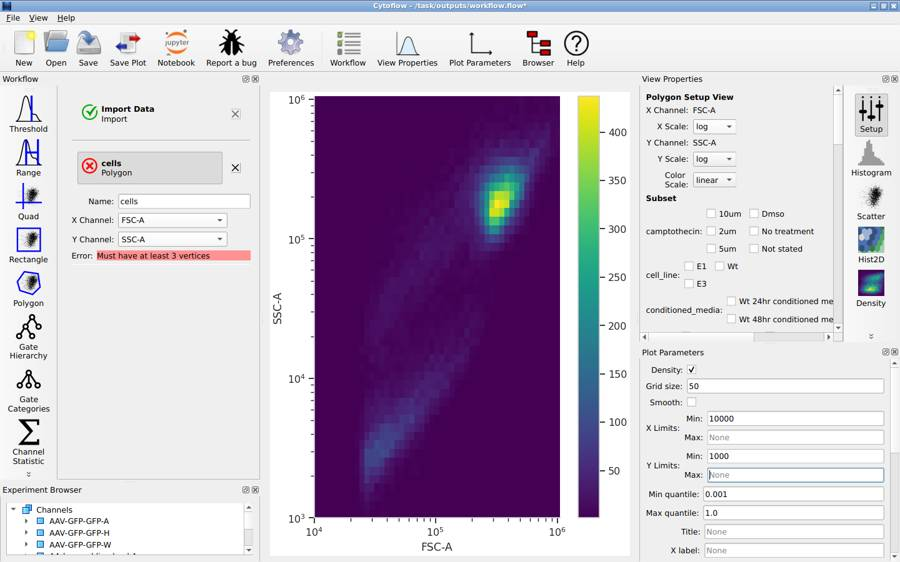
text(await tools.exec_command({cmd:"cu click 644 491 && cu click 681 549 && cu click 891 442 && cu click 891 155 && cu click 687 155 && cu click 637 415 && cu click 644 491 && cu key ctrl+s && cu screenshot /tmp/screen.png","max_output_tokens":1000}));image((await tools.view_image({path:"/tmp/screen.png"})).image_url);
Script completed Wall time 0.9 seconds Output:
{"chunk_id":"1210fd","wall_time_seconds":0.737331636,"exit_code":0,"original_token_count":4,"output":"/tmp/screen.png\n"}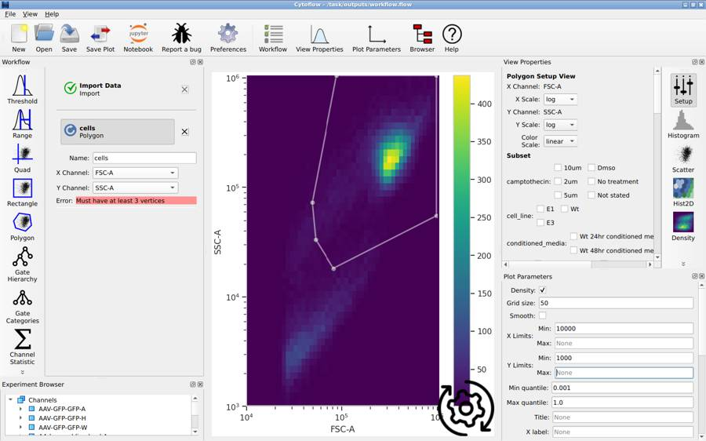
text(await tools.exec_command({cmd:"cu click 44 453 && cu screenshot /tmp/screen.png","max_output_tokens":1000}));image((await tools.view_image({path:"/tmp/screen.png"})).image_url);
Script completed Wall time 0.2 seconds Output:
{"chunk_id":"2f433d","wall_time_seconds":0.060090794,"exit_code":0,"original_token_count":4,"output":"/tmp/screen.png\n"}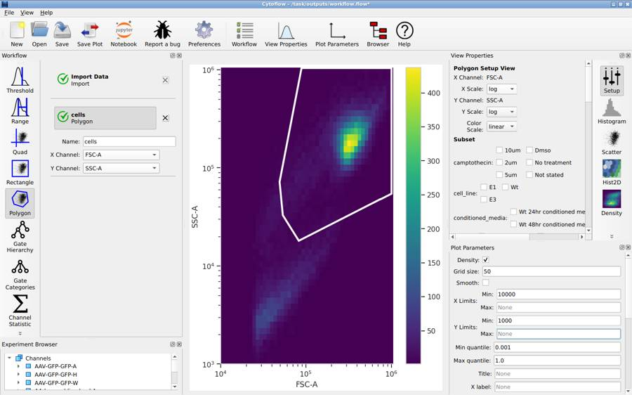
text(await tools.exec_command({cmd:"cu screenshot /tmp/screen.png","max_output_tokens":1000}));image((await tools.view_image({path:"/tmp/screen.png"})).image_url);
Script completed Wall time 0.1 seconds Output:
{"chunk_id":"1378c2","wall_time_seconds":0.000004636,"exit_code":0,"original_token_count":4,"output":"/tmp/screen.png\n"}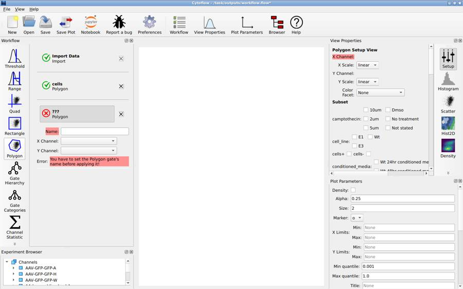
text(await tools.exec_command({cmd:"cu click 269 408 && cu type singlet_shape && cu click 349 439 && cu key Home && cu key Down && cu key Down && cu key Down && cu key Down && cu key Down && cu key Down && cu key Return && cu click 351 469 && cu key Home && cu key Down && cu key Down && cu key Down && cu key Down && cu key Down && cu key Down && cu key Down && cu key Return && cu click 1086 479 && cu click 1099 592 && cu screenshot /tmp/screen.png","max_output_tokens":1000}));image((await tools.view_image({path:"/tmp/screen.png"})).image_url);
Script completed Wall time 1.3 seconds Output:
{"chunk_id":"8cfbd6","wall_time_seconds":1.119998206,"exit_code":0,"original_token_count":4,"output":"/tmp/screen.png\n"}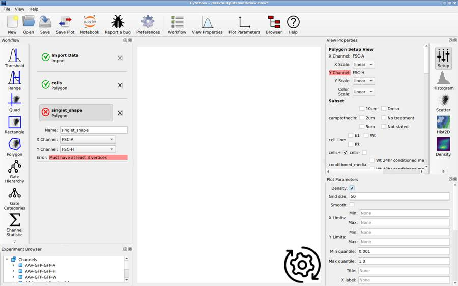
text(await tools.exec_command({cmd:"cu screenshot /tmp/screen.png","max_output_tokens":1000}));image((await tools.view_image({path:"/tmp/screen.png"})).image_url);
Script completed Wall time 0.2 seconds Output:
{"chunk_id":"ad2543","wall_time_seconds":0.000005213,"exit_code":0,"original_token_count":4,"output":"/tmp/screen.png\n"}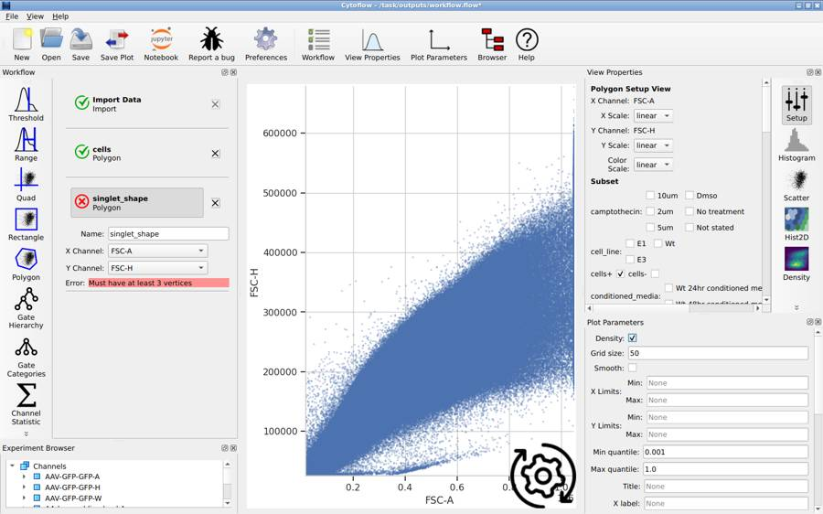
text(await tools.exec_command({cmd:"cu screenshot /tmp/screen.png","max_output_tokens":1000}));image((await tools.view_image({path:"/tmp/screen.png"})).image_url);
Script completed Wall time 0.2 seconds Output:
{"chunk_id":"71624f","wall_time_seconds":0.000005455,"exit_code":0,"original_token_count":4,"output":"/tmp/screen.png\n"}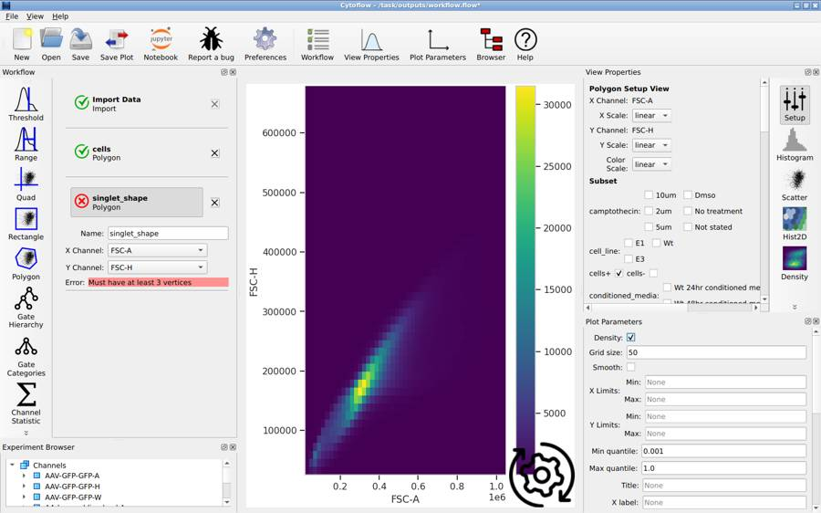
text(await tools.exec_command({cmd:"cu click 550 806 && cu click 566 819 && cu click 886 385 && cu click 886 190 && cu click 550 806 && cu key ctrl+s && cu click 46 526 && cu screenshot /tmp/screen.png","max_output_tokens":1000}));image((await tools.view_image({path:"/tmp/screen.png"})).image_url);
Script completed Wall time 0.8 seconds Output:
{"chunk_id":"13c346","wall_time_seconds":0.633403222,"exit_code":0,"original_token_count":4,"output":"/tmp/screen.png\n"}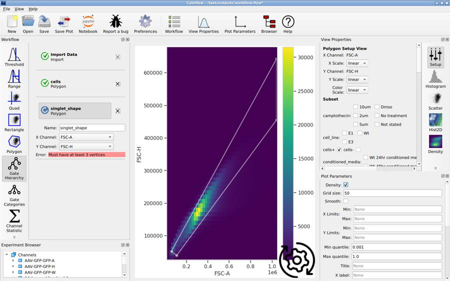
text(await tools.exec_command({cmd:"cu screenshot /tmp/screen.png","max_output_tokens":1000}));image((await tools.view_image({path:"/tmp/screen.png"})).image_url);
Script completed Wall time 0.2 seconds Output:
{"chunk_id":"772009","wall_time_seconds":0.000006206,"exit_code":0,"original_token_count":4,"output":"/tmp/screen.png\n"}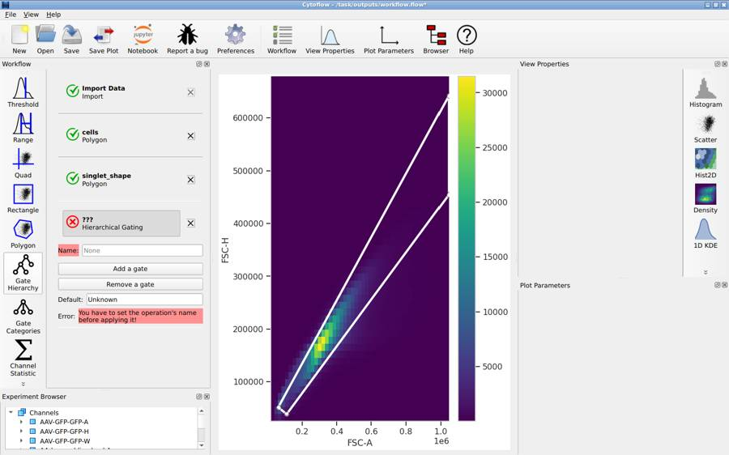
text(await tools.exec_command({cmd:"cu click 244 494 && cu key ctrl+a && cu type singlets && cu click 248 534 && cu screenshot /tmp/screen.png","max_output_tokens":1000}));image((await tools.view_image({path:"/tmp/screen.png"})).image_url);
Script completed Wall time 0.6 seconds Output:
{"chunk_id":"c89158","wall_time_seconds":0.406301312,"exit_code":0,"original_token_count":4,"output":"/tmp/screen.png\n"}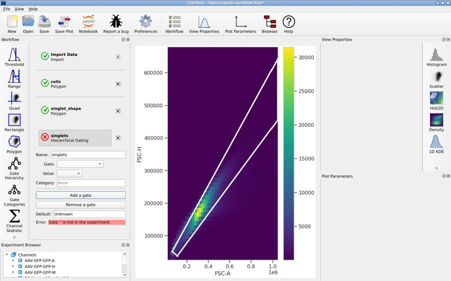
text(await tools.exec_command({cmd:"cu click 62 29 && cu click 83 126 && cu screenshot /tmp/screen.png","max_output_tokens":1000}));image((await tools.view_image({path:"/tmp/screen.png"})).image_url);
Script completed Wall time 0.4 seconds Output:
{"chunk_id":"4f2e12","wall_time_seconds":0.165520799,"exit_code":0,"original_token_count":4,"output":"/tmp/screen.png\n"}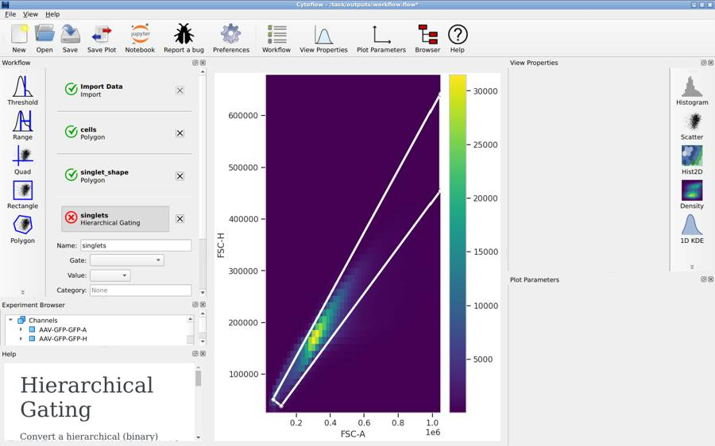
text(await tools.exec_command({cmd:"cu drag 215 704 215 416 && cu screenshot /tmp/screen.png","max_output_tokens":1000}));image((await tools.view_image({path:"/tmp/screen.png"})).image_url);
Script completed Wall time 0.2 seconds Output:
{"chunk_id":"4c7ab6","wall_time_seconds":0.000005518,"exit_code":0,"original_token_count":4,"output":"/tmp/screen.png\n"}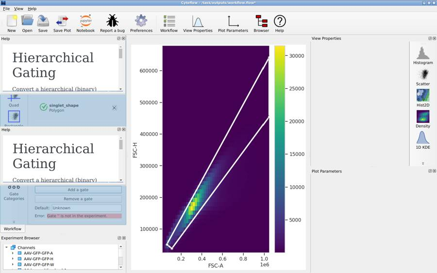
text(await tools.exec_command({cmd:"cu screenshot /tmp/screen.png && cu scroll 252 526 down 3","max_output_tokens":1000}));image((await tools.view_image({path:"/tmp/screen.png"})).image_url);
Script completed Wall time 0.5 seconds Output:
{"chunk_id":"b0261b","wall_time_seconds":0.265884993,"exit_code":0,"original_token_count":4,"output":"/tmp/screen.png\n"}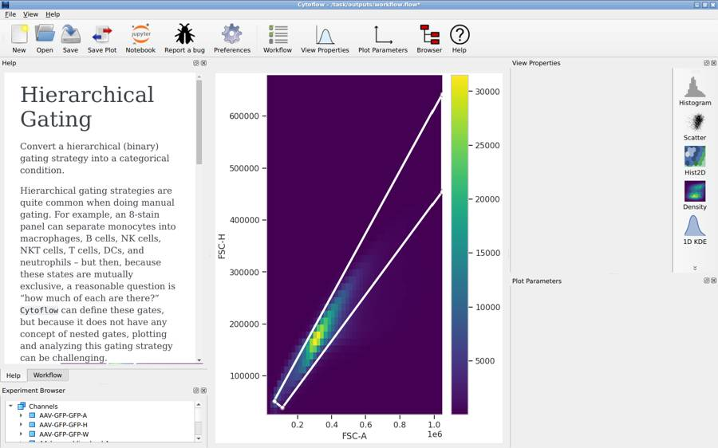
text(await tools.exec_command({cmd:"cu scroll 264 565 down 5 && cu screenshot /tmp/screen.png","max_output_tokens":1000}));image((await tools.view_image({path:"/tmp/screen.png"})).image_url);
Script completed Wall time 0.6 seconds Output:
{"chunk_id":"df56c0","wall_time_seconds":0.460629489,"exit_code":0,"original_token_count":4,"output":"/tmp/screen.png\n"}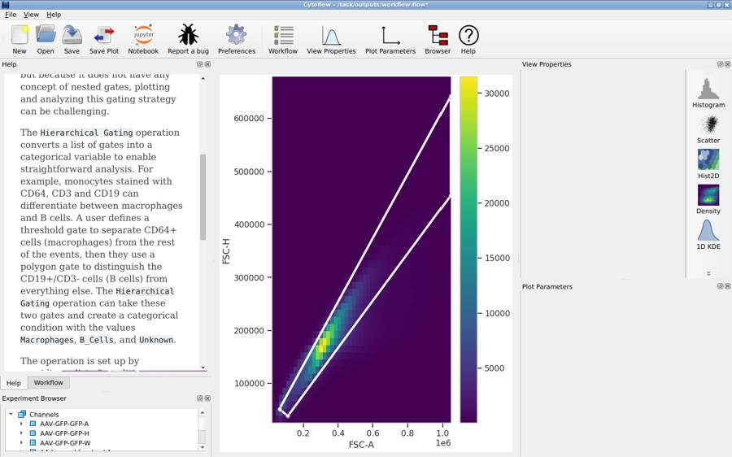
text(await tools.exec_command({cmd:"cu scroll 267 572 down 5 && cu screenshot /tmp/screen.png","max_output_tokens":1000}));image((await tools.view_image({path:"/tmp/screen.png"})).image_url);
Script completed Wall time 0.7 seconds Output:
{"chunk_id":"bb258e","wall_time_seconds":0.466510527,"exit_code":0,"original_token_count":4,"output":"/tmp/screen.png\n"}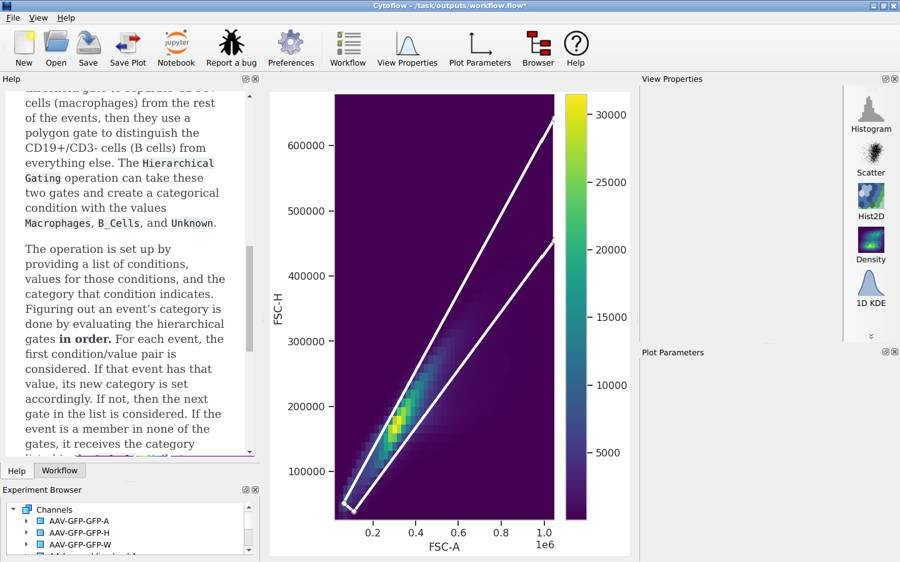
text(await tools.exec_command({cmd:"cu click 408 126 && cu click 319 525 && cu screenshot /tmp/screen.png","max_output_tokens":1000}));image((await tools.view_image({path:"/tmp/screen.png"})).image_url);
Script completed Wall time 0.3 seconds Output:
{"chunk_id":"d95394","wall_time_seconds":0.163207092,"exit_code":0,"original_token_count":4,"output":"/tmp/screen.png\n"}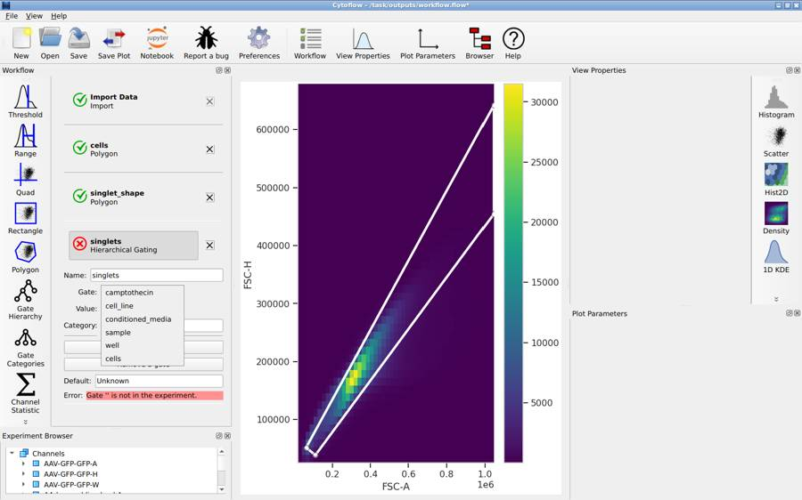
text(await tools.exec_command({cmd:"cu click 207 646 && cu click 250 555 && cu screenshot /tmp/screen.png","max_output_tokens":1000}));image((await tools.view_image({path:"/tmp/screen.png"})).image_url);
Script completed Wall time 0.3 seconds Output:
{"chunk_id":"a32322","wall_time_seconds":0.163929002,"exit_code":0,"original_token_count":4,"output":"/tmp/screen.png\n"}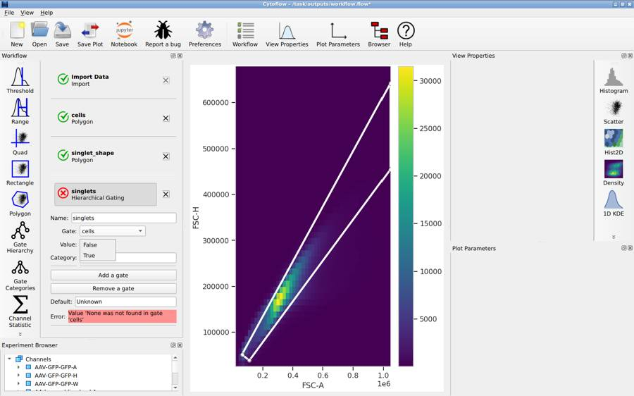
text(await tools.exec_command({cmd:"cu click 202 556 && cu click 268 584 && cu key ctrl+a && cu type Fail && cu click 252 625 && cu screenshot /tmp/screen.png","max_output_tokens":1000}));image((await tools.view_image({path:"/tmp/screen.png"})).image_url);
Script completed Wall time 0.6 seconds Output:
{"chunk_id":"49ef5e","wall_time_seconds":0.409432223,"exit_code":0,"original_token_count":4,"output":"/tmp/screen.png\n"}text(await tools.exec_command({cmd:"cu click 317 625 && cu screenshot /tmp/screen.png","max_output_tokens":1000}));image((await tools.view_image({path:"/tmp/screen.png"})).image_url);
Script completed Wall time 0.3 seconds Output:
{"chunk_id":"fb28a2","wall_time_seconds":0.062761499,"exit_code":0,"original_token_count":4,"output":"/tmp/screen.png\n"}text(await tools.exec_command({cmd:"cu click 239 770 && cu click 249 654 && cu key Home && cu key Return && cu click 260 685 && cu key ctrl+a && cu type Fail && cu scroll 327 690 down 4 && cu screenshot /tmp/screen.png","max_output_tokens":1000}));image((await tools.view_image({path:"/tmp/screen.png"})).image_url);
Script completed Wall time 1.0 seconds Output:
{"chunk_id":"a85df5","wall_time_seconds":0.859410578,"exit_code":0,"original_token_count":4,"output":"/tmp/screen.png\n"}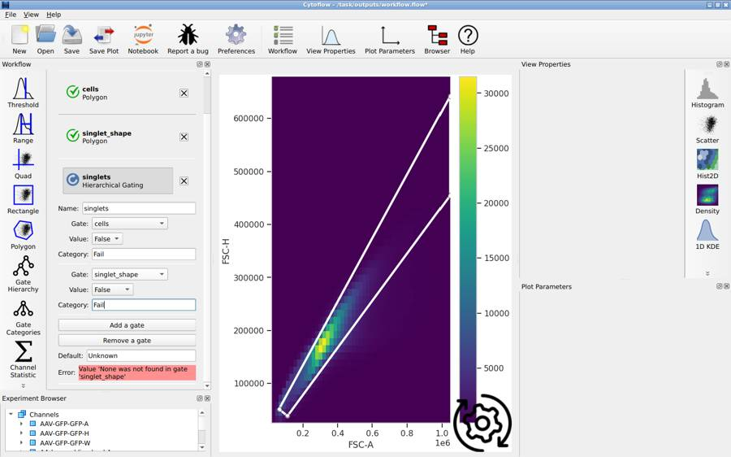
text(await tools.exec_command({cmd:"cu click 253 699 && cu key ctrl+a && cu type Pass && cu key Tab && cu key ctrl+s && cu click 45 241 && cu screenshot /tmp/screen.png","max_output_tokens":1000}));image((await tools.view_image({path:"/tmp/screen.png"})).image_url);
Script completed Wall time 0.5 seconds Output:
{"chunk_id":"a92cbe","wall_time_seconds":0.35182276,"exit_code":0,"original_token_count":4,"output":"/tmp/screen.png\n"}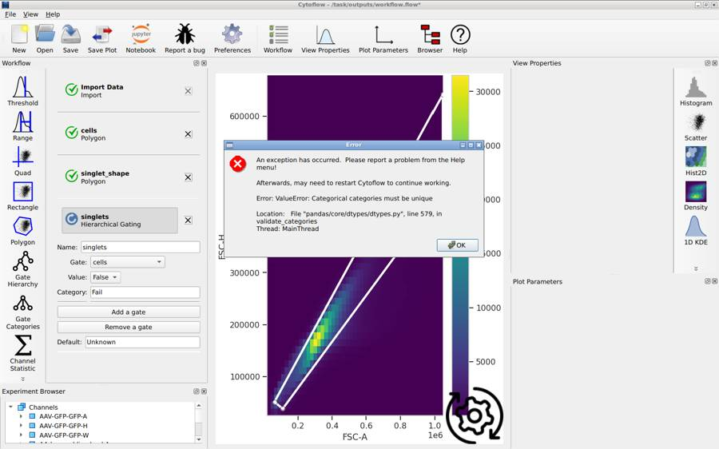
text(await tools.exec_command({cmd:"cu click 917 492 && cu screenshot /tmp/screen.png","max_output_tokens":1000}));image((await tools.view_image({path:"/tmp/screen.png"})).image_url);
Script completed Wall time 0.2 seconds Output:
{"chunk_id":"241453","wall_time_seconds":0.055711646,"exit_code":0,"original_token_count":4,"output":"/tmp/screen.png\n"}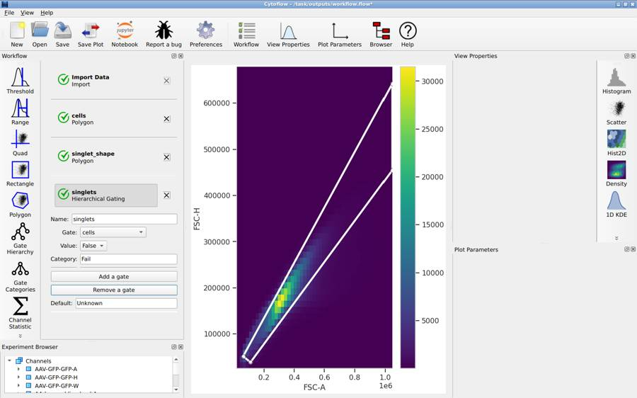
text(await tools.exec_command({cmd:"cu click 257 584 && cu key ctrl+a && cu type Debris && cu key Tab && cu click 257 685 && cu key ctrl+a && cu type Fail && cu key Tab && cu click 259 626 && cu screenshot /tmp/screen.png","max_output_tokens":1000}));image((await tools.view_image({path:"/tmp/screen.png"})).image_url);
Script completed Wall time 0.8 seconds Output:
{"chunk_id":"010040","wall_time_seconds":0.638110089,"exit_code":0,"original_token_count":4,"output":"/tmp/screen.png\n"}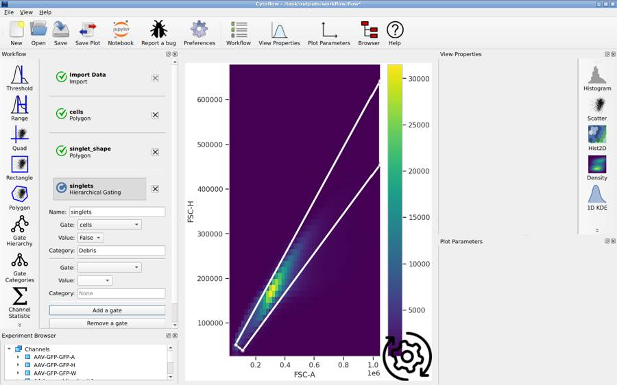
text(await tools.exec_command({cmd:"cu click 318 624 && cu key End && cu key Up && cu key Return && cu click 249 654 && cu key End && cu key Return && cu click 256 685 && cu key ctrl+a && cu type Pass && cu key Tab && cu scroll 331 695 down 4 && cu screenshot /tmp/screen.png","max_output_tokens":1000}));image((await tools.view_image({path:"/tmp/screen.png"})).image_url);
Script completed Wall time 1.1 seconds Output:
{"chunk_id":"d4565d","wall_time_seconds":0.921075435,"exit_code":0,"original_token_count":4,"output":"/tmp/screen.png\n"}text(await tools.exec_command({cmd:"cu key ctrl+s && cu click 47 173 && cu screenshot /tmp/screen.png","max_output_tokens":1000}));image((await tools.view_image({path:"/tmp/screen.png"})).image_url);
Script completed Wall time 0.3 seconds Output:
{"chunk_id":"20f982","wall_time_seconds":0.080763826,"exit_code":0,"original_token_count":4,"output":"/tmp/screen.png\n"}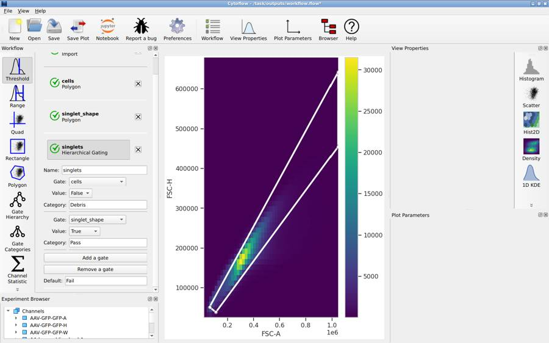
text(await tools.exec_command({cmd:"cu screenshot /tmp/screen.png","max_output_tokens":1000}));image((await tools.view_image({path:"/tmp/screen.png"})).image_url);
Script completed Wall time 0.2 seconds Output:
{"chunk_id":"84387d","wall_time_seconds":0.000006356,"exit_code":0,"original_token_count":4,"output":"/tmp/screen.png\n"}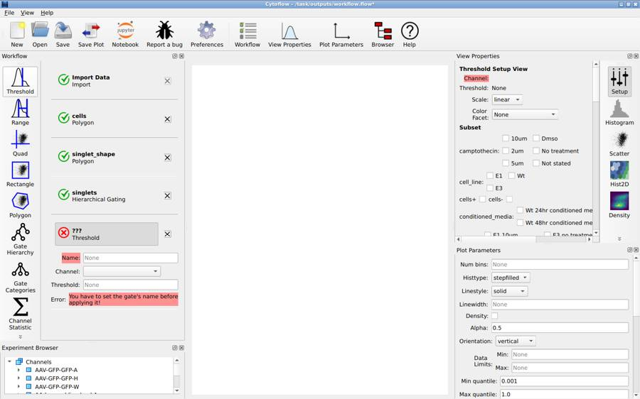
text(await tools.exec_command({cmd:"cu click 280 581 && cu key ctrl+a && cu type dead_high && cu click 350 612 && cu key Home && cu key Down && cu key Down && cu key Down && cu key Return && cu click 1164 226 && cu key End && cu key Return && cu click 1245 256 && cu screenshot /tmp/screen.png","max_output_tokens":1000}));image((await tools.view_image({path:"/tmp/screen.png"})).image_url);
Script completed Wall time 1.0 seconds Output:
{"chunk_id":"3d8b38","wall_time_seconds":0.772572902,"exit_code":0,"original_token_count":4,"output":"/tmp/screen.png\n"}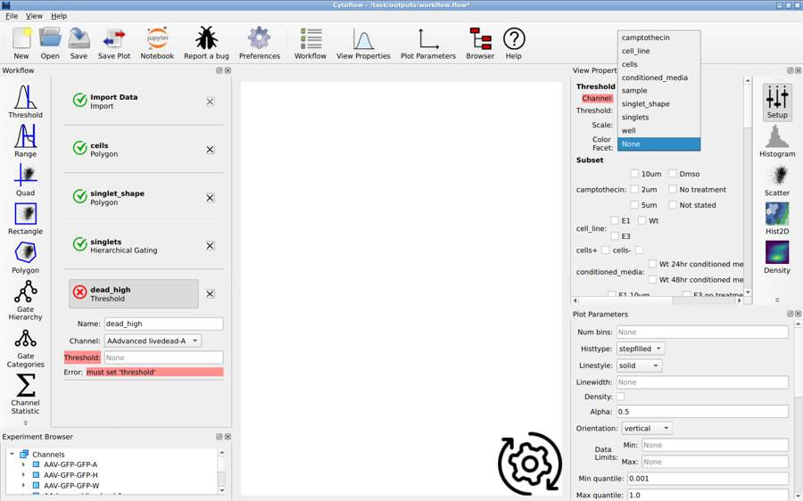
text(await tools.exec_command({cmd:"cu click 1128 234 && cu click 1112 711 && cu scroll 1244 463 down 30 && cu screenshot /tmp/screen.png","max_output_tokens":1000}));image((await tools.view_image({path:"/tmp/screen.png"})).image_url);
Script completed Wall time 3.4 seconds Output:
{"chunk_id":"6ad111","wall_time_seconds":3.178014314,"exit_code":0,"original_token_count":4,"output":"/tmp/screen.png\n"}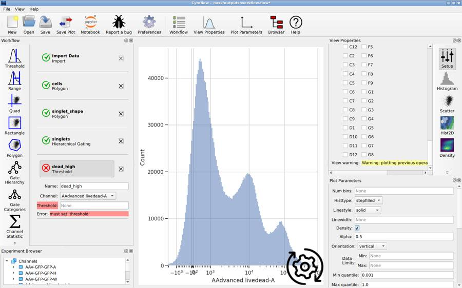
text(await tools.exec_command({cmd:"cu click 1134 285 && cu click 1134 455 && cu click 1134 482 && cu scroll 1230 230 up 19 && cu screenshot /tmp/screen.png","max_output_tokens":1000}));image((await tools.view_image({path:"/tmp/screen.png"})).image_url);
Script completed Wall time 2.4 seconds Output:
{"chunk_id":"29a6e0","wall_time_seconds":2.193364412,"exit_code":0,"original_token_count":4,"output":"/tmp/screen.png\n"}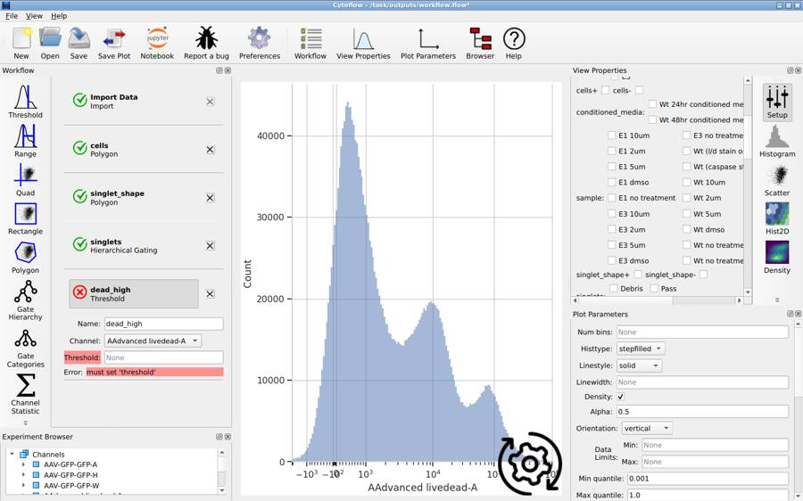
text(await tools.exec_command({cmd:"cu click 1304 517 && cu key ctrl+s && cu screenshot /tmp/screen.png","max_output_tokens":1000}));image((await tools.view_image({path:"/tmp/screen.png"})).image_url);
Script completed Wall time 0.3 seconds Output:
{"chunk_id":"104d3c","wall_time_seconds":0.091662284,"exit_code":0,"original_token_count":4,"output":"/tmp/screen.png\n"}text(await tools.exec_command({cmd:"cu click 1174 517 && cu screenshot /tmp/screen.png","max_output_tokens":1000}));image((await tools.view_image({path:"/tmp/screen.png"})).image_url);
Script completed Wall time 0.3 seconds Output:
{"chunk_id":"668ffd","wall_time_seconds":0.061718329,"exit_code":0,"original_token_count":4,"output":"/tmp/screen.png\n"}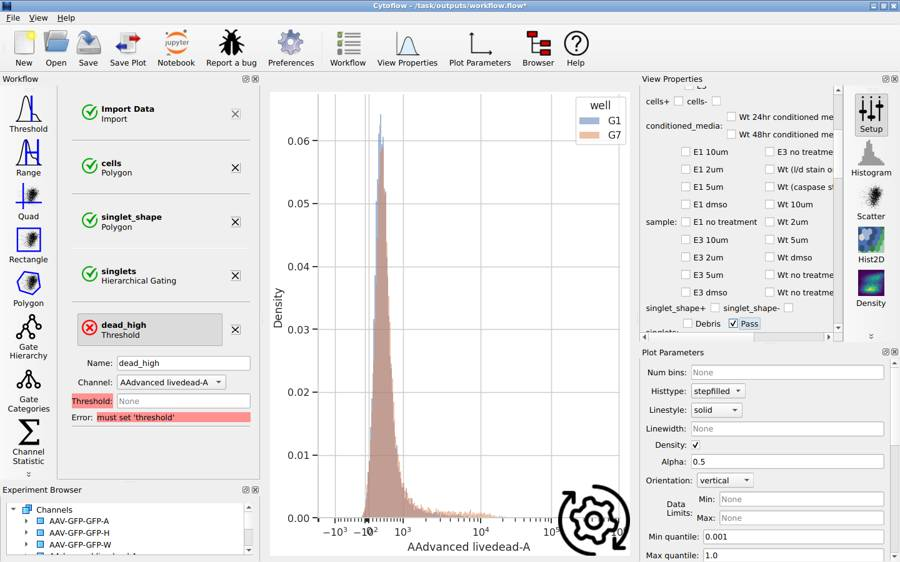
text(await tools.exec_command({cmd:"cu scroll 1243 452 down 30 && cu screenshot /tmp/screen.png","max_output_tokens":1000}));image((await tools.view_image({path:"/tmp/screen.png"})).image_url);
Script completed Wall time 3.2 seconds Output:
{"chunk_id":"278014","wall_time_seconds":2.964002539,"exit_code":0,"original_token_count":4,"output":"/tmp/screen.png\n"}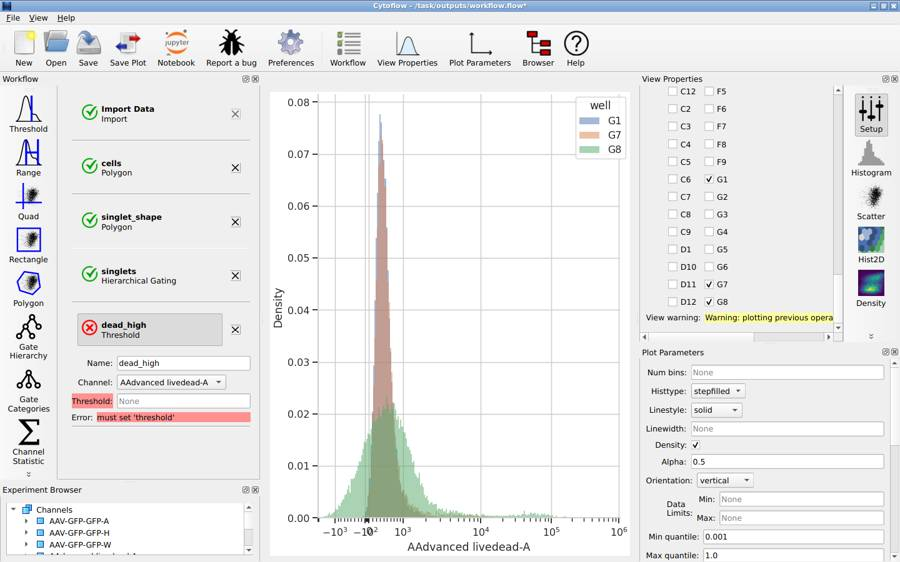
text(await tools.exec_command({cmd:"cu click 281 643 && cu key ctrl+a && cu type 3000 && cu key Tab && cu key ctrl+s && cu screenshot /task/outputs/dead_control_gate.png","max_output_tokens":1000}));image((await tools.view_image({path:"/task/outputs/dead_control_gate.png"})).image_url);
Script completed Wall time 0.4 seconds Output:
{"chunk_id":"c1dd4a","wall_time_seconds":0.247755221,"exit_code":0,"original_token_count":9,"output":"/task/outputs/dead_control_gate.png\n"}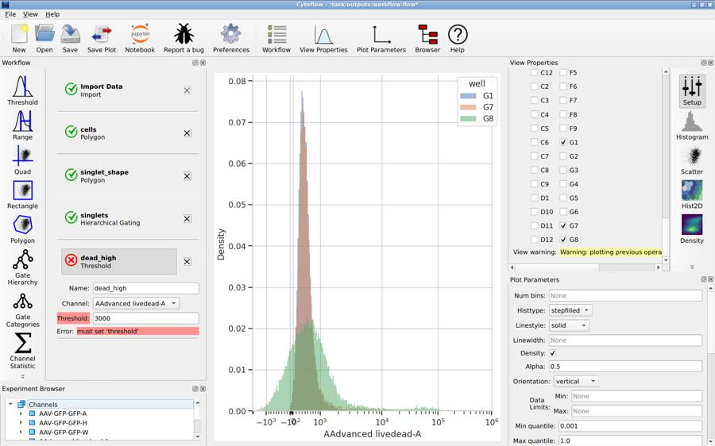
text(await tools.exec_command({cmd:"cu click 47 526 && cu screenshot /tmp/screen.png","max_output_tokens":1000}));image((await tools.view_image({path:"/tmp/screen.png"})).image_url);
Script completed Wall time 0.2 seconds Output:
{"chunk_id":"71d972","wall_time_seconds":0.053096905,"exit_code":0,"original_token_count":4,"output":"/tmp/screen.png\n"}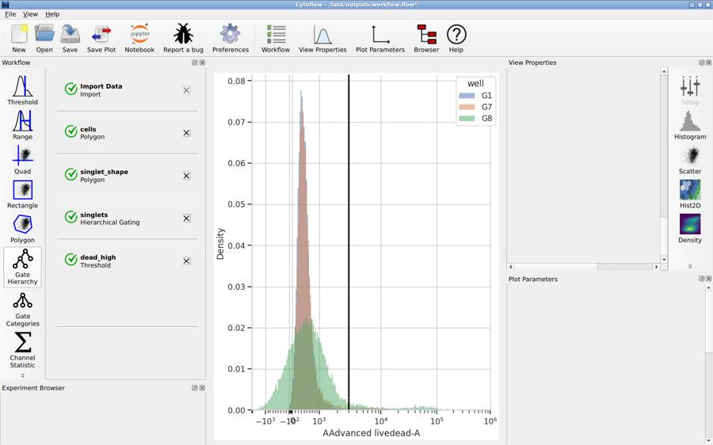
text(await tools.exec_command({cmd:"cu screenshot /tmp/screen.png","max_output_tokens":1000}));image((await tools.view_image({path:"/tmp/screen.png"})).image_url);
Script completed Wall time 0.2 seconds Output:
{"chunk_id":"4994db","wall_time_seconds":0.000005896,"exit_code":0,"original_token_count":4,"output":"/tmp/screen.png\n"}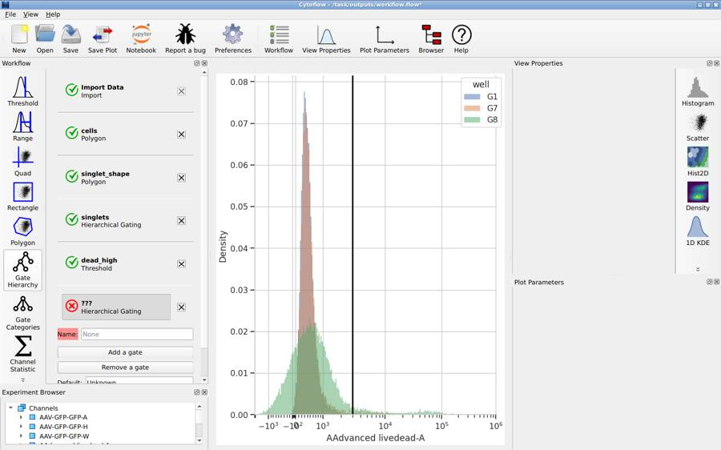
text(await tools.exec_command({cmd:"cu click 256 667 && cu key ctrl+a && cu type live && cu click 250 705 && cu scroll 325 668 down 6 && cu screenshot /tmp/screen.png","max_output_tokens":1000}));image((await tools.view_image({path:"/tmp/screen.png"})).image_url);
Script completed Wall time 1.1 seconds Output:
{"chunk_id":"7045f9","wall_time_seconds":0.909855327,"exit_code":0,"original_token_count":4,"output":"/tmp/screen.png\n"}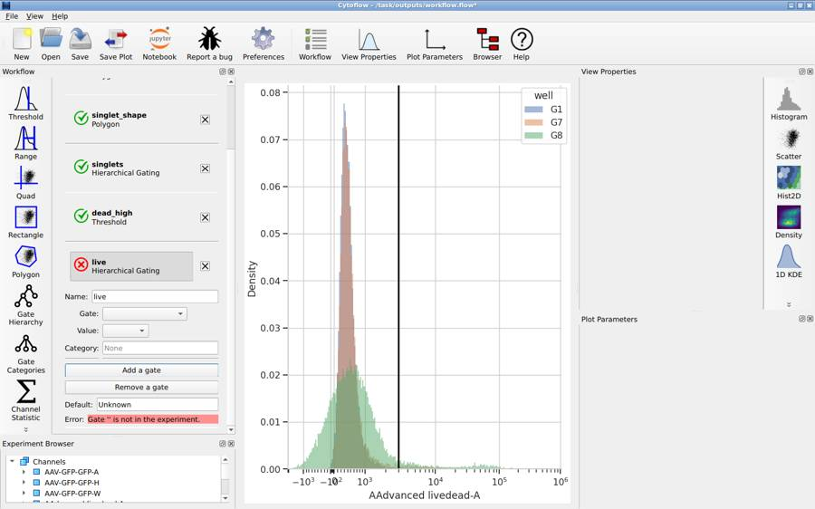
text(await tools.exec_command({cmd:"cu click 318 555 && cu key End && cu key Return && cu screenshot /tmp/screen.png","max_output_tokens":1000}));image((await tools.view_image({path:"/tmp/screen.png"})).image_url);
Script completed Wall time 0.3 seconds Output:
{"chunk_id":"ad2215","wall_time_seconds":0.083577597,"exit_code":0,"original_token_count":4,"output":"/tmp/screen.png\n"}text(await tools.exec_command({cmd:"cu click 248 584 && cu key End && cu key Return && cu click 258 614 && cu key ctrl+a && cu type Dead && cu key Tab && cu click 257 713 && cu key ctrl+a && cu type Fail && cu key Tab && cu click 251 654 && cu scroll 320 681 down 4 && cu screenshot /tmp/screen.png","max_output_tokens":1000}));image((await tools.view_image({path:"/tmp/screen.png"})).image_url);
Script completed Wall time 1.3 seconds Output:
{"chunk_id":"a6fcf9","wall_time_seconds":1.134937589,"exit_code":0,"original_token_count":4,"output":"/tmp/screen.png\n"}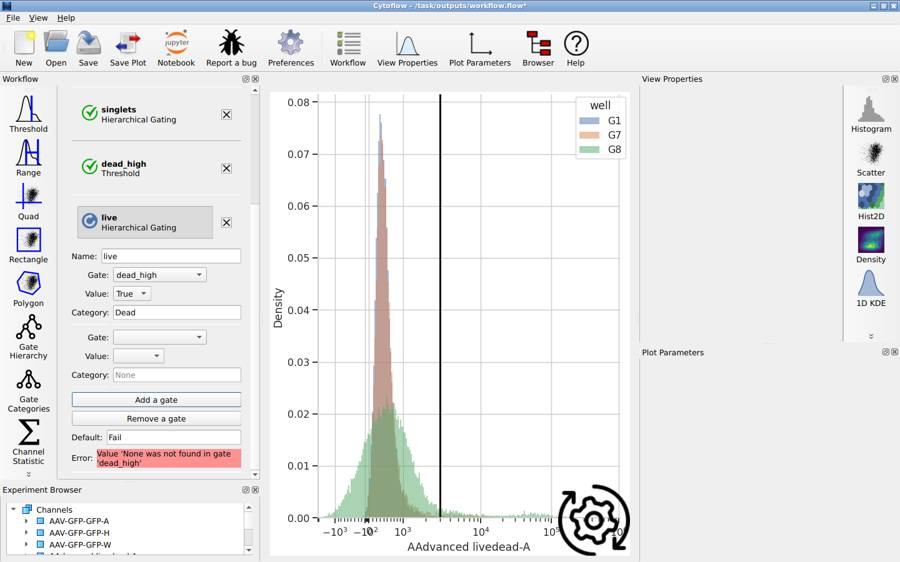
text(await tools.exec_command({cmd:"cu click 319 539 && cu screenshot /tmp/screen.png","max_output_tokens":1000}));image((await tools.view_image({path:"/tmp/screen.png"})).image_url);
Script completed Wall time 0.2 seconds Output:
{"chunk_id":"e09665","wall_time_seconds":0.052404561,"exit_code":0,"original_token_count":4,"output":"/tmp/screen.png\n"}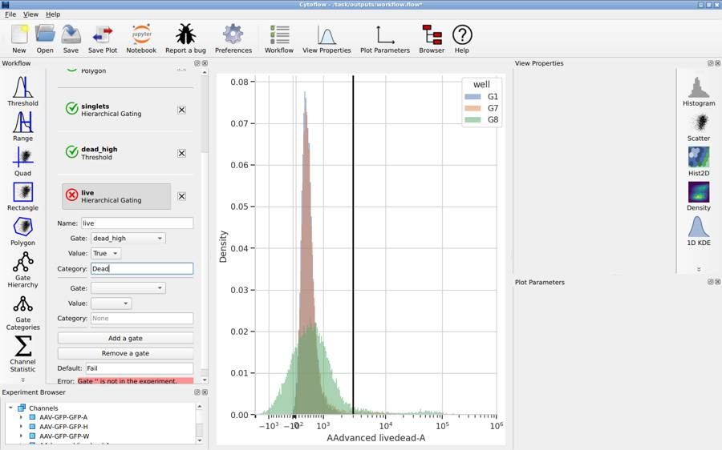
text(await tools.exec_command({cmd:"cu click 319 576 && cu screenshot /tmp/screen.png","max_output_tokens":1000}));image((await tools.view_image({path:"/tmp/screen.png"})).image_url);
Script completed Wall time 0.2 seconds Output:
{"chunk_id":"cc1ab4","wall_time_seconds":0.051659684,"exit_code":0,"original_token_count":4,"output":"/tmp/screen.png\n"}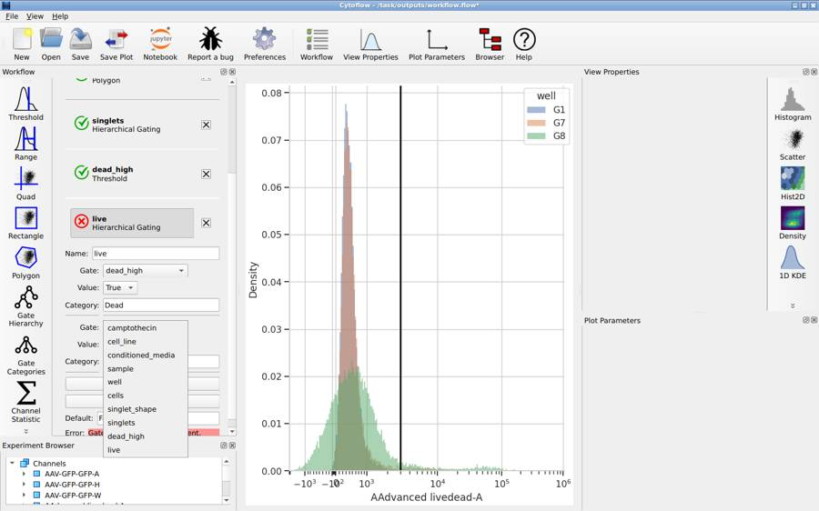
text(await tools.exec_command({cmd:"cu click 216 743 && cu click 249 607 && cu screenshot /tmp/screen.png","max_output_tokens":1000}));image((await tools.view_image({path:"/tmp/screen.png"})).image_url);
Script completed Wall time 0.3 seconds Output:
{"chunk_id":"62017a","wall_time_seconds":0.160048774,"exit_code":0,"original_token_count":4,"output":"/tmp/screen.png\n"}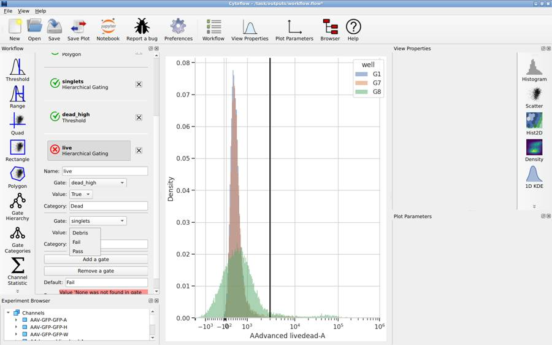
text(await tools.exec_command({cmd:"cu click 205 655 && cu click 267 637 && cu key ctrl+a && cu type Pass && cu key Tab && cu key ctrl+s && cu click 47 172 && cu screenshot /tmp/screen.png","max_output_tokens":1000}));image((await tools.view_image({path:"/tmp/screen.png"})).image_url);
Script completed Wall time 0.6 seconds Output:
{"chunk_id":"05e425","wall_time_seconds":0.45890652,"exit_code":0,"original_token_count":4,"output":"/tmp/screen.png\n"}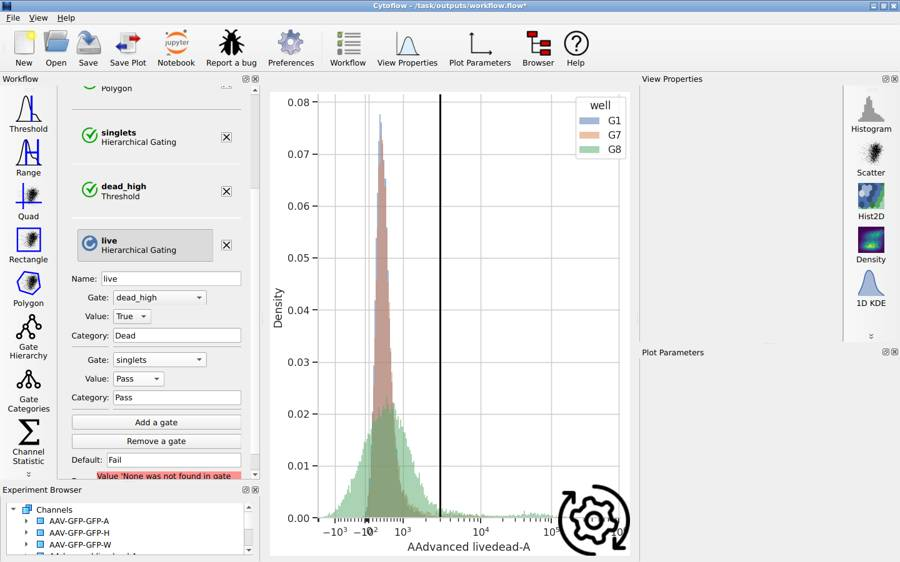
text(await tools.exec_command({cmd:"cu screenshot /tmp/screen.png","max_output_tokens":1000}));image((await tools.view_image({path:"/tmp/screen.png"})).image_url);
Script completed Wall time 0.2 seconds Output:
{"chunk_id":"bf66be","wall_time_seconds":0.000007302,"exit_code":0,"original_token_count":4,"output":"/tmp/screen.png\n"}text(await tools.exec_command({cmd:"cu click 914 545 && cu click 265 676 && cu key ctrl+a && cu type caspase_high && cu click 350 706 && cu key Home && cu key Return && cu click 1164 226 && cu key End && cu key Return && cu screenshot /tmp/screen.png","max_output_tokens":1000}));image((await tools.view_image({path:"/tmp/screen.png"})).image_url);
Script completed Wall time 1.0 seconds Output:
{"chunk_id":"90fa23","wall_time_seconds":0.794556887,"exit_code":0,"original_token_count":4,"output":"/tmp/screen.png\n"}text(await tools.exec_command({cmd:"cu click 1244 257 && cu key End && cu key Up && cu key Return && cu click 1112 712 && cu scroll 1250 469 down 40 && cu screenshot /tmp/screen.png","max_output_tokens":1000}));image((await tools.view_image({path:"/tmp/screen.png"})).image_url);
Script completed Wall time 4.4 seconds Output:
{"chunk_id":"9eda13","wall_time_seconds":4.229009532,"exit_code":0,"original_token_count":4,"output":"/tmp/screen.png\n"}text(await tools.exec_command({cmd:"cu click 1134 287 && cu click 1134 455 && cu click 1134 483 && cu scroll 1248 247 up 20 && cu screenshot /tmp/screen.png","max_output_tokens":1000}));image((await tools.view_image({path:"/tmp/screen.png"})).image_url);
Script completed Wall time 2.5 seconds Output:
{"chunk_id":"ecc1b6","wall_time_seconds":2.289424828,"exit_code":0,"original_token_count":4,"output":"/tmp/screen.png\n"}text(await tools.exec_command({cmd:"cu click 1074 277 && cu screenshot /tmp/screen.png","max_output_tokens":1000}));image((await tools.view_image({path:"/tmp/screen.png"})).image_url);
Script completed Wall time 0.3 seconds Output:
{"chunk_id":"d12142","wall_time_seconds":0.063607755,"exit_code":0,"original_token_count":4,"output":"/tmp/screen.png\n"}text(await tools.exec_command({cmd:"cu key ctrl+s && cu screenshot /tmp/screen.png","max_output_tokens":1000}));image((await tools.view_image({path:"/tmp/screen.png"})).image_url);
Script completed Wall time 0.2 seconds Output:
{"chunk_id":"c102c9","wall_time_seconds":0.000006389,"exit_code":0,"original_token_count":4,"output":"/tmp/screen.png\n"}text(await tools.exec_command({cmd:"cu click 283 736 && cu key ctrl+a && cu type 1000 && cu key Tab && cu screenshot /tmp/screen.png","max_output_tokens":1000}));image((await tools.view_image({path:"/tmp/screen.png"})).image_url);
Script completed Wall time 0.4 seconds Output:
{"chunk_id":"de5f41","wall_time_seconds":0.218587443,"exit_code":0,"original_token_count":4,"output":"/tmp/screen.png\n"}text(await tools.exec_command({cmd:"cu screenshot /task/outputs/caspase_control_gate.png && cu key ctrl+s","max_output_tokens":1000}));image((await tools.view_image({path:"/task/outputs/caspase_control_gate.png"})).image_url);
Script completed Wall time 0.2 seconds Output:
{"chunk_id":"e35b17","wall_time_seconds":0.000006061,"exit_code":0,"original_token_count":10,"output":"/task/outputs/caspase_control_gate.png\n"}text(await tools.clock__curr_time({}));text(await tools.exec_command({cmd:"cu click 44 526 && cu screenshot /tmp/screen.png","max_output_tokens":1000}));image((await tools.view_image({path:"/tmp/screen.png"})).image_url);
Script completed Wall time 0.2 seconds Output:
{"current_time":"2026-11-06 00:41:45 UTC"}{"chunk_id":"e6c252","wall_time_seconds":0.05150619,"exit_code":0,"original_token_count":4,"output":"/tmp/screen.png\n"}text(await tools.exec_command({cmd:"cu scroll 324 675 down 7 && cu screenshot /tmp/screen.png","max_output_tokens":1000}));image((await tools.view_image({path:"/tmp/screen.png"})).image_url);
Script completed Wall time 0.8 seconds Output:
{"chunk_id":"bfd05a","wall_time_seconds":0.655445263,"exit_code":0,"original_token_count":4,"output":"/tmp/screen.png\n"}text(await tools.exec_command({cmd:"cu click 264 603 && cu key ctrl+a && cu type caspase_positive && cu click 266 700 && cu key ctrl+a && cu type Fail && cu key Tab && cu click 252 640 && cu screenshot /tmp/screen.png","max_output_tokens":1000}));image((await tools.view_image({path:"/tmp/screen.png"})).image_url);
Script completed Wall time 1.1 seconds Output:
{"chunk_id":"f56fc0","wall_time_seconds":0.874011466,"exit_code":0,"original_token_count":4,"output":"/tmp/screen.png\n"}text(await tools.exec_command({cmd:"cu click 253 654 && cu scroll 326 674 down 4 && cu screenshot /tmp/screen.png","max_output_tokens":1000}));image((await tools.view_image({path:"/tmp/screen.png"})).image_url);
Script completed Wall time 0.6 seconds Output:
{"chunk_id":"ddc43a","wall_time_seconds":0.457722573,"exit_code":0,"original_token_count":4,"output":"/tmp/screen.png\n"}text(await tools.exec_command({cmd:"cu click 319 554 && cu key End && cu key Return && cu click 249 585 && cu key Home && cu key Return && cu click 270 615 && cu key ctrl+a && cu type Negative && cu key Tab && cu screenshot /tmp/screen.png","max_output_tokens":1000}));image((await tools.view_image({path:"/tmp/screen.png"})).image_url);
Script completed Wall time 0.8 seconds Output:
{"chunk_id":"7335e5","wall_time_seconds":0.598254069,"exit_code":0,"original_token_count":4,"output":"/tmp/screen.png\n"}text(await tools.exec_command({cmd:"cu click 250 655 && cu scroll 328 681 down 4 && cu screenshot /tmp/screen.png","max_output_tokens":1000}));image((await tools.view_image({path:"/tmp/screen.png"})).image_url);
Script completed Wall time 0.6 seconds Output:
{"chunk_id":"c2fd95","wall_time_seconds":0.463148861,"exit_code":0,"original_token_count":4,"output":"/tmp/screen.png\n"}text(await tools.exec_command({cmd:"cu click 251 676 && cu scroll 329 687 down 4","max_output_tokens":1000}));await new Promise(r=>setTimeout(r,2000));text(await tools.exec_command({cmd:"cu screenshot /tmp/screen.png","max_output_tokens":1000}));image((await tools.view_image({path:"/tmp/screen.png"})).image_url);
Script completed Wall time 2.7 seconds Output:
{"chunk_id":"007486","wall_time_seconds":0.369773163,"exit_code":0,"original_token_count":0,"output":""}{"chunk_id":"eb2f47","wall_time_seconds":0.000005512,"exit_code":0,"original_token_count":4,"output":"/tmp/screen.png\n"}text(await tools.exec_command({cmd:"cu click 319 676 && cu key End && cu key Up && cu key Up && cu key Return && cu click 249 706 && cu key End && cu key Return && cu click 271 737 && cu key ctrl+a && cu type Pass && cu key Tab","max_output_tokens":1000}));await new Promise(r=>setTimeout(r,4000));text(await tools.exec_command({cmd:"cu screenshot /tmp/screen.png","max_output_tokens":1000}));image((await tools.view_image({path:"/tmp/screen.png"})).image_url);
Script completed Wall time 4.8 seconds Output:
{"chunk_id":"acce92","wall_time_seconds":0.441088874,"exit_code":0,"original_token_count":0,"output":""}{"chunk_id":"7785b7","wall_time_seconds":0.000006038,"exit_code":0,"original_token_count":4,"output":"/tmp/screen.png\n"}text(await tools.exec_command({cmd:"cu key ctrl+s && cu screenshot /tmp/screen.png","max_output_tokens":1000}));image((await tools.view_image({path:"/tmp/screen.png"})).image_url);
Script completed Wall time 0.2 seconds Output:
{"chunk_id":"eba345","wall_time_seconds":0.000005923,"exit_code":0,"original_token_count":4,"output":"/tmp/screen.png\n"}text(await tools.exec_command({cmd:"cu click 45 694","max_output_tokens":1000}));await new Promise(r=>setTimeout(r,1500));text(await tools.exec_command({cmd:"cu scroll 143 680 down 12 && cu screenshot /tmp/screen.png","max_output_tokens":1000}));image((await tools.view_image({path:"/tmp/screen.png"})).image_url);
Script completed Wall time 3.0 seconds Output:
{"chunk_id":"f340a2","wall_time_seconds":0.000004297,"exit_code":0,"original_token_count":0,"output":""}{"chunk_id":"fbe7e1","wall_time_seconds":1.1576094000000001,"exit_code":0,"original_token_count":4,"output":"/tmp/screen.png\n"}text(await tools.exec_command({cmd:"cu scroll 139 367 up 9 && cu screenshot /tmp/screen.png","max_output_tokens":1000}));image((await tools.view_image({path:"/tmp/screen.png"})).image_url);
Script completed Wall time 1.0 seconds Output:
{"chunk_id":"28cae7","wall_time_seconds":0.855348704,"exit_code":0,"original_token_count":4,"output":"/tmp/screen.png\n"}text(await tools.exec_command({cmd:"cu drag 419 424 528 424 && cu click 278 445 && cu key ctrl+a && cu type counts_all && cu click 341 475 && cu key Home && cu key Down && cu key Down && cu key Down && cu key Down && cu key Down && cu key Down && cu key Return && cu click 319 507 && cu screenshot /tmp/screen.png","max_output_tokens":1000}));image((await tools.view_image({path:"/tmp/screen.png"})).image_url);
Script completed Wall time 0.9 seconds Output:
{"chunk_id":"c7ad4b","wall_time_seconds":0.731089496,"exit_code":0,"original_token_count":4,"output":"/tmp/screen.png\n"}text(await tools.exec_command({cmd:"cu click 212 507 && cu click 405 674","max_output_tokens":1000}));await new Promise(r=>setTimeout(r,5000));text(await tools.exec_command({cmd:"cu key ctrl+s && cu scroll 1397 472 down 8 && cu screenshot /tmp/screen.png","max_output_tokens":1000}));image((await tools.view_image({path:"/tmp/screen.png"})).image_url);
Script completed Wall time 6.2 seconds Output:
{"chunk_id":"cb8978","wall_time_seconds":0.069980788,"exit_code":0,"original_token_count":0,"output":""}{"chunk_id":"541859","wall_time_seconds":0.785140518,"exit_code":0,"original_token_count":4,"output":"/tmp/screen.png\n"}text(await tools.exec_command({cmd:"cu click 1393 538 && cu click 1393 538 && cu click 1393 538 && cu screenshot /tmp/screen.png","max_output_tokens":1000}));image((await tools.view_image({path:"/tmp/screen.png"})).image_url);
Script completed Wall time 0.5 seconds Output:
{"chunk_id":"f22f49","wall_time_seconds":0.269493395,"exit_code":0,"original_token_count":4,"output":"/tmp/screen.png\n"}text(await tools.exec_command({cmd:"cu drag 1166 552 1166 811 && cu screenshot /tmp/screen.png","max_output_tokens":1000}));image((await tools.view_image({path:"/tmp/screen.png"})).image_url);
Script completed Wall time 0.2 seconds Output:
{"chunk_id":"b1001c","wall_time_seconds":0.000009444,"exit_code":0,"original_token_count":4,"output":"/tmp/screen.png\n"}text(await tools.exec_command({cmd:"cu click 1393 791","max_output_tokens":1000}));await new Promise(r=>setTimeout(r,1000));text(await tools.exec_command({cmd:"cu screenshot /tmp/screen.png","max_output_tokens":1000}));image((await tools.view_image({path:"/tmp/screen.png"})).image_url);
Script completed Wall time 1.3 seconds Output:
{"chunk_id":"d86e58","wall_time_seconds":0.000004315,"exit_code":0,"original_token_count":0,"output":""}{"chunk_id":"e2d9a1","wall_time_seconds":0.00000526,"exit_code":0,"original_token_count":4,"output":"/tmp/screen.png\n"}text(await tools.exec_command({cmd:"cu click 1401 599","max_output_tokens":1000}));await new Promise(r=>setTimeout(r,1200));text(await tools.exec_command({cmd:"cu screenshot /tmp/screen.png","max_output_tokens":1000}));image((await tools.view_image({path:"/tmp/screen.png"})).image_url);
Script completed Wall time 1.5 seconds Output:
{"chunk_id":"e893e4","wall_time_seconds":0.000004552,"exit_code":0,"original_token_count":0,"output":""}{"chunk_id":"fa01e2","wall_time_seconds":0.000006009,"exit_code":0,"original_token_count":4,"output":"/tmp/screen.png\n"}text(await tools.exec_command({cmd:"cu click 1180 181 && cu key Home && cu key Return","max_output_tokens":1000}));await new Promise(r=>setTimeout(r,1200));text(await tools.exec_command({cmd:"cu screenshot /tmp/screen.png","max_output_tokens":1000}));image((await tools.view_image({path:"/tmp/screen.png"})).image_url);
Script completed Wall time 1.5 seconds Output:
{"chunk_id":"bec557","wall_time_seconds":0.000004862,"exit_code":0,"original_token_count":0,"output":""}{"chunk_id":"3098ba","wall_time_seconds":0.000005873,"exit_code":0,"original_token_count":4,"output":"/tmp/screen.png\n"}text(await tools.exec_command({cmd:"cu click 1181 181 && cu screenshot /tmp/screen.png","max_output_tokens":1000}));image((await tools.view_image({path:"/tmp/screen.png"})).image_url);
Script completed Wall time 0.3 seconds Output:
{"chunk_id":"823e7f","wall_time_seconds":0.061761628,"exit_code":0,"original_token_count":4,"output":"/tmp/screen.png\n"}text(await tools.exec_command({cmd:"cu click 1135 205","max_output_tokens":1000}));await new Promise(r=>setTimeout(r,1000));text(await tools.exec_command({cmd:"cu click 1144 211 && cu screenshot /tmp/screen.png","max_output_tokens":1000}));image((await tools.view_image({path:"/tmp/screen.png"})).image_url);
Script completed Wall time 1.4 seconds Output:
{"chunk_id":"7278ca","wall_time_seconds":0.00000461,"exit_code":0,"original_token_count":0,"output":""}{"chunk_id":"3ebc5a","wall_time_seconds":0.064810235,"exit_code":0,"original_token_count":4,"output":"/tmp/screen.png\n"}text(await tools.exec_command({cmd:"cu click 677 567 && cu paste /task/outputs/cytoflow_all_counts.csv && cu click 976 567","max_output_tokens":1000}));await new Promise(r=>setTimeout(r,1000));text(await tools.exec_command({cmd:"cu screenshot /tmp/screen.png && head -6 /task/outputs/cytoflow_all_counts.csv","max_output_tokens":1000}));image((await tools.view_image({path:"/tmp/screen.png"})).image_url);
Script completed Wall time 2.7 seconds Output:
{"chunk_id":"7b11e5","wall_time_seconds":1.403560754,"exit_code":0,"original_token_count":0,"output":""}{"chunk_id":"297713","wall_time_seconds":0.000005576,"exit_code":0,"original_token_count":22,"output":"/tmp/screen.png\nwell,FSC-A\nA1,31328.0\nA10,42298.0\nA11,43376.0\nA12,30724.0\nA2,40169.0\n"}text(await tools.exec_command({cmd:"cu click 267 390 right && cu screenshot /tmp/screen.png","max_output_tokens":1000}));image((await tools.view_image({path:"/tmp/screen.png"})).image_url);
Script completed Wall time 0.2 seconds Output:
{"chunk_id":"ca06fb","wall_time_seconds":0.059492984,"exit_code":0,"original_token_count":4,"output":"/tmp/screen.png\n"}text(await tools.exec_command({cmd:"cu click 283 445 && cu key ctrl+a && cu type counts_by_gate && cu key Tab && cu click 185 647 && cu click 404 647 && cu click 404 563 && cu click 185 590 && cu click 185 563","max_output_tokens":1000}));await new Promise(r=>setTimeout(r,5000));text(await tools.exec_command({cmd:"cu screenshot /tmp/screen.png","max_output_tokens":1000}));image((await tools.view_image({path:"/tmp/screen.png"})).image_url);
Script completed Wall time 6.2 seconds Output:
{"chunk_id":"bf914d","wall_time_seconds":0.91317377,"exit_code":0,"original_token_count":0,"output":""}{"chunk_id":"c4ed57","wall_time_seconds":0.000005162,"exit_code":0,"original_token_count":4,"output":"/tmp/screen.png\n"}text(await tools.web__run({search_query:[{q:"site.thermofisher.com Attune NxT BL2 574/26 BL3 695/40 filter configuration"}],response_length:"short"}));text(await tools.exec_command({cmd:"cu screenshot /tmp/screen.png","max_output_tokens":1000}));image((await tools.view_image({path:"/tmp/screen.png"})).image_url);
Script completed Wall time 0.9 seconds Output:
Reagent Selection Guide for the Attune Flow Cytometers | Thermo Fisher Scientific - US (https://www.thermofisher.com/us/en/home/life-science/cell-analysis/flow-cytometry/flow-cytometers/attune-acoustic-focusing-flow-cytometer/reagent-selection-guide-attune-flow-cytometer.html) citeturn1search0 [wordlim: 200] Crawled: yesterday; The antibody labels and fluorescent proteins that are compatible with each Attune Flow Cytometer laser configuration are shown in the expandable sections below. ... 574/26 | BL2 ... 695/40 | BL3 | PE-Alexa Fluor 700 ## Find compatible reagents according to Attune instrument configuration The antibody labels and fluorescent proteins that are compatible with each Attune Flow Cytometer laser configuration are shown in the expandable sections below. Blue configuration Excitation laser | Emission filter (nm) | Channel | Antibody labels | Compatible fluorescent proteins --- | --- | --- | --- | --- Blue–488 nm | 530/30 | BL1 | Alexa Fluor 488 FITC | eGFP Emerald eYFP 574/26 | BL2 | Alexa Fluor 546 PE Qdot 565 Qdot 585 | eYFP mCitrine Venus 695/40 | BL3 | PE-Alexa Fluor 700 PE-Cy5.5 PerCP PerCP-Cy5.5 Qdot 705 TRI-COLOR | 780/60 | BL4 | Pe-Cy7 PE-Alexa Fluor 750 Qdot 800 | Blue/green configuration Excitation laser | Emission filter (nm) | Channel | Antibody labels | Compatible fluorescent proteins --- | --- | --- | --- | --- Blue–488 nm | 525/50 | BL1 | Alexa Fluor 488 FITC | eGFP Emerald eYFP 590/40 | BL2 | PE PE-Alexa Fluor 610 PE-Texas Red | EYFP mCitrine -------------------------------------------------------------------------------- Attune™ NxT Acoustic Focusing Cytometer User Guide (Pub. no. 100024235) (https://documents.thermofisher.com/TFS-Assets/LSG/manuals/100024235_AttuneNxT_HW_UG.pdf) citeturn1search12 [wordlim: 200] Published: 10.9 years ago; Default filter label list ... An X in the Instrument Configuration columns indicates that the filters listed in the table apply to that specific instrument configuration. ... <td><b>BL2</b></td> ... <td><b>574/26</b></td> ... <td><b>695/40</b></td> <td>X</td><td>X</td><td>X</td><td>X</td><td>X</td><td>X</td><td>X</td> </tr> <tr> <td><b>BL2</b></td> <td>Band Pass</td> <td><b>574/26</b></td> <td>RPE, Alexa Fluor 568, PI, SYTOX Orange, DyeCycle Orange</td> <td>X</td><td>X</td><td>X</td><td></td><td>X</td><td></td><td></td> </tr> <tr> <td><b>BL2(Y)</b></td> <td>Band Pass</td> <td><b>590/40</b></td> <td>PE-Texas Red, PE-AF 610, PI, Fixable Red</td> <td></td><td></td><td></td><td>X</td><td></td><td>X</td><td>X</td> </tr> <tr> <td><b>BL3</b></td> <td>Band Pass</td> <td><b>695/40</b></td> <td>PE-Cy5.5, PE-AF700, PerCP-Cy5.5, PerCP, SYTOX AADvanced</td> <td>X</td><td>X</td><td>X</td><td></td><td>X</td><td></td><td></td> </tr> <tr> <td><b>BL3(Y)</b></td> <td>Band Pass</td> <td><b>695/40</b></td> <td>PerCP, PerCP-Cy5.5, PE-AF 700</td> <td></td><td></td><td></td><td>X</td><td></td><td>X</td><td>X</td> </tr> <tr> <td><b>BL4</b></td> <td>Band Pass</td> <td><b>780/60</b></td> <td>PE-Cy7, Qdot 800, DyeCycle Ruby</td> <td>X</td><td>X</td><td>X</td><td></td><td>X</td><td></td><td></td> -------------------------------------------------------------------------------- USER GUIDE Attune™ NxT Acoustic Focusing Cytomet (https://assets.thermofisher.com/TFS-Assets/LSG/manuals/100024235_AttuneNxT_HW_UG.pdf) citeturn1search13 [wordlim: 200] Published: 2.2 years ago; Laser Line | Channel | Filter Type | Wavelength | Labels | BXXX | BRXX | BVXX | BYXX | BRVX | BVYX | BRVY ... | BL2 | Band Pass | 574/26 | RPE, Alexa Fluor 568, PI, SYTOX Orange, ... | BL3 | Band Pass | 695/40 | PE-Cy5.5, PE-AF700, PerCP-Cy5.5, PerCP, -------------------------------------------------------------------------------- user guide Attune™ NxT Acoustic Focusing Cytomet (https://tools.qa.thermofisher.com/content/sfs/manuals/100024234_AttuneNxT_Maint_TS_Guide.pdf) citeturn1search14 [wordlim: 200] Published: 8 months ago; | BL2 | Band Pass | 574/26 | RPE, Alexa Fluor 568, PI, SYTOX Orange, DyeCycle Orange | Instrument Configuration X | X | X | | X | | ... | BL3 | Band Pass | 695/40 | PE-Cy5.5, PE-AF700, PerCP-Cy5.5, PerCP, SYTOX AADVanced | Instrument Configuration X | X | X | | X | | -------------------------------------------------------------------------------- Attune Flow Cytometry Maintenance and Troubleshooting Guide (https://documents.thermofisher.com/TFS-Assets/LSG/manuals/100024234_AttuneNxT_Maint_TS_Guide.pdf) citeturn1search15 [wordlim: 200] Published: 5.1 years ago; Crawled: 5.1 years ago; The following images show each laser configuration that is available for Attune™ NxT and Attune™ CytPix™ Flow Cytometers (page 80), for Attune™ NxT Flow Cytometer only (page 84), and for Attune™ CytPix™ Flow Cytometer only (page 88). ... Violet/blue panel: Blank, 495LP (A), SSC, 488/10, 503LP, 555LP (B), BL1 530/30, 650LP (C), BL2 574/26, 740LP (D), BL3 695/40, BL4 780/60; side labels 1, 2, 3, 4, 5; 1A 503LP; X Blank. ... Violet/blue panel: Blank, 495LP (A), SSC, 488/10, 503LP, 555LP (B), BL1 530/30, 650LP (C), BL2 574/26, 740LP (D), BL3 695/40, BL4 780/60; side labels 1, 2, 3, 4, 5; 1A 503LP. -------------------------------------------------------------------------------- Attune NxT Flow Cytometer (https://assets.thermofisher.com/TFS-Assets/LSG/brochures/attune-nxt-flow-cytometer-brochure.pdf) citeturn1search16 [wordlim: 200] Published: 2.2 years ago; The Attune NxT Flow Cytometer filter configurations. ... BL2 | 574/26 | 590/40 | 590/40 | 574/26 | 574/26 | 574/26 | 590/40 | 574/26 | 590/40 | 574/26 | 590/40 | 574/26 | 695/40 | 590/40 | 590/40 -------------------------------------------------------------------------------- Attune NxT Software User Guide | PDF | Flow Cytometry | Login (https://it.scribd.com/document/892169451/4-Attune-Software-User-Guide) citeturn1search1 [wordlim: 200] Published: 9.9 years ago; Crawled: 1.3 years ago; ## 166 Attune™ NxT Software ... BL2 B … [6,440 more characters not shown]
{"chunk_id":"97fdd9","wall_time_seconds":0.000006463,"exit_code":0,"original_token_count":4,"output":"/tmp/screen.png\n"}text(await tools.exec_command({cmd:"python - <<'PY'\nimport pandas as pd\nx=pd.read_csv('/task/outputs/cytoflow_all_counts.csv')\nx['FSC-A']=x['FSC-A'].astype(int)\nprint(x.describe().to_string())\nprint(x.sort_values('FSC-A').head(15).to_string(index=False))\nprint('total', x['FSC-A'].sum())\nPY","max_output_tokens":2000}));
Script completed
Wall time 0.0 seconds
Output:
{"chunk_id":"e8c735","wall_time_seconds":0.000005385,"exit_code":127,"original_token_count":12,"output":"/bin/bash: line 1: python: command not found\n"}text(await tools.exec_command({cmd:"python3 - <<'PY'\nimport pandas as pd\nx=pd.read_csv('/task/outputs/cytoflow_all_counts.csv')\nx['FSC-A']=x['FSC-A'].astype(int)\nprint(x.describe().to_string())\nprint(x.sort_values('FSC-A').head(15).to_string(index=False))\nprint('total', x['FSC-A'].sum())\nPY","max_output_tokens":2000}));text(await tools.exec_command({cmd:"cu screenshot /tmp/screen.png","max_output_tokens":1000}));image((await tools.view_image({path:"/tmp/screen.png"})).image_url);
Script completed Wall time 0.9 seconds Output:
{"chunk_id":"e1c2fa","wall_time_seconds":0.567370042,"exit_code":0,"original_token_count":97,"output":" FSC-A\ncount 80.000000\nmean 27746.762500\nstd 9654.937616\nmin 11614.000000\n25% 18765.250000\n50% 26446.000000\n75% 35639.000000\nmax 47337.000000\nwell FSC-A\n F1 11614\n F4 11834\n F8 13717\n F5 14031\n F6 14662\n F12 15652\n E8 15706\n C10 15794\n G5 15961\n F9 16566\n G6 16761\n F10 16796\n C1 17681\n B5 17852\n C4 18113\ntotal 2219741\n"}{"chunk_id":"956388","wall_time_seconds":0.000006069,"exit_code":0,"original_token_count":4,"output":"/tmp/screen.png\n"}text(await tools.exec_command({cmd:"cu click 1213 181 && cu key End && cu key Return","max_output_tokens":1000}));await new Promise(r=>setTimeout(r,1500));text(await tools.exec_command({cmd:"cu click 1156 212 && cu screenshot /tmp/screen.png","max_output_tokens":1000}));image((await tools.view_image({path:"/tmp/screen.png"})).image_url);
Script completed Wall time 1.9 seconds Output:
{"chunk_id":"e6704f","wall_time_seconds":0.000006426,"exit_code":0,"original_token_count":0,"output":""}{"chunk_id":"324b80","wall_time_seconds":0.06477699,"exit_code":0,"original_token_count":4,"output":"/tmp/screen.png\n"}text(await tools.exec_command({cmd:"cu click 980 600 && cu click 1213 182 && cu screenshot /tmp/screen.png","max_output_tokens":1000}));image((await tools.view_image({path:"/tmp/screen.png"})).image_url);
Script completed Wall time 0.3 seconds Output:
{"chunk_id":"e6ff83","wall_time_seconds":0.163629142,"exit_code":0,"original_token_count":4,"output":"/tmp/screen.png\n"}text(await tools.exec_command({cmd:"cu click 1157 206","max_output_tokens":1000}));await new Promise(r=>setTimeout(r,1500));text(await tools.exec_command({cmd:"cu click 1165 211 && cu screenshot /tmp/screen.png","max_output_tokens":1000}));image((await tools.view_image({path:"/tmp/screen.png"})).image_url);
Script completed Wall time 1.9 seconds Output:
{"chunk_id":"297a0d","wall_time_seconds":0.000005003,"exit_code":0,"original_token_count":0,"output":""}{"chunk_id":"cc899c","wall_time_seconds":0.066921642,"exit_code":0,"original_token_count":4,"output":"/tmp/screen.png\n"}text(await tools.exec_command({cmd:"cu click 691 567 && cu paste /task/outputs/cytoflow_gate_counts.csv && cu click 980 567","max_output_tokens":1000}));await new Promise(r=>setTimeout(r,1500));text(await tools.exec_command({cmd:"cu key ctrl+s && cu screenshot /tmp/screen.png && head -8 /task/outputs/cytoflow_gate_counts.csv","max_output_tokens":2000}));image((await tools.view_image({path:"/tmp/screen.png"})).image_url);
Script completed Wall time 3.3 seconds Output:
{"chunk_id":"6ecd3c","wall_time_seconds":1.405844519,"exit_code":0,"original_token_count":0,"output":""}{"chunk_id":"34ed34","wall_time_seconds":0.00000599,"exit_code":0,"original_token_count":74,"output":"/tmp/screen.png\nwell,cells,singlets,live,caspase_positive,caspase_high,FSC-A\nA1,0,Debris,Dead,Fail,1,511.0\nA1,0,Debris,Dead,Negative,0,367.0\nA1,0,Debris,Fail,Fail,1,53.0\nA1,0,Debris,Fail,Negative,0,8830.0\nA1,1,Fail,Dead,Fail,1,1205.0\nA1,1,Fail,Dead,Negative,0,1069.0\nA1,1,Fail,Fail,Fail,1,94.0\n"}text(await tools.exec_command({cmd:"python3 - <<'PY'\nimport pandas as pd\nx=pd.read_csv('/task/outputs/cytoflow_gate_counts.csv'); print('Rows',len(x)); x['FSC-A']=x['FSC-A'].astype(int)\na=x.groupby('well')['FSC-A'].sum(); print('Total',a.sum())\nlayout=pd.read_csv('/task/inputs/plate_layout.csv').set_index('well')\nq=pd.DataFrame({'all_events':a})\nfor col,val in [('cells',1),('singlets','Pass'),('live','Pass'),('caspase_positive','Pass')]:q[col]=x[x[col]==val].groupby('well')['FSC-A'].sum().reindex(a.index,fill_value=0)\nq['caspase_all_singlets']=x[(x.singlets=='Pass')&(x.caspase_high==1)].groupby('well')['FSC-A'].sum().reindex(a.index,fill_value=0)\nq['percent_live']=100*q.live/q.singlets\nq['caspase_pct_live']=100*q.caspase_positive/q.live\nq['caspase_pct_singlets']=100*q.caspase_all_singlets/q.singlets\nq=q.join(layout)\nq.to_csv('/task/outputs/well_metrics.csv')\nprint(q.loc[[f'G{i}' for i in range(1,9)],['all_events','cells','singlets','live','caspase_positive','percent_live','caspase_pct_live','caspase_pct_singlets']].round(3).to_string())\nr=q[~q.index.str.startswith('G')].groupby(['cell_line','camptothecin','conditioned_media'])[['caspase_pct_live','caspase_pct_singlets','percent_live']].agg(['mean','std'])\nprint(r.round(2).to_string())\nprint('Lowest live counts\\n',q.sort_values('live')[['live','singlets','percent_live','caspase_pct_live']].head(15).round(3).to_string())\nPY","max_output_tokens":6000}));
Script completed
Wall time 0.4 seconds
Output:
{"chunk_id":"b6fb28","wall_time_seconds":0.278480465,"exit_code":0,"original_token_count":1689,"output":"Rows 955\nTotal 2219741\n all_events cells singlets live caspase_positive percent_live caspase_pct_live caspase_pct_singlets\nwell \nG1 26210 24703 20764 20730 0 99.836 0.000 0.058\nG2 24654 22824 21055 17976 27 85.376 0.150 5.286\nG3 35885 32067 29520 24711 32 83.709 0.129 7.520\nG4 34209 30460 27981 23555 22 84.182 0.093 8.374\nG5 15961 12818 10923 9517 24 87.128 0.252 4.751\nG6 16761 13425 11830 9620 14 81.319 0.146 5.647\nG7 24019 22558 20577 20137 280 97.862 1.390 3.450\nG8 24323 23125 21624 20222 0 93.516 0.000 0.037\n caspase_pct_live caspase_pct_singlets percent_live \n mean std mean std mean std\ncell_line camptothecin conditioned_media \nE1 10uM WT 24hr conditioned media 10.84 8.52 66.27 3.02 24.81 2.17\n WT 48hr conditioned media 8.16 5.19 70.05 7.70 20.17 4.31\n no conditioned media 3.65 1.95 49.36 8.76 37.33 7.53\n 2uM WT 24hr conditioned media 8.71 8.27 74.43 4.51 20.14 3.42\n WT 48hr conditioned media 6.58 5.29 72.98 3.47 19.53 1.47\n no conditioned media 6.46 2.99 56.57 8.00 32.14 3.04\n 5uM WT 24hr conditioned media 7.94 5.46 70.46 7.72 24.50 6.29\n WT 48hr conditioned media 6.56 4.97 70.60 6.87 22.06 4.43\n no conditioned media 3.14 1.68 48.55 9.29 39.81 2.96\n DMSO WT 24hr conditioned media 9.31 4.31 70.91 11.63 21.00 7.84\n WT 48hr conditioned media 8.91 2.78 70.54 4.22 18.27 4.86\n no conditioned media 3.95 1.53 47.10 2.77 35.51 5.92\nE3 10uM WT 24hr conditioned media 0.57 0.38 44.77 1.15 31.80 5.97\n WT 48hr conditioned media 0.43 0.39 41.70 2.52 36.27 0.25\n no conditioned media 0.24 0.16 21.35 10.09 53.52 14.15\n 2uM WT 24hr conditioned media 0.25 0.04 42.37 4.80 36.81 2.32\n WT 48hr conditioned media 0.31 0.04 41.37 8.88 37.61 6.45\n no conditioned media 0.12 0.06 14.06 6.59 71.73 10.43\n 5uM WT 24hr conditioned media 1.41 0.92 51.27 3.67 32.12 0.36\n WT 48hr conditioned media 0.35 0.24 45.96 5.47 32.78 1.72\n no conditioned media 0.28 0.24 16.04 8.55 65.38 16.79\n DMSO WT 24hr conditioned media 0.65 0.33 51.81 7.64 28.67 2.95\n WT 48hr conditioned media 0.14 0.08 26.27 14.68 49.02 15.22\n no conditioned media 0.21 0.10 15.91 1.15 70.12 1.30\nWT 10uM WT 24hr conditioned media 2.38 1.90 27.05 10.30 64.27 7.91\n WT 48hr conditioned media 2.68 2.58 26.60 4.12 65.66 4.22\n no conditioned media 1.75 1.57 24.58 5.36 63.13 6.20\n 2uM WT 24hr conditioned media 2.84 3.02 26.03 6.39 67.96 6.04\n WT 48hr conditioned media 1.21 0.98 23.24 5.00 67.40 4.19\n no conditioned media 1.45 1.43 24.34 2.27 67.94 1.65\n 5uM WT 24hr conditioned media 2.52 2.73 24.47 4.23 69.57 4.49\n WT 48hr conditioned media 1.34 1.41 23.42 4.02 67.24 1.78\n no conditioned media 1.34 1.42 23.12 2.87 68.00 1.94\n DMSO WT 24hr conditioned media 3.49 3.59 33.46 7.23 58.68 7.49\n WT 48hr conditioned media 1.71 1.21 31.02 10.40 59.39 7.86\n no conditioned media 1.17 1.29
… [978 more characters not shown]text(await tools.exec_command({cmd:"cu click 1391 245","max_output_tokens":1000}));await new Promise(r=>setTimeout(r,1000));text(await tools.exec_command({cmd:"cu screenshot /tmp/screen.png","max_output_tokens":1000}));image((await tools.view_image({path:"/tmp/screen.png"})).image_url);
Script completed Wall time 1.3 seconds Output:
{"chunk_id":"f06e2d","wall_time_seconds":0.000006195,"exit_code":0,"original_token_count":0,"output":""}{"chunk_id":"b0aea9","wall_time_seconds":0.00000565,"exit_code":0,"original_token_count":4,"output":"/tmp/screen.png\n"}text(await tools.exec_command({cmd:"cu click 1295 181 && cu key Home && cu key Return && cu click 1190 211 && cu key End && cu key Return && cu click 1295 241 && cu key Home && cu key Down && cu key Down && cu key Down && cu key Return && cu click 1190 271 && cu key End && cu key Return && cu click 1271 371 && cu key End && cu key Up && cu key Return && cu scroll 1237 719 down 45","max_output_tokens":1000}));await new Promise(r=>setTimeout(r,2000));text(await tools.exec_command({cmd:"cu screenshot /tmp/screen.png","max_output_tokens":1000}));image((await tools.view_image({path:"/tmp/screen.png"})).image_url);
Script completed Wall time 7.5 seconds Output:
{"chunk_id":"e867f7","wall_time_seconds":5.149588205,"exit_code":0,"original_token_count":0,"output":""}{"chunk_id":"52be9c","wall_time_seconds":0.000005304,"exit_code":0,"original_token_count":4,"output":"/tmp/screen.png\n"}text(await tools.exec_command({cmd:"cu click 1134 561 && cu click 1134 730 && cu click 1134 758 && cu scroll 1226 400 up 18","max_output_tokens":1000}));await new Promise(r=>setTimeout(r,2000));text(await tools.exec_command({cmd:"cu screenshot /tmp/screen.png","max_output_tokens":1000}));image((await tools.view_image({path:"/tmp/screen.png"})).image_url);
Script completed Wall time 4.3 seconds Output:
{"chunk_id":"5c672e","wall_time_seconds":1.98893502,"exit_code":0,"original_token_count":0,"output":""}{"chunk_id":"8097ab","wall_time_seconds":0.000006321,"exit_code":0,"original_token_count":4,"output":"/tmp/screen.png\n"}text(await tools.exec_command({cmd:"cu click 1173 730 && cu click 556 69 && cu click 863 69","max_output_tokens":1000}));await new Promise(r=>setTimeout(r,3000));text(await tools.exec_command({cmd:"cu screenshot /tmp/screen.png","max_output_tokens":1000}));image((await tools.view_image({path:"/tmp/screen.png"})).image_url);
Script completed Wall time 3.5 seconds Output:
{"chunk_id":"c5f19e","wall_time_seconds":0.174209741,"exit_code":0,"original_token_count":0,"output":""}{"chunk_id":"589eae","wall_time_seconds":0.00000619,"exit_code":0,"original_token_count":4,"output":"/tmp/screen.png\n"}text(await tools.exec_command({cmd:"cu screenshot /tmp/screen.png","max_output_tokens":1000}));image((await tools.view_image({path:"/tmp/screen.png"})).image_url);
Script completed Wall time 0.2 seconds Output:
{"chunk_id":"2591fc","wall_time_seconds":0.000006452,"exit_code":0,"original_token_count":4,"output":"/tmp/screen.png\n"}text(await tools.exec_command({cmd:"cu scroll 1237 365 up 30","max_output_tokens":1000}));await new Promise(r=>setTimeout(r,1000));text(await tools.exec_command({cmd:"cu screenshot /tmp/screen.png","max_output_tokens":1000}));image((await tools.view_image({path:"/tmp/screen.png"})).image_url);
Script completed Wall time 4.2 seconds Output:
{"chunk_id":"821a46","wall_time_seconds":2.868111062,"exit_code":0,"original_token_count":0,"output":""}{"chunk_id":"29aa89","wall_time_seconds":0.000005695,"exit_code":0,"original_token_count":4,"output":"/tmp/screen.png\n"}text(await tools.exec_command({cmd:"cu click 1271 292 && cu key End && cu key Return && cu click 1271 366 && cu key End && cu key Return && cu screenshot /tmp/screen.png","max_output_tokens":1000}));image((await tools.view_image({path:"/tmp/screen.png"})).image_url);
Script completed Wall time 0.4 seconds Output:
{"chunk_id":"063076","wall_time_seconds":0.261335898,"exit_code":0,"original_token_count":4,"output":"/tmp/screen.png\n"}text(await tools.apply_patch("*** Begin Patch\n*** Add File: /task/outputs/analyse_tables.py\n+\"\"\"Tabulate CSV statistics exported from the Cytoflow GUI. Never reads FCS data.\"\"\"\n+from pathlib import Path\n+import json\n+import numpy as np\n+import pandas as pd\n+import matplotlib\n+matplotlib.use('Agg')\n+import matplotlib.pyplot as plt\n+\n+OUT = Path('/task/outputs')\n+layout = pd.read_csv('/task/inputs/plate_layout.csv')\n+bins = pd.read_csv(OUT / 'cytoflow_gate_counts.csv')\n+assert np.equal(bins['FSC-A'], np.floor(bins['FSC-A'])).all()\n+bins['FSC-A'] = bins['FSC-A'].astype(int)\n+totals = bins.groupby('well')['FSC-A'].sum()\n+independent_totals = pd.read_csv(OUT / 'cytoflow_all_counts.csv').set_index('well')['FSC-A']\n+assert totals.equals(independent_totals.astype(int).rename('FSC-A'))\n+\n+q = layout.set_index('well').copy()\n+q['all_events'] = totals\n+definitions = [('cells', 1, 'cells', 'all_events'),\n+ ('singlets', 'Pass', 'singlets', 'cells'),\n+ ('live', 'Pass', 'live', 'singlets'),\n+ ('caspase_positive', 'Pass', 'marker_positive', 'live')]\n+for pop, value, role, parent in definitions:\n+ q[pop] = bins.loc[bins[pop].eq(value)].groupby('well')['FSC-A'].sum().reindex(q.index, fill_value=0)\n+ assert q[pop].le(q[parent]).all()\n+q['caspase_all_singlets'] = bins.loc[bins.singlets.eq('Pass') & bins.caspase_high.eq(1)].groupby('well')['FSC-A'].sum().reindex(q.index, fill_value=0)\n+q['caspase_pct_live'] = 100 * q.caspase_positive / q.live\n+q['caspase_pct_singlets'] = 100 * q.caspase_all_singlets / q.singlets\n+q['percent_live'] = 100 * q.live / q.singlets\n+q['percent_cells'] = 100 * q.cells / q.all_events\n+q['percent_singlets'] = 100 * q.singlets / q.cells\n+q.to_csv(OUT / 'well_metrics.csv', float_format='%.8f')\n+\n+rows = []\n+for well, r in q.iterrows():\n+ rows.append([r.file, well, 'all_events', 'other', 'none', int(r.all_events), None])\n+ for pop, value, role, parent in definitions:\n+ rows.append([r.file, well, pop, role, parent, int(r[pop]), 100 * r[pop] / r[parent]])\n+pd.DataFrame(rows, columns=['file','well','population','role','parent','count','pct_of_parent']).to_csv(OUT / 'counts.csv', index=False, float_format='%.8f')\n+\n+flags_path = OUT / 'flags.csv'\n+excluded = set()\n+if flags_path.exists():\n+ flags = pd.read_csv(flags_path)\n+ excluded = set(flags.loc[flags.decision.eq('exclude'), 'well'])\n+used = q.loc[~q.index.isin(excluded)].copy()\n+cm_names = {'no conditioned media': 'no CM',\n+ 'WT 24hr conditioned media': 'WT CM 24h',\n+ 'WT 48hr conditioned media': 'WT CM 48h'}\n+metric = '100 * caspase_positive / live; percent of live singlets (BL1 area > 1000; recorded BL2 area <= 3000)'\n+summary = []\n+secondary = []\n+for (line, dose, cm), group in used.loc[~used.index.str.startswith('G')].groupby(['cell_line','camptothecin','conditioned_media'], sort=False):\n+ condition = f'{line} | {dose} | {cm_names[cm]}'\n+ summary.append([condition, ';'.join(group.index), len(group), group.caspase_pct_live.mean(), group.caspase_pct_live.std(ddof=1), metric, 'none'])\n+ secondary.append([condition, ';'.join(group.index), len(group), group.caspase_pct_singlets.mean(), group.caspase_pct_singlets.std(ddof=1), group.percent_live.mean(), group.percent_live.std(ddof=1)])\n+controls = [('WT | no treatment | stained', ['G2']),\n+ ('E3 | no treatment | stained', ['G3','G4']),\n+ ('E1 | no treatment | stained', ['G5','G6']),\n+ ('WT | unstained control', ['G1']),\n+ ('WT | caspase-only control | treatment not stated', ['G7']),\n+ ('WT | LD-only control | treatment not stated', ['G8'])]\n+for condition, wells in controls:\n+ group = used.loc[[w for w in wells if w in used.index]]\n+ if len(group):\n+ summary.append([condition, ';'.join(group.index), len(group), group.caspase_pct_live.mean(), group.caspase_pct_live.std(ddof=1), metric, 'none'])\n+pd.DataFrame(summary, columns=['condition','wells','n_wells_used','mean','sd','metric_definition','normalisation_applied']).to_csv(OUT / 'condition_summary.csv', index=False, float_format='%.8f')\n+pd.DataFrame(secondary, columns=['condition','wells','n_wells_used','caspase_pct_singlets_mean','caspase_pct_singlets_sd','percent_live_mean','percent_live_sd']).to_csv(OUT / 'sensitivity_summary.csv', index=False, float_format='%.8f')\n+\n+plt.rcParams.update({'font.family':'DejaVu Sans', 'font.size':10, 'axes.spines.top':False, 'axes.spines.right':False})\n+fig, axes = plt.subplots(3, 4, figsize=(14, 10), sharex=True, sharey='row')\n+colors = {'WT':'#475569', 'E1':'#c65e16', 'E3':'#087f8c'}\n+markers = {'WT':'o', 'E1':'s', 'E3':'^'}\n+metrics = [('caspase_pct_live','Caspase+ / live singlets (%)'),\n+ ('caspase_pct_singlets','Caspase+ / all singlets (%)'),\n+ ('percent_live','Live / singlets (%)')]\n+media = list(cm_names)\n+for j, dose in enumerate(['DMSO','2uM','5uM','10uM']):\n+ for i, (field, ylabel) in enumerate(metrics):\n+ ax = axes[i,j]\n+ for line, offset in [('WT',-.16),('E1',0),('E3',.16)]:\n+ means, sds = [], []\n+ for k, cm in enumerate(media):\n+ g = used[(used.cell_line==line)&(used.camptothecin==dose)&(used.conditioned_media==cm)]\n+ vals = g[field].to_numpy()\n+ means.append(vals.mean() if len(vals) else np.nan)\n+ sds.append(vals.std(ddof=1) if len(vals)>1 else 0)\n+ ax.scatter(k+offset+np.linspace(-.035,.035,len(vals)), vals, s=24, color=colors[line], marker=markers[line], alpha=.72, zorder=4)\n+ ax.errorbar(np.arange(3)+offset, means, yerr=sds, color=colors[line], lw=1.4, capsize=3, marker=markers[line], markersize=4, mfc='white', label=line, zorder=3)\n+ ax.set_xlim(-.5,2.5)\n+ ax.grid(axis='y', color='#e2e8f0', lw=.7)\n+ ax.set_axisbelow(True)\n+ if j==0: ax.set_ylabel(ylabel)
… [1,458 more characters not shown]Script completed
Wall time 3.0 seconds
Output:
{}
{"chunk_id":"2145fa","wall_time_seconds":2.830150202,"exit_code":0,"original_token_count":14,"output":"Wrote 400 counts, 42 summaries, figure; excluded: []\n"}text(await tools.exec_command({cmd:"cu screenshot /tmp/screen.png","max_output_tokens":1000}));image((await tools.view_image({path:"/tmp/screen.png"})).image_url);
Script completed Wall time 0.2 seconds Output:
{"chunk_id":"4a07c1","wall_time_seconds":0.000006568,"exit_code":0,"original_token_count":4,"output":"/tmp/screen.png\n"}text(await tools.exec_command({cmd:"cu click 1271 292 && cu key End && cu key Up && cu key Return","max_output_tokens":1000}));await new Promise(r=>setTimeout(r,2000));text(await tools.exec_command({cmd:"cu screenshot /task/outputs/uncompensated_controls.png && cu click 556 69 && cu scroll 143 370 up 25 && cu screenshot /tmp/screen.png","max_output_tokens":1000}));image((await tools.view_image({path:"/tmp/screen.png"})).image_url);
Script completed Wall time 5.1 seconds Output:
{"chunk_id":"421f4e","wall_time_seconds":0.010994253,"exit_code":0,"original_token_count":0,"output":""}{"chunk_id":"561cfc","wall_time_seconds":2.6819867,"exit_code":0,"original_token_count":15,"output":"/task/outputs/uncompensated_controls.png\n/tmp/screen.png\n"}text(await tools.exec_command({cmd:"cu click 254 440 && cu click 46 867 && cu screenshot /tmp/screen.png","max_output_tokens":1000}));image((await tools.view_image({path:"/tmp/screen.png"})).image_url);
Script completed Wall time 0.3 seconds Output:
{"chunk_id":"2f13d8","wall_time_seconds":0.161584452,"exit_code":0,"original_token_count":4,"output":"/tmp/screen.png\n"}text(await tools.exec_command({cmd:"cu click 46 891 && cu screenshot /tmp/screen.png","max_output_tokens":1000}));image((await tools.view_image({path:"/tmp/screen.png"})).image_url);
Script completed Wall time 0.2 seconds Output:
{"chunk_id":"666726","wall_time_seconds":0.051096634,"exit_code":0,"original_token_count":4,"output":"/tmp/screen.png\n"}await new Promise(r=>setTimeout(r,800));text(await tools.exec_command({cmd:"cu screenshot /tmp/screen.png","max_output_tokens":1000}));image((await tools.view_image({path:"/tmp/screen.png"})).image_url);
Script completed Wall time 1.0 seconds Output:
{"chunk_id":"f30003","wall_time_seconds":0.000006464,"exit_code":0,"original_token_count":4,"output":"/tmp/screen.png\n"}text(await tools.exec_command({cmd:"cu click 209 640","max_output_tokens":1000}));await new Promise(r=>setTimeout(r,1000));text(await tools.exec_command({cmd:"cu scroll 139 700 down 6 && cu screenshot /tmp/screen.png","max_output_tokens":1000}));image((await tools.view_image({path:"/tmp/screen.png"})).image_url);
Script completed Wall time 1.9 seconds Output:
{"chunk_id":"5ee43c","wall_time_seconds":0.00000604,"exit_code":0,"original_token_count":0,"output":""}{"chunk_id":"c4d526","wall_time_seconds":0.556476915,"exit_code":0,"original_token_count":4,"output":"/tmp/screen.png\n"}text(await tools.exec_command({cmd:"cu click 542 427 && cu screenshot /tmp/screen.png","max_output_tokens":1000}));image((await tools.view_image({path:"/tmp/screen.png"})).image_url);
Script completed Wall time 0.2 seconds Output:
{"chunk_id":"237616","wall_time_seconds":0.05227663,"exit_code":0,"original_token_count":4,"output":"/tmp/screen.png\n"}text(await tools.exec_command({cmd:"cu scroll 141 670 down 7","max_output_tokens":1000}));await new Promise(r=>setTimeout(r,1000));text(await tools.exec_command({cmd:"cu screenshot /tmp/screen.png","max_output_tokens":1000}));image((await tools.view_image({path:"/tmp/screen.png"})).image_url);
Script completed Wall time 1.9 seconds Output:
{"chunk_id":"5966d6","wall_time_seconds":0.563318276,"exit_code":0,"original_token_count":0,"output":""}{"chunk_id":"0115ee","wall_time_seconds":0.000006795,"exit_code":0,"original_token_count":4,"output":"/tmp/screen.png\n"}text(await tools.exec_command({cmd:"cu click 343 171","max_output_tokens":1000}));await new Promise(r=>setTimeout(r,800));text(await tools.exec_command({cmd:"cu screenshot /tmp/screen.png","max_output_tokens":1000}));image((await tools.view_image({path:"/tmp/screen.png"})).image_url);
Script completed Wall time 1.1 seconds Output:
{"chunk_id":"211fad","wall_time_seconds":0.000006353,"exit_code":0,"original_token_count":0,"output":""}{"chunk_id":"e35977","wall_time_seconds":0.000006906,"exit_code":0,"original_token_count":4,"output":"/tmp/screen.png\n"}text(await tools.exec_command({cmd:"cu click 339 165 && cu key Home && cu key Return && cu click 418 165 && cu paste /task/inputs/raw/Caspase-assay-2-mlk_caspase_Group_G7.fcs && cu key Tab && cu click 341 197","max_output_tokens":1000}));await new Promise(r=>setTimeout(r,1000));text(await tools.exec_command({cmd:"cu screenshot /tmp/screen.png","max_output_tokens":1000}));image((await tools.view_image({path:"/tmp/screen.png"})).image_url);
Script completed Wall time 2.9 seconds Output:
{"chunk_id":"a1b5f0","wall_time_seconds":1.563376686,"exit_code":0,"original_token_count":0,"output":""}{"chunk_id":"78fac4","wall_time_seconds":0.000005,"exit_code":0,"original_token_count":4,"output":"/tmp/screen.png\n"}text(await tools.exec_command({cmd:"cu click 339 196 && cu key Home && cu key Down && cu key Down && cu key Down && cu key Return && cu click 414 196 && cu paste /task/inputs/raw/Caspase-assay-2-mlk_caspase_Group_G8.fcs && cu key Tab && cu click 254 669 && cu scroll 135 790 down 34","max_output_tokens":1000}));await new Promise(r=>setTimeout(r,1000));text(await tools.exec_command({cmd:"cu screenshot /tmp/screen.png","max_output_tokens":1000}));image((await tools.view_image({path:"/tmp/screen.png"})).image_url);
Script completed Wall time 6.4 seconds Output:
{"chunk_id":"a076ff","wall_time_seconds":5.02795365,"exit_code":0,"original_token_count":0,"output":""}{"chunk_id":"3812e0","wall_time_seconds":0.000005737,"exit_code":0,"original_token_count":4,"output":"/tmp/screen.png\n"}text(await tools.exec_command({cmd:"cu click 159 423","max_output_tokens":1000}));await new Promise(r=>setTimeout(r,4000));text(await tools.exec_command({cmd:"cu screenshot /tmp/screen.png","max_output_tokens":1000}));image((await tools.view_image({path:"/tmp/screen.png"})).image_url);
Script completed Wall time 4.3 seconds Output:
{"chunk_id":"e381c6","wall_time_seconds":0.000006111,"exit_code":0,"original_token_count":0,"output":""}{"chunk_id":"a47073","wall_time_seconds":0.000007273,"exit_code":0,"original_token_count":4,"output":"/tmp/screen.png\n"}text(await tools.exec_command({cmd:"cu scroll 133 369 up 30","max_output_tokens":1000}));await new Promise(r=>setTimeout(r,800));text(await tools.exec_command({cmd:"cu screenshot /tmp/screen.png","max_output_tokens":1000}));image((await tools.view_image({path:"/tmp/screen.png"})).image_url);
Script completed Wall time 4.0 seconds Output:
{"chunk_id":"c8d86f","wall_time_seconds":2.865706267,"exit_code":0,"original_token_count":0,"output":""}{"chunk_id":"0e62e7","wall_time_seconds":0.000006609,"exit_code":0,"original_token_count":4,"output":"/tmp/screen.png\n"}text(await tools.exec_command({cmd:"cu key ctrl+s && cu screenshot /task/outputs/compensation_fit.png && cu scroll 133 788 down 42","max_output_tokens":1000}));await new Promise(r=>setTimeout(r,3000));text(await tools.exec_command({cmd:"cu screenshot /tmp/screen.png","max_output_tokens":1000}));image((await tools.view_image({path:"/tmp/screen.png"})).image_url);
Script completed Wall time 7.5 seconds Output:
{"chunk_id":"3ee1c5","wall_time_seconds":4.197433869,"exit_code":0,"original_token_count":9,"output":"/task/outputs/compensation_fit.png\n"}{"chunk_id":"622925","wall_time_seconds":0.000009162,"exit_code":0,"original_token_count":4,"output":"/tmp/screen.png\n"}text(await tools.exec_command({cmd:"cu click 274 833","max_output_tokens":1000}));await new Promise(r=>setTimeout(r,3000));text(await tools.exec_command({cmd:"cu click 556 69 && cu screenshot /tmp/screen.png","max_output_tokens":1000}));image((await tools.view_image({path:"/tmp/screen.png"})).image_url);
Script completed Wall time 3.4 seconds Output:
{"chunk_id":"a6f270","wall_time_seconds":0.000005522,"exit_code":0,"original_token_count":0,"output":""}{"chunk_id":"e9a030","wall_time_seconds":0.070644273,"exit_code":0,"original_token_count":4,"output":"/tmp/screen.png\n"}text(await tools.exec_command({cmd:"cu key ctrl+s && cu screenshot /task/outputs/compensated_controls.png && cu click 1393 791","max_output_tokens":1000}));await new Promise(r=>setTimeout(r,1000));text(await tools.exec_command({cmd:"cu screenshot /tmp/screen.png","max_output_tokens":1000}));image((await tools.view_image({path:"/tmp/screen.png"})).image_url);
Script completed Wall time 1.4 seconds Output:
{"chunk_id":"71a11d","wall_time_seconds":0.093369177,"exit_code":0,"original_token_count":10,"output":"/task/outputs/compensated_controls.png\n"}{"chunk_id":"d65f7b","wall_time_seconds":0.000005916,"exit_code":0,"original_token_count":4,"output":"/tmp/screen.png\n"}text(await tools.exec_command({cmd:"cu click 1401 599","max_output_tokens":1000}));await new Promise(r=>setTimeout(r,1000));text(await tools.exec_command({cmd:"cu click 1157 211 && cu screenshot /tmp/screen.png","max_output_tokens":1000}));image((await tools.view_image({path:"/tmp/screen.png"})).image_url);
Script completed Wall time 1.4 seconds Output:
{"chunk_id":"d4a544","wall_time_seconds":0.000006268,"exit_code":0,"original_token_count":0,"output":""}{"chunk_id":"74c5dc","wall_time_seconds":0.061365426,"exit_code":0,"original_token_count":4,"output":"/tmp/screen.png\n"}text(await tools.exec_command({cmd:"python3 - <<'PY'\nimport pandas as pd\np='/task/outputs/'\npd.read_csv(p+'cytoflow_gate_counts.csv').to_csv(p+'cytoflow_gate_counts_uncompensated.csv',index=False)\nPY\ncu click 677 567 && cu paste /task/outputs/cytoflow_gate_counts.csv && cu click 979 567","max_output_tokens":1000}));await new Promise(r=>setTimeout(r,1000));text(await tools.exec_command({cmd:"cu screenshot /tmp/screen.png","max_output_tokens":1000}));image((await tools.view_image({path:"/tmp/screen.png"})).image_url);
Script completed Wall time 3.1 seconds Output:
{"chunk_id":"94d2b4","wall_time_seconds":1.802172627,"exit_code":0,"original_token_count":0,"output":""}{"chunk_id":"f6ed90","wall_time_seconds":0.000005598,"exit_code":0,"original_token_count":4,"output":"/tmp/screen.png\n"}text(await tools.exec_command({cmd:"cu click 980 567","max_output_tokens":1000}));await new Promise(r=>setTimeout(r,600));text(await tools.exec_command({cmd:"cu screenshot /tmp/screen.png","max_output_tokens":1000}));image((await tools.view_image({path:"/tmp/screen.png"})).image_url);
Script completed Wall time 0.9 seconds Output:
{"chunk_id":"9d5eef","wall_time_seconds":0.000004739,"exit_code":0,"original_token_count":0,"output":""}{"chunk_id":"36e7ea","wall_time_seconds":0.000005604,"exit_code":0,"original_token_count":4,"output":"/tmp/screen.png\n"}text(await tools.exec_command({cmd:"cu click 733 410","max_output_tokens":1000}));await new Promise(r=>setTimeout(r,800));text(await tools.exec_command({cmd:"cu key ctrl+s && cu screenshot /tmp/screen.png && python3 /task/outputs/analyse_tables.py","max_output_tokens":1000}));image((await tools.view_image({path:"/tmp/screen.png"})).image_url);
Script completed Wall time 3.2 seconds Output:
{"chunk_id":"3b1360","wall_time_seconds":0.00000496,"exit_code":0,"original_token_count":0,"output":""}{"chunk_id":"999639","wall_time_seconds":2.050120511,"exit_code":0,"original_token_count":18,"output":"/tmp/screen.png\nWrote 400 counts, 42 summaries, figure; excluded: []\n"}text(await tools.exec_command({cmd:"python3 - <<'PY'\nimport pandas as pd\nq=pd.read_csv('/task/outputs/well_metrics.csv').set_index('well')\nprint(q.loc[[f'G{i}' for i in range(1,9)],['all_events','cells','singlets','live','caspase_positive','percent_live','caspase_pct_live','caspase_pct_singlets']].round(3).to_string())\nprint(q[~q.index.str.startswith('G')].groupby(['cell_line','camptothecin','conditioned_media'])[['caspase_pct_live','caspase_pct_singlets','percent_live']].agg(['mean','std']).round(2).to_string())\nPY","max_output_tokens":5000}));
image((await tools.view_image({path:"/task/outputs/figure.png"})).image_url);
Script completed Wall time 0.5 seconds Output:
{"chunk_id":"b4bedf","wall_time_seconds":0.25940053,"exit_code":0,"original_token_count":1463,"output":" all_events cells singlets live caspase_positive percent_live caspase_pct_live caspase_pct_singlets\nwell \nG1 26210 24703 20764 20747 1 99.918 0.005 0.053\nG2 24654 22824 21055 18178 71 86.336 0.391 4.830\nG3 35885 32067 29520 24980 98 84.621 0.392 6.853\nG4 34209 30460 27981 23786 89 85.008 0.374 7.780\nG5 15961 12818 10923 9683 45 88.648 0.465 4.495\nG6 16761 13425 11830 9827 28 83.068 0.285 5.156\nG7 24019 22558 20577 20568 702 99.956 3.413 3.450\nG8 24323 23125 21624 20281 0 93.789 0.000 0.037\n caspase_pct_live caspase_pct_singlets percent_live \n mean std mean std mean std\ncell_line camptothecin conditioned_media \nE1 10uM WT 24hr conditioned media 23.46 10.11 65.78 3.14 31.94 4.67\n WT 48hr conditioned media 21.67 7.61 69.51 8.11 26.57 7.51\n no conditioned media 12.07 3.56 49.03 8.77 44.29 9.88\n 2uM WT 24hr conditioned media 26.57 16.03 74.08 4.75 27.13 8.40\n WT 48hr conditioned media 22.76 10.81 72.65 3.73 25.41 4.71\n no conditioned media 19.66 2.87 56.27 8.21 40.15 4.87\n 5uM WT 24hr conditioned media 23.41 8.42 70.20 7.89 31.42 10.00\n WT 48hr conditioned media 21.30 9.16 70.30 7.08 28.31 8.02\n no conditioned media 11.57 4.88 48.24 9.47 46.17 5.99\n DMSO WT 24hr conditioned media 23.72 2.77 70.58 11.80 27.67 10.38\n WT 48hr conditioned media 24.31 6.17 70.03 4.15 24.97 7.24\n no conditioned media 11.47 3.28 46.60 2.82 41.53 4.17\nE3 10uM WT 24hr conditioned media 1.66 0.58 44.23 0.97 35.55 5.94\n WT 48hr conditioned media 1.25 0.86 41.32 2.54 39.59 0.73\n no conditioned media 0.76 0.39 20.80 9.95 56.06 13.80\n 2uM WT 24hr conditioned media 0.93 0.11 41.94 4.97 40.64 1.59\n WT 48hr conditioned media 0.86 0.05 41.04 8.95 41.36 7.01\n no conditioned media 0.44 0.05 13.22 5.90 73.69 10.28\n 5uM WT 24hr conditioned media 4.30 2.50 50.85 4.05 36.15 1.10\n WT 48hr conditioned media 0.99 0.26 45.42 5.53 36.20 2.01\n no conditioned media 0.80 0.65 15.48 8.32 67.67 16.06\n DMSO WT 24hr conditioned media 2.29 1.74 51.38 7.76 31.63 3.70\n WT 48hr conditioned media 0.61 0.38 24.98 15.63 52.37 15.26\n no conditioned media 0.56 0.39 15.38 0.91 71.79 0.67\nWT 10uM WT 24hr conditioned media 5.78 1.53 26.27 11.03 67.91 8.17\n WT 48hr conditioned media 5.95 4.12 25.92 4.45 69.17 5.78\n no conditioned media 4.20 2.70 23.97 5.66 66.40 7.22\n 2uM WT 24hr conditioned media 6.65 5.12 25.31 7.03 71.83 8.21\n WT 48hr conditioned media 3.93 2.77 22.81 5.04 70.45 5.78\n no conditioned media 3.76 2.65 23.66 2.64 70.58 2.65\n 5uM WT 24hr conditioned media 5.95 5.27 23.89 4.50 73.21 6.97\n WT 48hr conditioned media 4.37 3.46 22.99 4.16 70.59 3.85\n no conditioned media 3.49 2.92 22.42 3.36 70.67 3.24\n DMSO WT 24hr conditioned media 7.17 5.78 32.96 7.49 62.57 9.73\n WT 48hr conditioned media 4.52 2.37 30.50 10.82 62.36 9.28\n no conditioned media 2.94 2.97 17.52 7.44 73.86 9.66
… [4 more characters not shown]text(await tools.exec_command({cmd:"cu click 1394 246","max_output_tokens":1000}));await new Promise(r=>setTimeout(r,500));text(await tools.exec_command({cmd:"cu click 1295 182 && cu key End && cu key Return && cu click 1191 211 && cu key Home && cu key Return && cu click 1295 240 && cu key Home && cu key Down && cu key Down && cu key Down && cu key Down && cu key Down && cu key Down && cu key Return && cu click 1191 270 && cu key Home && cu key Return && cu scroll 1315 701 down 11","max_output_tokens":1000}));await new Promise(r=>setTimeout(r,1500));text(await tools.exec_command({cmd:"cu screenshot /tmp/screen.png","max_output_tokens":1000}));image((await tools.view_image({path:"/tmp/screen.png"})).image_url);
Script completed Wall time 4.1 seconds Output:
{"chunk_id":"340fbd","wall_time_seconds":0.000006065,"exit_code":0,"original_token_count":0,"output":""}{"chunk_id":"014044","wall_time_seconds":1.630957178,"exit_code":0,"original_token_count":0,"output":""}{"chunk_id":"205663","wall_time_seconds":0.000006613,"exit_code":0,"original_token_count":4,"output":"/tmp/screen.png\n"}text(await tools.exec_command({cmd:"cu click 1173 497 && cu scroll 1315 700 down 30","max_output_tokens":1000}));await new Promise(r=>setTimeout(r,3000));text(await tools.exec_command({cmd:"cu screenshot /tmp/screen.png","max_output_tokens":1000}));image((await tools.view_image({path:"/tmp/screen.png"})).image_url);
Script completed Wall time 6.4 seconds Output:
{"chunk_id":"ba6371","wall_time_seconds":2.974505152,"exit_code":0,"original_token_count":0,"output":""}{"chunk_id":"6bc7cb","wall_time_seconds":0.011821103,"exit_code":0,"original_token_count":4,"output":"/tmp/screen.png\n"}text(await tools.exec_command({cmd:"cu screenshot /task/outputs/qc_time_G1_G7_G8.png && cu click 1134 589 && cu click 1134 617 && cu click 1134 645 && cu click 1134 674 && cu click 1134 702 && cu click 1134 561 && cu click 1134 730 && cu click 1134 758","max_output_tokens":1000}));await new Promise(r=>setTimeout(r,4000));text(await tools.exec_command({cmd:"cu screenshot /tmp/screen.png","max_output_tokens":1000}));image((await tools.view_image({path:"/tmp/screen.png"})).image_url);
Script completed Wall time 5.3 seconds Output:
{"chunk_id":"ec01c8","wall_time_seconds":0.877168455,"exit_code":0,"original_token_count":9,"output":"/task/outputs/qc_time_G1_G7_G8.png\n"}{"chunk_id":"331d44","wall_time_seconds":0.015200857,"exit_code":0,"original_token_count":4,"output":"/tmp/screen.png\n"}text(await tools.clock__curr_time({}));text(await tools.exec_command({cmd:"python3 - <<'PY'\nimport pandas as pd\nq=pd.read_csv('/task/outputs/well_metrics.csv').set_index('well')\nprint('Ranges', q[['cells','singlets','live','percent_live','caspase_pct_live']].agg(['min','max']).round(3).to_string())\nprint('low cells\\n',q.nsmallest(12,'percent_cells')[['all_events','cells','percent_cells','live','percent_live']].round(3).to_string())\nPY","max_output_tokens":2000}));text(await tools.exec_command({cmd:"cu screenshot /tmp/screen.png","max_output_tokens":1000}));image((await tools.view_image({path:"/tmp/screen.png"})).image_url);
Script completed Wall time 0.6 seconds Output:
{"current_time":"2026-11-06 00:55:36 UTC"}{"chunk_id":"1d41b3","wall_time_seconds":0.247368849,"exit_code":0,"original_token_count":256,"output":"Ranges cells singlets live percent_live caspase_pct_live\nmin 6745 4539 1317 19.854 0.00\nmax 32599 29520 24980 99.956 37.91\nlow cells\n all_events cells percent_cells live percent_live\nwell \nF2 18268 9243 50.597 2328 35.375\nF9 16566 8459 51.062 2708 46.299\nB12 31680 16865 53.235 4896 38.579\nF6 14662 7818 53.322 1862 34.778\nC2 25455 13884 54.543 3430 36.933\nE12 26670 14568 54.623 5050 44.478\nF10 16796 9207 54.817 3975 56.311\nF7 19376 10684 55.140 2792 36.397\nF3 19551 10852 55.506 3430 41.768\nF5 14031 7795 55.556 2035 39.067\nC6 21716 12169 56.037 2995 37.626\nF4 11834 6745 56.997 1317 29.015\n"}{"chunk_id":"17fa84","wall_time_seconds":0.001268496,"exit_code":0,"original_token_count":4,"output":"/tmp/screen.png\n"}text(await tools.exec_command({cmd:"cu click 556 69 && cu click 46 890","max_output_tokens":1000}));await new Promise(r=>setTimeout(r,900));text(await tools.exec_command({cmd:"cu screenshot /tmp/screen.png","max_output_tokens":1000}));image((await tools.view_image({path:"/tmp/screen.png"})).image_url);
Script completed Wall time 1.3 seconds Output:
{"chunk_id":"2ff05e","wall_time_seconds":0.069091244,"exit_code":0,"original_token_count":0,"output":""}{"chunk_id":"d3550f","wall_time_seconds":0.00000625,"exit_code":0,"original_token_count":4,"output":"/tmp/screen.png\n"}text(await tools.exec_command({cmd:"cu click 132 484 && cu click 540 430","max_output_tokens":1000}));await new Promise(r=>setTimeout(r,1000));text(await tools.exec_command({cmd:"cu scroll 138 789 down 45 && cu screenshot /tmp/screen.png","max_output_tokens":1000}));image((await tools.view_image({path:"/tmp/screen.png"})).image_url);
Script completed Wall time 5.9 seconds Output:
{"chunk_id":"d2fb3b","wall_time_seconds":0.069441945,"exit_code":0,"original_token_count":0,"output":""}{"chunk_id":"07424f","wall_time_seconds":4.463940923,"exit_code":0,"original_token_count":4,"output":"/tmp/screen.png\n"}text(await tools.exec_command({cmd:"cu click 302 755 && cu key ctrl+a && cu type time_bin && cu click 347 786 && cu key End && cu key Return && cu click 314 846 && cu key ctrl+a && cu type 200 && cu key Tab","max_output_tokens":1000}));await new Promise(r=>setTimeout(r,4000));text(await tools.exec_command({cmd:"cu screenshot /tmp/screen.png","max_output_tokens":1000}));image((await tools.view_image({path:"/tmp/screen.png"})).image_url);
Script completed Wall time 4.9 seconds Output:
{"chunk_id":"54ba1f","wall_time_seconds":0.583443011,"exit_code":0,"original_token_count":0,"output":""}{"chunk_id":"82c233","wall_time_seconds":0.000005595,"exit_code":0,"original_token_count":4,"output":"/tmp/screen.png\n"}text(await tools.exec_command({cmd:"cu screenshot /tmp/screen.png","max_output_tokens":1000}));image((await tools.view_image({path:"/tmp/screen.png"})).image_url);
Script completed Wall time 0.2 seconds Output:
{"chunk_id":"040a27","wall_time_seconds":0.00000525,"exit_code":0,"original_token_count":4,"output":"/tmp/screen.png\n"}text(await tools.exec_command({cmd:"cu click 45 694","max_output_tokens":1000}));await new Promise(r=>setTimeout(r,1000));text(await tools.exec_command({cmd:"cu scroll 136 790 down 8 && cu screenshot /tmp/screen.png","max_output_tokens":1000}));image((await tools.view_image({path:"/tmp/screen.png"})).image_url);
Script completed Wall time 2.1 seconds Output:
{"chunk_id":"670cd4","wall_time_seconds":0.000005267,"exit_code":0,"original_token_count":0,"output":""}{"chunk_id":"0dfba0","wall_time_seconds":0.75695352,"exit_code":0,"original_token_count":4,"output":"/tmp/screen.png\n"}text(await tools.exec_command({cmd:"cu click 289 363 && cu key ctrl+a && cu type time_counts && cu click 341 394 && cu key Home && cu key Down && cu key Down && cu key Down && cu key Down && cu key Down && cu key Down && cu key Return && cu click 320 424 && cu key Home && cu key Return && cu click 404 565 && cu click 404 593","max_output_tokens":1000}));await new Promise(r=>setTimeout(r,4000));text(await tools.exec_command({cmd:"cu click 1393 791 && cu screenshot /tmp/screen.png","max_output_tokens":1000}));image((await tools.view_image({path:"/tmp/screen.png"})).image_url);
Script completed Wall time 5.3 seconds Output:
{"chunk_id":"3f55c5","wall_time_seconds":0.883208131,"exit_code":0,"original_token_count":0,"output":""}{"chunk_id":"a862fe","wall_time_seconds":0.056777756,"exit_code":0,"original_token_count":4,"output":"/tmp/screen.png\n"}await new Promise(r=>setTimeout(r,5000));text(await tools.exec_command({cmd:"cu screenshot /tmp/screen.png","max_output_tokens":1000}));image((await tools.view_image({path:"/tmp/screen.png"})).image_url);
Script completed Wall time 5.2 seconds Output:
{"chunk_id":"8a5a7b","wall_time_seconds":0.000006347,"exit_code":0,"original_token_count":4,"output":"/tmp/screen.png\n"}text(await tools.exec_command({cmd:"cu click 1401 601","max_output_tokens":1000}));await new Promise(r=>setTimeout(r,800));text(await tools.exec_command({cmd:"cu click 1212 182 && cu screenshot /tmp/screen.png","max_output_tokens":1000}));image((await tools.view_image({path:"/tmp/screen.png"})).image_url);
Script completed Wall time 1.2 seconds Output:
{"chunk_id":"183002","wall_time_seconds":0.000004423,"exit_code":0,"original_token_count":0,"output":""}{"chunk_id":"5625b3","wall_time_seconds":0.056692428,"exit_code":0,"original_token_count":4,"output":"/tmp/screen.png\n"}text(await tools.exec_command({cmd:"cu click 1151 230","max_output_tokens":1000}));await new Promise(r=>setTimeout(r,800));text(await tools.exec_command({cmd:"cu click 1163 211","max_output_tokens":1000}));await new Promise(r=>setTimeout(r,500));text(await tools.exec_command({cmd:"cu screenshot /tmp/screen.png","max_output_tokens":1000}));image((await tools.view_image({path:"/tmp/screen.png"})).image_url);
Script completed Wall time 1.8 seconds Output:
{"chunk_id":"3ce6dc","wall_time_seconds":0.000004933,"exit_code":0,"original_token_count":0,"output":""}{"chunk_id":"ce2fc5","wall_time_seconds":0.000005912,"exit_code":0,"original_token_count":0,"output":""}{"chunk_id":"3b71ee","wall_time_seconds":0.000006396,"exit_code":0,"original_token_count":4,"output":"/tmp/screen.png\n"}text(await tools.exec_command({cmd:"cu click 669 567 && cu paste /task/outputs/cytoflow_time_counts.csv && cu click 980 568","max_output_tokens":1000}));await new Promise(r=>setTimeout(r,800));text(await tools.exec_command({cmd:"cu screenshot /tmp/screen.png && head -5 /task/outputs/cytoflow_time_counts.csv","max_output_tokens":1000}));image((await tools.view_image({path:"/tmp/screen.png"})).image_url);
Script completed Wall time 2.5 seconds Output:
{"chunk_id":"724c19","wall_time_seconds":1.404039875,"exit_code":0,"original_token_count":0,"output":""}{"chunk_id":"a72b6c","wall_time_seconds":0.000005901,"exit_code":0,"original_token_count":21,"output":"/tmp/screen.png\ntime_bin,well,FSC-A\n0,A1,301.0\n0,A10,380.0\n0,A11,461.0\n0,A12,342.0\n"}text(await tools.exec_command({cmd:"cu click 916 439 && cu key ctrl+s && cu click 45 694","max_output_tokens":1000}));await new Promise(r=>setTimeout(r,1000));text(await tools.exec_command({cmd:"cu scroll 137 788 down 8 && cu screenshot /tmp/screen.png","max_output_tokens":1000}));image((await tools.view_image({path:"/tmp/screen.png"})).image_url);
Script completed Wall time 2.2 seconds Output:
{"chunk_id":"dc400e","wall_time_seconds":0.1009594,"exit_code":0,"original_token_count":0,"output":""}{"chunk_id":"8fbc8f","wall_time_seconds":0.754035868,"exit_code":0,"original_token_count":4,"output":"/tmp/screen.png\n"}text(await tools.exec_command({cmd:"cu scroll 137 369 up 10 && cu screenshot /tmp/screen.png","max_output_tokens":1000}));image((await tools.view_image({path:"/tmp/screen.png"})).image_url);
Script completed Wall time 1.1 seconds Output:
{"chunk_id":"3210a1","wall_time_seconds":0.955325035,"exit_code":0,"original_token_count":4,"output":"/tmp/screen.png\n"}text(await tools.exec_command({cmd:"cu click 297 575 && cu key ctrl+a && cu type time_FSC_median && cu click 340 606 && cu key Home && cu key Down && cu key Down && cu key Down && cu key Down && cu key Down && cu key Down && cu key Return && cu click 320 635 && cu key End && cu key Up && cu key Up && cu key Return && cu click 404 776 && cu click 404 805","max_output_tokens":1000}));await new Promise(r=>setTimeout(r,4000));text(await tools.exec_command({cmd:"cu screenshot /tmp/screen.png","max_output_tokens":1000}));image((await tools.view_image({path:"/tmp/screen.png"})).image_url);
Script completed Wall time 5.4 seconds Output:
{"chunk_id":"552ffa","wall_time_seconds":1.029265547,"exit_code":0,"original_token_count":0,"output":""}{"chunk_id":"2d4449","wall_time_seconds":0.000007178,"exit_code":0,"original_token_count":4,"output":"/tmp/screen.png\n"}text(await tools.exec_command({cmd:"python3 - <<'PY'\nimport pandas as pd, numpy as np\nx=pd.read_csv('/task/outputs/cytoflow_time_counts.csv');p=x.pivot(index='well',columns='time_bin',values='FSC-A').fillna(0)\na=pd.read_csv('/task/outputs/cytoflow_all_counts.csv').set_index('well')['FSC-A'];assert p.sum(axis=1).astype(int).equals(a.astype(int))\nrows=[]\nfor w,v in p.iterrows():\n occ=v[v>0]; core=v.loc[(v.index>=600)&(v.index<=occ.index.max()-600)]\n median=core.median(); low=core.min(); loc=core.idxmin()\n # Most variable wells, including potential interrupted flow\n rows.append((w,int(v.sum()),occ.index.max(),low,median,low/median,loc,core.std()/core.mean(),core.iloc[-10:].mean()/core.iloc[:10].mean()))\nr=pd.DataFrame(rows,columns=['well','events','last_occupied_bin','min_core_count','median_core_count','min_over_median','min_bin','core_cv','late_early_ratio'])\nr.to_csv('/task/outputs/time_qc_metrics.csv',index=False)\nprint(r.sort_values('min_over_median').head(20).round(3).to_string(index=False))\nprint('CV',r.sort_values('core_cv',ascending=False).head(10).round(3).to_string(index=False))\nPY","max_output_tokens":3000}));
Script completed
Wall time 0.5 seconds
Output:
{"chunk_id":"35e792","wall_time_seconds":0.309037264,"exit_code":0,"original_token_count":961,"output":"well events last_occupied_bin min_core_count median_core_count min_over_median min_bin core_cv late_early_ratio\n G2 24654 15800 12.0 294.0 0.041 7600 0.346 0.933\n D6 32268 16400 28.0 417.0 0.067 15800 0.214 0.738\n D9 35585 16600 31.0 443.5 0.070 16000 0.264 0.619\n D7 38003 16200 40.0 495.0 0.081 15600 0.270 0.548\n C11 19854 16400 22.0 243.0 0.091 15800 0.253 0.716\n C5 18729 16800 23.0 231.0 0.100 16200 0.231 0.721\n D4 26104 16600 32.0 318.0 0.101 16000 0.253 0.666\n D11 43319 16200 57.0 555.0 0.103 15600 0.206 0.770\n E2 35801 16400 51.0 448.0 0.114 15800 0.222 0.732\n D1 29965 16600 43.0 371.5 0.116 16000 0.225 0.693\n C8 18604 16600 28.0 227.0 0.123 16000 0.220 0.863\n E3 39231 16000 66.0 507.0 0.130 15200 0.226 0.780\n B10 40098 16600 75.0 482.0 0.156 16000 0.194 0.907\n E4 18739 15800 37.0 237.0 0.156 15200 0.220 0.727\n B11 41005 16800 89.0 503.0 0.177 16200 0.167 0.814\n C10 15794 16400 36.0 195.0 0.185 15800 0.220 0.764\n F10 16796 16800 40.0 199.0 0.201 16200 0.204 0.900\n C6 21716 16400 59.0 269.0 0.219 15800 0.204 0.829\n B6 31705 16600 87.0 383.5 0.227 16000 0.188 0.850\n G5 15961 16400 51.0 196.0 0.260 15800 0.239 0.731\nCV well events last_occupied_bin min_core_count median_core_count min_over_median min_bin core_cv late_early_ratio\n G2 24654 15800 12.0 294.0 0.041 7600 0.346 0.933\n G6 16761 16600 111.0 188.5 0.589 15800 0.294 0.779\n D7 38003 16200 40.0 495.0 0.081 15600 0.270 0.548\n D9 35585 16600 31.0 443.5 0.070 16000 0.264 0.619\n G3 35885 16800 251.0 406.0 0.618 15800 0.257 0.973\n C11 19854 16400 22.0 243.0 0.091 15800 0.253 0.716\n D4 26104 16600 32.0 318.0 0.101 16000 0.253 0.666\n F8 13717 16800 88.0 155.0 0.568 15400 0.252 0.758\n G4 34209 16400 112.0 425.0 0.264 15800 0.251 0.636\n G5 15961 16400 51.0 196.0 0.260 15800 0.239 0.731\n"}text(await tools.exec_command({cmd:"cu click 1393 791","max_output_tokens":1000}));await new Promise(r=>setTimeout(r,800));text(await tools.exec_command({cmd:"cu click 1400 601","max_output_tokens":1000}));await new Promise(r=>setTimeout(r,800));text(await tools.exec_command({cmd:"cu click 1213 181 && cu screenshot /tmp/screen.png","max_output_tokens":1000}));image((await tools.view_image({path:"/tmp/screen.png"})).image_url);
Script completed Wall time 2.2 seconds Output:
{"chunk_id":"be40fc","wall_time_seconds":0.000006255,"exit_code":0,"original_token_count":0,"output":""}{"chunk_id":"c4a732","wall_time_seconds":0.00000781,"exit_code":0,"original_token_count":0,"output":""}{"chunk_id":"7c02f2","wall_time_seconds":0.058083455,"exit_code":0,"original_token_count":4,"output":"/tmp/screen.png\n"}text(await tools.exec_command({cmd:"cu click 1160 230","max_output_tokens":1000}));await new Promise(r=>setTimeout(r,700));text(await tools.exec_command({cmd:"cu click 1165 211","max_output_tokens":1000}));await new Promise(r=>setTimeout(r,500));text(await tools.exec_command({cmd:"cu click 684 567 && cu paste /task/outputs/cytoflow_time_FSC_median.csv && cu click 979 567","max_output_tokens":1000}));await new Promise(r=>setTimeout(r,500));text(await tools.exec_command({cmd:"cu screenshot /tmp/screen.png && head -3 /task/outputs/cytoflow_time_FSC_median.csv","max_output_tokens":1000}));image((await tools.view_image({path:"/tmp/screen.png"})).image_url);
Script completed Wall time 3.7 seconds Output:
{"chunk_id":"e916e4","wall_time_seconds":0.000005855,"exit_code":0,"original_token_count":0,"output":""}{"chunk_id":"8675bd","wall_time_seconds":0.000004677,"exit_code":0,"original_token_count":0,"output":""}{"chunk_id":"42777b","wall_time_seconds":1.403696808,"exit_code":0,"original_token_count":0,"output":""}{"chunk_id":"6edb14","wall_time_seconds":0.000006236,"exit_code":0,"original_token_count":17,"output":"/tmp/screen.png\ntime_bin,well,FSC-A\n0,A1,243132.0\n0,A10,264754.0\n"}text(await tools.exec_command({cmd:"python3 - <<'PY'\nimport pandas as pd,numpy as np,matplotlib\nmatplotlib.use('Agg')\nimport matplotlib.pyplot as plt\nfrom pathlib import Path\np=Path('/task/outputs'); c=pd.read_csv(p/'cytoflow_time_counts.csv').pivot(index='well',columns='time_bin',values='FSC-A'); m=pd.read_csv(p/'cytoflow_time_FSC_median.csv').pivot(index='well',columns='time_bin',values='FSC-A'); wells=pd.read_csv('/task/inputs/plate_layout.csv').well.tolist()\nrows=[]\nfor w in wells:\n v=c.loc[w].fillna(0); f=m.loc[w]; mid=(v.index>=1000)&(v.index<14000); med=v[mid].median(); fm=f[mid].median(); early=f[(f.index>=1000)&(f.index<5000)].median(); late=f[(f.index>=11000)&(f.index<15000)].median()\n rows.append((w,med,v[mid].min(),v[mid].idxmin(),v[mid].min()/med,early,late,late/early, v.loc[v.index>=15000].sum(),v.sum()))\nr=pd.DataFrame(rows,columns=['well','central_median_count','central_min_count','central_min_bin','central_min_ratio','early_FSC_median','late_FSC_median','late_early_FSC_ratio','tail_events_15000plus','events'])\nr.to_csv(p/'time_qc_metrics.csv',index=False)\nprint(r.sort_values('central_min_ratio').head(12).round(3).to_string(index=False));print(r.sort_values('late_early_FSC_ratio').head(12).round(3).to_string(index=False))\nfor page in range(4):\n fig,axs=plt.subplots(5,4,figsize=(15,14),sharex=True,sharey=True)\n for ax,w in zip(axs.flat,wells[20*page:20*(page+1)]):\n v=c.loc[w].fillna(0);f=m.loc[w];mid=(v.index>=1000)&(v.index<14000)\n ax.plot(v.index,v/v[mid].median(),label='Events/bin',lw=1,color='#1864ab')\n ax.plot(f.index,f/f[mid].median(),label='Median FSC-A',lw=1,color='#d46c15')\n ax.axhline(1,color='gray',lw=.5);ax.set_title(w);ax.set_ylim(0,2);ax.set_xlim(0,17000);ax.grid(alpha=.2)\n fig.legend(*axs[0,0].get_legend_handles_labels(),loc='upper right',ncol=2)\n fig.suptitle('Acquisition QC: Cytoflow 200-unit Time bins; values relative to per-well central median',fontsize=13)\n fig.supxlabel('Time (FCS channel units; bin lower edge)');fig.supylabel('Relative count or FSC-A median')\n fig.tight_layout(rect=(.025,.025,1,.96));fig.savefig(p/f'qc_time_page_{page+1}.png',dpi=130);plt.close(fig)\nPY","max_output_tokens":4000}));
image((await tools.view_image({path:"/task/outputs/qc_time_page_1.png"})).image_url);
Script completed Wall time 8.3 seconds Output:
{"chunk_id":"fc6b70","wall_time_seconds":8.111232812,"exit_code":0,"original_token_count":1105,"output":"well central_median_count central_min_count central_min_bin central_min_ratio early_FSC_median late_FSC_median late_early_FSC_ratio tail_events_15000plus events\n G2 298.0 12.0 7600 0.040 304796.00 310839.50 1.020 1195.0 24654.0\n D7 501.0 271.0 13800 0.541 264943.25 272105.75 1.027 634.0 38003.0\n A5 417.0 226.0 7600 0.542 270219.25 271895.50 1.006 3132.0 34963.0\n C11 246.0 152.0 13800 0.618 397137.75 396134.50 0.997 700.0 19854.0\n A12 396.0 259.0 11200 0.654 240497.50 262132.25 1.090 1550.0 30724.0\n C6 275.0 182.0 13800 0.662 220350.25 183677.75 0.834 979.0 21716.0\n A7 450.0 298.0 1400 0.662 338108.25 344922.00 1.020 3311.0 36445.0\n E4 248.0 165.0 13600 0.665 267250.25 274896.00 1.029 148.0 18739.0\n C10 202.0 135.0 12200 0.668 388534.75 382155.00 0.984 770.0 15794.0\n G1 333.0 227.0 1000 0.682 413336.25 392125.25 0.949 1740.0 26210.0\n C1 230.0 157.0 1600 0.683 306568.50 362974.50 1.184 942.0 17681.0\n G6 191.0 132.0 1200 0.691 438222.75 435788.50 0.994 1263.0 16761.0\nwell central_median_count central_min_count central_min_bin central_min_ratio early_FSC_median late_FSC_median late_early_FSC_ratio tail_events_15000plus events\n F6 185.0 143.0 13200 0.773 185809.50 137991.00 0.743 641.0 14662.0\n C6 275.0 182.0 13800 0.662 220350.25 183677.75 0.834 979.0 21716.0\n F9 208.0 156.0 13600 0.750 157610.50 140250.75 0.890 811.0 16566.0\n B12 395.0 334.0 13000 0.846 161383.00 148977.25 0.923 1761.0 31680.0\n C12 284.0 203.0 13600 0.715 319168.00 297602.00 0.932 1921.0 23104.0\n C5 236.0 175.0 13800 0.742 172356.00 161765.00 0.939 1080.0 18729.0\n C9 285.0 218.0 13600 0.765 328630.75 310711.75 0.945 1173.0 22962.0\n G1 333.0 227.0 1000 0.682 413336.25 392125.25 0.949 1740.0 26210.0\n F1 143.0 103.0 13200 0.720 292582.00 278360.50 0.951 995.0 11614.0\n F5 168.0 127.0 13600 0.756 158606.00 151921.25 0.958 1181.0 14031.0\n C8 231.0 166.0 13800 0.719 198876.75 193990.50 0.975 1044.0 18604.0\n A8 296.0 208.0 2000 0.703 358343.00 350919.25 0.979 823.0 22867.0\n"}for (const n of [2,3,4]) image((await tools.view_image({path:`/task/outputs/qc_time_page_${n}.png`})).image_url);
Script completed Wall time 0.1 seconds Output:
text(await tools.exec_command({cmd:"cu key ctrl+s && cu click 863 69 && cu screenshot /tmp/screen.png","max_output_tokens":1000}));image((await tools.view_image({path:"/tmp/screen.png"})).image_url);
Script completed Wall time 0.3 seconds Output:
{"chunk_id":"c9d8cc","wall_time_seconds":0.0902297,"exit_code":0,"original_token_count":4,"output":"/tmp/screen.png\n"}await new Promise(r=>setTimeout(r,500));text(await tools.exec_command({cmd:"cu screenshot /tmp/screen.png","max_output_tokens":1000}));image((await tools.view_image({path:"/tmp/screen.png"})).image_url);
Script completed Wall time 0.7 seconds Output:
{"chunk_id":"504fe4","wall_time_seconds":0.000005387,"exit_code":0,"original_token_count":4,"output":"/tmp/screen.png\n"}text(await tools.exec_command({cmd:"cu click 42 570 && cu screenshot /tmp/screen.png","max_output_tokens":1000}));image((await tools.view_image({path:"/tmp/screen.png"})).image_url);
Script completed Wall time 0.2 seconds Output:
{"chunk_id":"4a0b53","wall_time_seconds":0.057481546,"exit_code":0,"original_token_count":4,"output":"/tmp/screen.png\n"}text(await tools.exec_command({cmd:"cu click 42 570 && cu click 42 626 && cu screenshot /tmp/screen.png","max_output_tokens":1000}));image((await tools.view_image({path:"/tmp/screen.png"})).image_url);
Script completed Wall time 0.4 seconds Output:
{"chunk_id":"99c568","wall_time_seconds":0.167329816,"exit_code":0,"original_token_count":4,"output":"/tmp/screen.png\n"}text(await tools.exec_command({cmd:"cu click 516 521 && cu scroll 137 300 up 60","max_output_tokens":1000}));await new Promise(r=>setTimeout(r,800));text(await tools.exec_command({cmd:"cu click 264 440 && cu click 45 173","max_output_tokens":1000}));await new Promise(r=>setTimeout(r,1000));text(await tools.exec_command({cmd:"cu screenshot /tmp/screen.png","max_output_tokens":1000}));image((await tools.view_image({path:"/tmp/screen.png"})).image_url);
Script completed Wall time 8.4 seconds Output:
{"chunk_id":"a894a7","wall_time_seconds":5.979573895,"exit_code":0,"original_token_count":0,"output":""}{"chunk_id":"d85f1d","wall_time_seconds":0.06929966,"exit_code":0,"original_token_count":0,"output":""}{"chunk_id":"7dfae8","wall_time_seconds":0.000005998,"exit_code":0,"original_token_count":4,"output":"/tmp/screen.png\n"}text(await tools.exec_command({cmd:"cu click 291 581 && cu key ctrl+a && cu type ld_saturated_raw && cu click 350 612 && cu key Home && cu key Down && cu key Down && cu key Down && cu key Return && cu click 302 642 && cu key ctrl+a && cu type 1048000 && cu key Tab","max_output_tokens":1000}));await new Promise(r=>setTimeout(r,4000));text(await tools.exec_command({cmd:"cu screenshot /tmp/screen.png","max_output_tokens":1000}));image((await tools.view_image({path:"/tmp/screen.png"})).image_url);
Script completed Wall time 5.3 seconds Output:
{"chunk_id":"9bed9a","wall_time_seconds":0.946681357,"exit_code":0,"original_token_count":0,"output":""}{"chunk_id":"402242","wall_time_seconds":0.000011,"exit_code":0,"original_token_count":4,"output":"/tmp/screen.png\n"}await new Promise(r=>setTimeout(r,4000));text(await tools.exec_command({cmd:"cu scroll 138 791 down 10 && cu screenshot /tmp/screen.png","max_output_tokens":1000}));image((await tools.view_image({path:"/tmp/screen.png"})).image_url);
Script completed Wall time 5.2 seconds Output:
{"chunk_id":"71a8f6","wall_time_seconds":0.965710956,"exit_code":0,"original_token_count":4,"output":"/tmp/screen.png\n"}text(await tools.exec_command({cmd:"cu click 275 154 && cu scroll 137 786 down 30","max_output_tokens":1000}));await new Promise(r=>setTimeout(r,1000));text(await tools.exec_command({cmd:"cu screenshot /tmp/screen.png","max_output_tokens":1000}));image((await tools.view_image({path:"/tmp/screen.png"})).image_url);
Script completed Wall time 4.3 seconds Output:
{"chunk_id":"0b92c7","wall_time_seconds":2.97487047,"exit_code":0,"original_token_count":0,"output":""}{"chunk_id":"8ef2fa","wall_time_seconds":0.000005959,"exit_code":0,"original_token_count":4,"output":"/tmp/screen.png\n"}text(await tools.exec_command({cmd:"cu click 157 330","max_output_tokens":1000}));await new Promise(r=>setTimeout(r,5000));text(await tools.exec_command({cmd:"cu click 275 760","max_output_tokens":1000}));await new Promise(r=>setTimeout(r,800));text(await tools.exec_command({cmd:"cu scroll 137 787 down 5 && cu screenshot /tmp/screen.png","max_output_tokens":1000}));image((await tools.view_image({path:"/tmp/screen.png"})).image_url);
Script completed Wall time 6.8 seconds Output:
{"chunk_id":"9c5b02","wall_time_seconds":0.000004744,"exit_code":0,"original_token_count":0,"output":""}{"chunk_id":"0be972","wall_time_seconds":0.000004632,"exit_code":0,"original_token_count":0,"output":""}{"chunk_id":"7307f9","wall_time_seconds":0.463270393,"exit_code":0,"original_token_count":4,"output":"/tmp/screen.png\n"}text(await tools.exec_command({cmd:"cu scroll 139 303 up 29 && cu screenshot /tmp/screen.png","max_output_tokens":1000}));image((await tools.view_image({path:"/tmp/screen.png"})).image_url);
Script completed Wall time 3.1 seconds Output:
{"chunk_id":"607a53","wall_time_seconds":2.871086229,"exit_code":0,"original_token_count":4,"output":"/tmp/screen.png\n"}text(await tools.exec_command({cmd:"cu click 914 544 && cu scroll 138 301 up 25","max_output_tokens":1000}));await new Promise(r=>setTimeout(r,800));text(await tools.exec_command({cmd:"cu screenshot /tmp/screen.png","max_output_tokens":1000}));image((await tools.view_image({path:"/tmp/screen.png"})).image_url);
Script completed Wall time 3.6 seconds Output:
{"chunk_id":"4dceae","wall_time_seconds":2.4751192189999998,"exit_code":0,"original_token_count":0,"output":""}{"chunk_id":"49fc69","wall_time_seconds":0.000005467,"exit_code":0,"original_token_count":4,"output":"/tmp/screen.png\n"}text(await tools.exec_command({cmd:"cu click 404 164 && cu scroll 137 300 up 6","max_output_tokens":1000}));await new Promise(r=>setTimeout(r,6000));text(await tools.exec_command({cmd:"cu screenshot /tmp/screen.png","max_output_tokens":1000}));image((await tools.view_image({path:"/tmp/screen.png"})).image_url);
Script completed Wall time 6.9 seconds Output:
{"chunk_id":"125013","wall_time_seconds":0.573432228,"exit_code":0,"original_token_count":0,"output":""}{"chunk_id":"3ce4f1","wall_time_seconds":0.000005859,"exit_code":0,"original_token_count":4,"output":"/tmp/screen.png\n"}text(await tools.apply_patch("*** Begin Patch\n*** Update File: /task/outputs/analyse_tables.py\n@@\n definitions = [('cells', 1, 'cells', 'all_events'),\n@@\n ('caspase_positive', 'Pass', 'marker_positive', 'live')]\n+if 'ld_saturated_raw' in bins:\n+ definitions.append(('ld_saturated_raw', 1, 'other', 'all_events'))\n@@\n-metric = '100 * caspase_positive / live; percent of live singlets (BL1 area > 1000; recorded BL2 area <= 3000)'\n+metric = '100 * caspase_positive / live; percent of live singlets (compensated BL1 area > 1000; compensated recorded BL2 area <= 3000)'\n@@\n axes[1,0].set_ylim(0,100)\n axes[2,0].set_ylim(0,100)\n+axes[0,0].set_ylim(0,45)\n@@\n-fig.text(.065,.026,'Points: individual wells. Lines: means; error bars: sample SD (n = 2 wells per condition). No normalisation.\\nCM labels denote media harvest duration; recipient exposure was 24 h before camptothecin. Live status is operational, based on the recorded L/D channel.', fontsize=9)\n+fig.text(.065,.026,'Points: individual wells. Lines: means; error bars: sample SD (n = 2 wells per condition). Compensated fluorescence; no normalisation.\\nCM labels denote media harvest duration; recipient exposure was 24 h before camptothecin. Live status is operational, based on the recorded L/D channel.', fontsize=9)\n*** End Patch"));
text(await tools.exec_command({cmd:"cu screenshot /tmp/screen.png","max_output_tokens":1000}));image((await tools.view_image({path:"/tmp/screen.png"})).image_url);
Script completed Wall time 0.2 seconds Output:
{}{"chunk_id":"4a0682","wall_time_seconds":0.00000724,"exit_code":0,"original_token_count":4,"output":"/tmp/screen.png\n"}text(await tools.exec_command({cmd:"cu click 1393 791","max_output_tokens":1000}));await new Promise(r=>setTimeout(r,800));text(await tools.exec_command({cmd:"cu click 1400 601","max_output_tokens":1000}));await new Promise(r=>setTimeout(r,800));text(await tools.exec_command({cmd:"cu click 1159 211","max_output_tokens":1000}));await new Promise(r=>setTimeout(r,500));text(await tools.exec_command({cmd:"cu click 673 567 && cu paste /task/outputs/cytoflow_gate_counts_final.csv && cu click 982 568","max_output_tokens":1000}));await new Promise(r=>setTimeout(r,500));text(await tools.exec_command({cmd:"cu screenshot /tmp/screen.png && head -3 /task/outputs/cytoflow_gate_counts_final.csv","max_output_tokens":1000}));image((await tools.view_image({path:"/tmp/screen.png"})).image_url);
Script completed Wall time 4.8 seconds Output:
{"chunk_id":"413249","wall_time_seconds":0.000005612,"exit_code":0,"original_token_count":0,"output":""}{"chunk_id":"bcc4e5","wall_time_seconds":0.000005671,"exit_code":0,"original_token_count":0,"output":""}{"chunk_id":"5e10d2","wall_time_seconds":0.000004785,"exit_code":0,"original_token_count":0,"output":""}{"chunk_id":"5fba3c","wall_time_seconds":1.406264407,"exit_code":0,"original_token_count":0,"output":""}{"chunk_id":"3f356c","wall_time_seconds":0.000007657,"exit_code":0,"original_token_count":39,"output":"/tmp/screen.png\nwell,cells,singlets,live,caspase_positive,caspase_high,ld_saturated_raw,FSC-A\nA1,0,Debris,Dead,Fail,1,0,484.0\nA1,0,Debris,Dead,Fail,1,1,4.0\n"}text(await tools.exec_command({cmd:"python3 - <<'PY'\nimport pandas as pd\np='/task/outputs/'\na=pd.read_csv(p+'cytoflow_gate_counts.csv');b=pd.read_csv(p+'cytoflow_gate_counts_final.csv')\ncols=[x for x in a if x!='FSC-A']; aa=a.groupby(cols)['FSC-A'].sum();bb=b.groupby(cols)['FSC-A'].sum();print('Existing compensated populations identical after adding saturation QC:',aa.equals(bb))\ns=b[b.ld_saturated_raw==1].groupby('well')['FSC-A'].sum();total=b.groupby('well')['FSC-A'].sum();print(pd.DataFrame({'saturated':s,'total':total,'pct':100*s/total}).fillna(0).sort_values('pct',ascending=False).head(15).round(3).to_string());print('Total saturated',s.sum())\nPY","max_output_tokens":2000}));text(await tools.exec_command({cmd:"cu key ctrl+s && cu scroll 138 300 up 70","max_output_tokens":1000}));await new Promise(r=>setTimeout(r,800));text(await tools.exec_command({cmd:"cu click 268 180 && cu screenshot /tmp/screen.png","max_output_tokens":1000}));image((await tools.view_image({path:"/tmp/screen.png"})).image_url);
Script completed Wall time 8.6 seconds Output:
{"chunk_id":"4c11bf","wall_time_seconds":0.346023838,"exit_code":0,"original_token_count":161,"output":"Existing compensated populations identical after adding saturation QC: True\n saturated total pct\nwell \nB4 64.0 19965.0 0.321\nE4 27.0 18739.0 0.144\nE8 19.0 15706.0 0.121\nD4 13.0 26104.0 0.050\nA8 11.0 22867.0 0.048\nE5 8.0 18850.0 0.042\nE12 10.0 26670.0 0.037\nB1 7.0 18757.0 0.037\nD8 8.0 27787.0 0.029\nF5 4.0 14031.0 0.029\nC4 4.0 18113.0 0.022\nF8 3.0 13717.0 0.022\nC5 4.0 18729.0 0.021\nA4 6.0 33079.0 0.018\nF10 3.0 16796.0 0.018\nTotal saturated 245.0\n"}{"chunk_id":"8a8592","wall_time_seconds":6.904545956,"exit_code":0,"original_token_count":0,"output":""}{"chunk_id":"d51525","wall_time_seconds":0.057672172,"exit_code":0,"original_token_count":4,"output":"/tmp/screen.png\n"}text(await tools.apply_patch("*** Begin Patch\n*** Update File: /task/outputs/analyse_tables.py\n@@\n-bins = pd.read_csv(OUT / 'cytoflow_gate_counts.csv')\n+bins = pd.read_csv(OUT / 'cytoflow_gate_counts_final.csv')\n*** End Patch"));
text(await tools.exec_command({cmd:"cu screenshot /task/outputs/import_all_events.png && cu key ctrl+s && python3 /task/outputs/analyse_tables.py","max_output_tokens":1000}));
Script completed
Wall time 2.5 seconds
Output:
{}
{"chunk_id":"d2df24","wall_time_seconds":2.341658632,"exit_code":0,"original_token_count":23,"output":"/task/outputs/import_all_events.png\nWrote 480 counts, 42 summaries, figure; excluded: []\n"}text(await tools.exec_command({cmd:"cu key ctrl+s && cu key ctrl+o","max_output_tokens":1000}));await new Promise(r=>setTimeout(r,600));text(await tools.exec_command({cmd:"cu screenshot /tmp/screen.png","max_output_tokens":1000}));image((await tools.view_image({path:"/tmp/screen.png"})).image_url);
Script completed Wall time 0.9 seconds Output:
{"chunk_id":"6980e3","wall_time_seconds":0.000004716,"exit_code":0,"original_token_count":0,"output":""}{"chunk_id":"3c52b8","wall_time_seconds":0.000006758,"exit_code":0,"original_token_count":4,"output":"/tmp/screen.png\n"}text(await tools.exec_command({cmd:"cu click 90 68","max_output_tokens":1000}));await new Promise(r=>setTimeout(r,600));text(await tools.exec_command({cmd:"cu screenshot /tmp/screen.png","max_output_tokens":1000}));image((await tools.view_image({path:"/tmp/screen.png"})).image_url);
Script completed Wall time 0.9 seconds Output:
{"chunk_id":"b17100","wall_time_seconds":0.000004229,"exit_code":0,"original_token_count":0,"output":""}{"chunk_id":"5605b1","wall_time_seconds":0.000005357,"exit_code":0,"original_token_count":4,"output":"/tmp/screen.png\n"}text(await tools.exec_command({cmd:"cu screenshot /tmp/screen.png",max_output_tokens:1000}));image((await tools.view_image({path:"/tmp/screen.png"})).image_url);
Script completed Wall time 0.2 seconds Output:
{"chunk_id":"6d0767","wall_time_seconds":0.000006092,"exit_code":0,"original_token_count":4,"output":"/tmp/screen.png\n"}text(await tools.exec_command({cmd:"cu click 666 576 && cu paste /task/outputs/workflow.flow && cu click 979 576",max_output_tokens:1000}));await new Promise(r=>setTimeout(r,1000));text(await tools.exec_command({cmd:"cu screenshot /tmp/screen.png",max_output_tokens:1000}));image((await tools.view_image({path:"/tmp/screen.png"})).image_url);
Script completed Wall time 2.7 seconds Output:
{"chunk_id":"27b993","wall_time_seconds":1.401943392,"exit_code":0,"original_token_count":0,"output":""}{"chunk_id":"02018a","wall_time_seconds":0.000006219,"exit_code":0,"original_token_count":4,"output":"/tmp/screen.png\n"}text(await tools.exec_command({cmd:"cu click 978 576",max_output_tokens:1000}));await new Promise(r=>setTimeout(r,1200));text(await tools.exec_command({cmd:"cu screenshot /tmp/screen.png",max_output_tokens:1000}));image((await tools.view_image({path:"/tmp/screen.png"})).image_url);
Script completed Wall time 1.5 seconds Output:
{"chunk_id":"efa778","wall_time_seconds":0.000004752,"exit_code":0,"original_token_count":0,"output":""}{"chunk_id":"861a3a","wall_time_seconds":0.000005835,"exit_code":0,"original_token_count":4,"output":"/tmp/screen.png\n"}await new Promise(r=>setTimeout(r,2000));text(await tools.exec_command({cmd:"cu screenshot /tmp/screen.png",max_output_tokens:1000}));image((await tools.view_image({path:"/tmp/screen.png"})).image_url);
Script completed Wall time 2.2 seconds Output:
{"chunk_id":"208cd0","wall_time_seconds":0.000005834,"exit_code":0,"original_token_count":4,"output":"/tmp/screen.png\n"}text(await tools.exec_command({cmd:"cu click 736 427",max_output_tokens:1000}));await new Promise(r=>setTimeout(r,10000));text(await tools.exec_command({cmd:"cu screenshot /tmp/screen.png",max_output_tokens:1000}));image((await tools.view_image({path:"/tmp/screen.png"})).image_url);
Script completed Wall time 10.3 seconds Output:
{"chunk_id":"b47aeb","wall_time_seconds":0.000004628,"exit_code":0,"original_token_count":0,"output":""}{"chunk_id":"e159a3","wall_time_seconds":0.000006596,"exit_code":0,"original_token_count":4,"output":"/tmp/screen.png\n"}const r=await Promise.allSettled([
tools.exec_command({cmd:"cat /task/outputs/analyse_tables.py",max_output_tokens:16000}),
tools.exec_command({cmd:"cat /task/inputs/plan.md",max_output_tokens:17000}),
tools.exec_command({cmd:"ls -lh /task/outputs",max_output_tokens:4000})
]);r.forEach((v,i)=>text({i,...v}));
Script completed
Wall time 0.1 seconds
Output:
{"i":0,"status":"fulfilled","value":{"chunk_id":"8ce62d","wall_time_seconds":0.000004518,"exit_code":0,"original_token_count":1800,"output":"\"\"\"Tabulate CSV statistics exported from the Cytoflow GUI. Never reads FCS data.\"\"\"\nfrom pathlib import Path\nimport json\nimport numpy as np\nimport pandas as pd\nimport matplotlib\nmatplotlib.use('Agg')\nimport matplotlib.pyplot as plt\n\nOUT = Path('/task/outputs')\nlayout = pd.read_csv('/task/inputs/plate_layout.csv')\nbins = pd.read_csv(OUT / 'cytoflow_gate_counts_final.csv')\nassert np.equal(bins['FSC-A'], np.floor(bins['FSC-A'])).all()\nbins['FSC-A'] = bins['FSC-A'].astype(int)\ntotals = bins.groupby('well')['FSC-A'].sum()\nindependent_totals = pd.read_csv(OUT / 'cytoflow_all_counts.csv').set_index('well')['FSC-A']\nassert totals.equals(independent_totals.astype(int).rename('FSC-A'))\n\nq = layout.set_index('well').copy()\nq['all_events'] = totals\ndefinitions = [('cells', 1, 'cells', 'all_events'),\n ('singlets', 'Pass', 'singlets', 'cells'),\n ('live', 'Pass', 'live', 'singlets'),\n ('caspase_positive', 'Pass', 'marker_positive', 'live')]\nif 'ld_saturated_raw' in bins:\n definitions.append(('ld_saturated_raw', 1, 'other', 'all_events'))\nfor pop, value, role, parent in definitions:\n q[pop] = bins.loc[bins[pop].eq(value)].groupby('well')['FSC-A'].sum().reindex(q.index, fill_value=0)\n assert q[pop].le(q[parent]).all()\nq['caspase_all_singlets'] = bins.loc[bins.singlets.eq('Pass') & bins.caspase_high.eq(1)].groupby('well')['FSC-A'].sum().reindex(q.index, fill_value=0)\nq['caspase_pct_live'] = 100 * q.caspase_positive / q.live\nq['caspase_pct_singlets'] = 100 * q.caspase_all_singlets / q.singlets\nq['percent_live'] = 100 * q.live / q.singlets\nq['percent_cells'] = 100 * q.cells / q.all_events\nq['percent_singlets'] = 100 * q.singlets / q.cells\nq.to_csv(OUT / 'well_metrics.csv', float_format='%.8f')\n\nrows = []\nfor well, r in q.iterrows():\n rows.append([r.file, well, 'all_events', 'other', 'none', int(r.all_events), None])\n for pop, value, role, parent in definitions:\n rows.append([r.file, well, pop, role, parent, int(r[pop]), 100 * r[pop] / r[parent]])\npd.DataFrame(rows, columns=['file','well','population','role','parent','count','pct_of_parent']).to_csv(OUT / 'counts.csv', index=False, float_format='%.8f')\n\nflags_path = OUT / 'flags.csv'\nexcluded = set()\nif flags_path.exists():\n flags = pd.read_csv(flags_path)\n excluded = set(flags.loc[flags.decision.eq('exclude'), 'well'])\nused = q.loc[~q.index.isin(excluded)].copy()\ncm_names = {'no conditioned media': 'no CM',\n 'WT 24hr conditioned media': 'WT CM 24h',\n 'WT 48hr conditioned media': 'WT CM 48h'}\nmetric = '100 * caspase_positive / live; percent of live singlets (compensated BL1 area > 1000; compensated recorded BL2 area <= 3000)'\nsummary = []\nsecondary = []\nfor (line, dose, cm), group in used.loc[~used.index.str.startswith('G')].groupby(['cell_line','camptothecin','conditioned_media'], sort=False):\n condition = f'{line} | {dose} | {cm_names[cm]}'\n summary.append([condition, ';'.join(group.index), len(group), group.caspase_pct_live.mean(), group.caspase_pct_live.std(ddof=1), metric, 'none'])\n secondary.append([condition, ';'.join(group.index), len(group), group.caspase_pct_singlets.mean(), group.caspase_pct_singlets.std(ddof=1), group.percent_live.mean(), group.percent_live.std(ddof=1)])\ncontrols = [('WT | no treatment | stained', ['G2']),\n ('E3 | no treatment | stained', ['G3','G4']),\n ('E1 | no treatment | stained', ['G5','G6']),\n ('WT | unstained control', ['G1']),\n ('WT | caspase-only control | treatment not stated', ['G7']),\n ('WT | LD-only control | treatment not stated', ['G8'])]\nfor condition, wells in controls:\n group = used.loc[[w for w in wells if w in used.index]]\n if len(group):\n summary.append([condition, ';'.join(group.index), len(group), group.caspase_pct_live.mean(), group.caspase_pct_live.std(ddof=1), metric, 'none'])\npd.DataFrame(summary, columns=['condition','wells','n_wells_used','mean','sd','metric_definition','normalisation_applied']).to_csv(OUT / 'condition_summary.csv', index=False, float_format='%.8f')\npd.DataFrame(secondary, columns=['condition','wells','n_wells_used','caspase_pct_singlets_mean','caspase_pct_singlets_sd','percent_live_mean','percent_live_sd']).to_csv(OUT / 'sensitivity_summary.csv', index=False, float_format='%.8f')\n\nplt.rcParams.update({'font.family':'DejaVu Sans', 'font.size':10, 'axes.spines.top':False, 'axes.spines.right':False})\nfig, axes = plt.subplots(3, 4, figsize=(14, 10), sharex=True, sharey='row')\ncolors = {'WT':'#475569', 'E1':'#c65e16', 'E3':'#087f8c'}\nmarkers = {'WT':'o', 'E1':'s', 'E3':'^'}\nmetrics = [('caspase_pct_live','Caspase+ / live singlets (%)'),\n ('caspase_pct_singlets','Caspase+ / all singlets (%)'),\n ('percent_live','Live / singlets (%)')]\nmedia = list(cm_names)\nfor j, dose in enumerate(['DMSO','2uM','5uM','10uM']):\n for i, (field, ylabel) in enumerate(metrics):\n ax = axes[i,j]\n for line, offset in [('WT',-.16),('E1',0),('E3',.16)]:\n means, sds = [], []\n for k, cm in enumerate(media):\n g = used[(used.cell_line==line)&(used.camptothecin==dose)&(used.conditioned_media==cm)]\n vals = g[field].to_numpy()\n means.append(vals.mean() if len(vals) else np.nan)\n sds.append(vals.std(ddof=1) if len(vals)>1 else 0)\n ax.scatter(k+offset+np.linspace(-.035,.035,len(vals)), vals, s=24, color=colors[line], marker=markers[line], alpha=.72, zorder=4)\n ax.errorbar(np.arange(3)+offset, means, yerr=sds, color=colors[line], lw=1.4, capsize=3, marker=markers[line], markersize=4, mfc='white', label=line, zorder=3)\n ax.set_xl
… [10,092 more characters not shown]text(await tools.exec_command({cmd:"cu scroll 125 741 down 7",max_output_tokens:1000}));await new Promise(r=>setTimeout(r,2000));text(await tools.exec_command({cmd:"cu screenshot /tmp/screen.png",max_output_tokens:1000}));image((await tools.view_image({path:"/tmp/screen.png"})).image_url);
Script completed Wall time 2.9 seconds Output:
{"chunk_id":"b84689","wall_time_seconds":0.562678984,"exit_code":0,"original_token_count":0,"output":""}{"chunk_id":"ab8325","wall_time_seconds":0.000006972,"exit_code":0,"original_token_count":4,"output":"/tmp/screen.png\n"}text(await tools.exec_command({cmd:"python - <<'PY'\nimport pandas as pd\nfrom pathlib import Path\np=Path('/task/outputs');q=pd.read_csv(p/'well_metrics.csv').set_index('well'); b=pd.read_csv(p/'cytoflow_gate_counts_final.csv');t=pd.read_csv(p/'time_qc_metrics.csv').set_index('well')\nprint('Flag mortality candidates',q[q.percent_live<50][['live','singlets','percent_live','ld_saturated_raw']].round(2).to_string())\nprint('Saturated and live',b.loc[(b.ld_saturated_raw==1)&(b.live=='Pass'),'FSC-A'].sum())\nprint('Saturated and caspase+',b.loc[(b.ld_saturated_raw==1)&(b.caspase_positive=='Pass'),'FSC-A'].sum())\nprint('time G2',t.loc['G2'].to_dict())\nprint(pd.read_csv(p/'condition_summary.csv').to_string(index=False,columns=['condition','wells','mean','sd']))\nPY","max_output_tokens":7000}));text(await tools.exec_command({cmd:"cu screenshot /tmp/screen.png",max_output_tokens:1000}));image((await tools.view_image({path:"/tmp/screen.png"})).image_url);
Script completed Wall time 0.2 seconds Output:
{"chunk_id":"fcb771","wall_time_seconds":0.000005947,"exit_code":127,"original_token_count":12,"output":"/bin/bash: line 1: python: command not found\n"}{"chunk_id":"cda9f6","wall_time_seconds":0.000006158,"exit_code":0,"original_token_count":4,"output":"/tmp/screen.png\n"}text(await tools.exec_command({cmd:"python3 - <<'PY'\nimport pandas as pd\nfrom pathlib import Path\np=Path('/task/outputs');q=pd.read_csv(p/'well_metrics.csv').set_index('well'); b=pd.read_csv(p/'cytoflow_gate_counts_final.csv');t=pd.read_csv(p/'time_qc_metrics.csv').set_index('well')\nprint('Flag mortality candidates',q[q.percent_live<50][['live','singlets','percent_live','ld_saturated_raw']].round(2).to_string())\nprint('Saturated and live',b.loc[(b.ld_saturated_raw==1)&(b.live=='Pass'),'FSC-A'].sum())\nprint('Saturated and caspase+',b.loc[(b.ld_saturated_raw==1)&(b.caspase_positive=='Pass'),'FSC-A'].sum())\nprint('time G2',t.loc['G2'].to_dict())\nprint(pd.read_csv(p/'condition_summary.csv').to_string(index=False,columns=['condition','wells','mean','sd']))\nPY","max_output_tokens":7000}));text(await tools.exec_command({cmd:"cu click 289 602",max_output_tokens:1000}));await new Promise(r=>setTimeout(r,1000));text(await tools.exec_command({cmd:"cu screenshot /tmp/screen.png",max_output_tokens:1000}));image((await tools.view_image({path:"/tmp/screen.png"})).image_url);
Script completed Wall time 1.8 seconds Output:
{"chunk_id":"01a567","wall_time_seconds":0.294101281,"exit_code":0,"original_token_count":1449,"output":"Flag mortality candidates live singlets percent_live ld_saturated_raw\nwell \nB1 4156 11794 35.24 7\nB2 7488 19450 38.50 0\nB3 7502 22680 33.08 0\nB4 3844 10978 35.02 64\nB5 3818 11978 31.88 0\nB6 6455 18997 33.98 0\nB7 5861 20393 28.74 0\nB8 4091 13595 30.09 3\nB11 8806 20201 43.59 0\nB12 4896 12691 38.58 1\nC1 2178 6946 31.36 2\nC2 3430 9287 36.93 0\nC3 3582 9064 39.52 0\nC4 2269 6626 34.24 4\nC5 2641 6585 40.11 4\nC6 2995 7960 37.63 1\nC7 4209 9088 46.31 0\nC8 2835 6819 41.58 3\nE1 3145 10983 28.64 2\nE2 4942 20295 24.35 0\nE3 4607 21740 21.19 0\nE4 2187 10757 20.33 27\nE5 2320 10914 21.26 8\nE6 4243 18742 22.64 0\nE7 4573 20713 22.08 1\nE8 1659 8356 19.85 19\nE9 5222 13999 37.30 1\nE10 8832 21061 41.94 0\nE11 7462 20331 36.70 0\nE12 5050 11354 44.48 10\nF1 1844 4639 39.75 0\nF2 2328 6581 35.37 3\nF3 3430 8212 41.77 2\nF4 1317 4539 29.02 0\nF5 2035 5209 39.07 4\nF6 1862 5354 34.78 0\nF7 2792 7671 36.40 1\nF9 2708 5849 46.30 2\nSaturated and live 0.0\nSaturated and caspase+ 0.0\ntime G2 {'central_median_count': 298.0, 'central_min_count': 12.0, 'central_min_bin': 7600.0, 'central_min_ratio': 0.0402684563758389, 'early_FSC_median': 304796.0, 'late_FSC_median': 310839.5, 'late_early_FSC_ratio': 1.019828016115697, 'tail_events_15000plus': 1195.0, 'events': 24654.0}\n condition wells mean sd\n WT | 10uM | WT CM 24h A1;D1 5.779590 1.528907\n WT | 5uM | WT CM 24h A2;D2 5.953487 5.268600\n WT | 2uM | WT CM 24h A3;D3 6.651690 5.119409\n WT | DMSO | WT CM 24h A4;D4 7.169087 5.779334\n WT | 10uM | WT CM 48h A5;D5 5.950665 4.118032\n WT | 5uM | WT CM 48h A6;D6 4.371842 3.456627\n WT | 2uM | WT CM 48h A7;D7 3.931675 2.774322\n WT | DMSO | WT CM 48h A8;D8 4.516345 2.372400\n WT | 10uM | no CM A9;D9 4.200257 2.700108\n WT | 5uM | no CM A10;D10 3.491063 2.924832\n WT | 2uM | no CM A11;D11 3.761347 2.648722\n WT | DMSO | no CM A12;D12 2.941803 2.970374\n E1 | 10uM | WT CM 24h B1;E1 23.458979 10.107912\n E1 | 5uM | WT CM 24h B2;E2 23.414776 8.417697\n E1 | 2uM | WT CM 24h B3;E3 26.573786 16.031673\n E1 | DMSO | WT CM 24h B4;E4 23.720677 2.765780\n E1 | 10uM | WT CM 48h B5;E5 21.674577 7.610553\n E1 | 5uM | WT CM 48h B6;E6 21.300667 9.158801\n E1 | 2uM | WT CM 48h B7;E7 22.757399 10.814447\n E1 | DMSO | WT CM 48h B8;E8 24.312237 6.166620\n E1 | 10uM | no CM B9;E9 12.070193 3.555994\n E1 | 5uM | no CM B10;E10 11.565417 4.875092\n E1 | 2uM | no CM B11;E11 19.662890 2.866423\n E1 | DMSO | no CM B12;E12 11.467640 3.279738\n E3 | 10uM | WT CM 24h C1;F1 1.656702 0.578998\n E3 | 5uM | WT CM 24h C2;F2 4.299252 2.495928\n E3 | 2uM | WT CM 24h C3;F3 0.925253 0.112815\n E3 | DMSO | WT CM 24h C4;F4 2.294402 1.741434\n E3 | 10uM | WT CM 48h C5;F5 1.247089 0.860222\n E3 | 5uM | WT CM 48h C6;F6 0.987100 0.256700\n E3 | 2uM | WT CM 48h C7;F7 0.863483 0.045159\n E3 | DMSO | WT CM 48h C8;F8 0.613496 0.379487\n E3 | 10uM | no CM C9;F9 0.756053 0.393039\n E3 | 5uM | no CM C10;F10 0.795547 0.653812\n E3 | 2uM | no CM C11;F11 0.435898 0.047353\n E3 | DMSO | no CM C12;F12 0.559242 0.394256\n WT | no treatment | stained G2 0.390582 NaN\n E3 | no treatment | stained G3;G4 0.383242 0.012830\n E1 | no treatment | stained G5;G6 0.374831 0.127140\n WT | unstained control G1 0.004820 NaN\nWT | caspase-only control | treatment not stated G7 3.413069 NaN\n WT | LD-only control | treatment not stated G8 0.000000 NaN\n"}{"chunk_id":"4a20cb","wall_time_seconds":0.000005957,"exit_code":0,"original_token_count":0,"output":""}{"chunk_id":"85b87b","wall_time_seconds":0.000007169,"exit_code":0,"original_token_count":4,"output":"/tmp/screen.png\n"}await new Promise(r=>setTimeout(r,5000));text(await tools.exec_command({cmd:"cu screenshot /tmp/screen.png",max_output_tokens:1000}));image((await tools.view_image({path:"/tmp/screen.png"})).image_url);
Script completed Wall time 5.2 seconds Output:
{"chunk_id":"679705","wall_time_seconds":0.000006039,"exit_code":0,"original_token_count":4,"output":"/tmp/screen.png\n"}text(await tools.exec_command({cmd:"cu click 1165 210",max_output_tokens:1000}));await new Promise(r=>setTimeout(r,800));text(await tools.exec_command({cmd:"cu screenshot /tmp/screen.png",max_output_tokens:1000}));image((await tools.view_image({path:"/tmp/screen.png"})).image_url);
Script completed Wall time 1.1 seconds Output:
{"chunk_id":"1bd56e","wall_time_seconds":0.000004471,"exit_code":0,"original_token_count":0,"output":""}{"chunk_id":"dd8163","wall_time_seconds":0.000006247,"exit_code":0,"original_token_count":4,"output":"/tmp/screen.png\n"}text(await tools.exec_command({cmd:"cu click 677 567 && cu paste /task/outputs/cytoflow_gate_counts_replay.csv",max_output_tokens:1000}));await new Promise(r=>setTimeout(r,500));text(await tools.exec_command({cmd:"cu click 978 568",max_output_tokens:1000}));await new Promise(r=>setTimeout(r,2000));text(await tools.exec_command({cmd:"cu screenshot /tmp/screen.png",max_output_tokens:1000}));image((await tools.view_image({path:"/tmp/screen.png"})).image_url);
Script completed Wall time 4.3 seconds Output:
{"chunk_id":"3dc952","wall_time_seconds":1.2951903790000001,"exit_code":0,"original_token_count":0,"output":""}{"chunk_id":"55ef5d","wall_time_seconds":0.000004879,"exit_code":0,"original_token_count":0,"output":""}{"chunk_id":"ec29af","wall_time_seconds":0.00000547,"exit_code":0,"original_token_count":4,"output":"/tmp/screen.png\n"}text(await tools.exec_command({cmd:"python3 - <<'PY'\nfrom pathlib import Path\nimport pandas as pd\np=Path('/task/outputs')\na=pd.read_csv(p/'cytoflow_gate_counts_final.csv');b=pd.read_csv(p/'cytoflow_gate_counts_replay.csv')\npd.testing.assert_frame_equal(a,b)\nprint('Saved-workflow replay reproduced all',len(a),'joint gate statistic rows exactly, total',int(a['FSC-A'].sum()))\nPY","max_output_tokens":2000}));image((await tools.view_image({path:"/task/outputs/figure.png"})).image_url);
Script completed Wall time 0.5 seconds Output:
{"chunk_id":"a32799","wall_time_seconds":0.284953514,"exit_code":0,"original_token_count":23,"output":"Saved-workflow replay reproduced all 1001 joint gate statistic rows exactly, total 2219741\n"}image((await tools.view_image({path:"/task/outputs/compensated_controls.png"})).image_url);image((await tools.view_image({path:"/task/outputs/compensation_fit.png"})).image_url);
Script completed Wall time 0.0 seconds Output:
text(await tools.apply_patch("*** Begin Patch\n*** Add File: /task/outputs/write_flags.py\n+\"\"\"Write per-well QC notes from exported Cytoflow statistics only.\"\"\"\n+from pathlib import Path\n+import pandas as pd\n+\n+out = Path('/task/outputs')\n+q = pd.read_csv(out / 'well_metrics.csv').set_index('well')\n+t = pd.read_csv(out / 'time_qc_metrics.csv').set_index('well')\n+rows = []\n+for well, r in q.iterrows():\n+ issue, evidence, decision = 'none', '', 'keep'\n+ if r.percent_live < 50:\n+ issue, decision = 'other', 'keep_with_note'\n+ evidence = (\n+ f'High dead-cell fraction: {int(r.live)}/{int(r.singlets)} singlets '\n+ f'are live ({r.percent_live:.2f}%); {int(r.caspase_positive)} live '\n+ 'caspase-positive events. Retained as a biological/handling outcome; '\n+ 'the live-cell denominator selects survivors. '\n+ f'Total acquired events: {int(r.all_events)}.'\n+ )\n+ if 100 * r.ld_saturated_raw / r.all_events >= .1:\n+ evidence += (\n+ f' Also {int(r.ld_saturated_raw)} events '\n+ f'({100*r.ld_saturated_raw/r.all_events:.3f}% of all events) '\n+ 'have raw L/D area >1048000 near the 1048576 range limit; '\n+ 'none of these events passes the live gate.'\n+ )\n+ if well == 'G2':\n+ issue, decision = 'clog', 'keep_with_note'\n+ evidence = (\n+ f'Suspected brief flow interruption: the Time bin starting at '\n+ f'{int(t.loc[well,\"central_min_bin\"])} has '\n+ f'{int(t.loc[well,\"central_min_count\"])} events, versus a central '\n+ f'200-unit-bin median of {t.loc[well,\"central_median_count\"]:.0f} '\n+ f'({100*t.loc[well,\"central_min_ratio\"]:.1f}% of median). '\n+ 'Counts recover; no persistent FSC shift '\n+ f'(late/early median FSC ratio {t.loc[well,\"late_early_FSC_ratio\"]:.3f}). '\n+ f'Retained with {int(r.all_events)} total and {int(r.live)} live events; '\n+ 'Time units are recorded channel units, not verified seconds.'\n+ )\n+ if well in ['G7', 'G8']:\n+ issue, decision = 'other', 'keep_with_note'\n+ if well == 'G7':\n+ evidence = (\n+ f'Single-stain compensation control with treatment not stated: '\n+ f'{int(r.caspase_all_singlets)}/{int(r.singlets)} singlets '\n+ f'({r.caspase_pct_singlets:.2f}%) are caspase-high. '\n+ f'After compensation, {int(r.live)}/{int(r.singlets)} '\n+ f'({r.percent_live:.2f}%) pass the L/D-low gate. '\n+ 'Useful for spillover estimation; not an independently specified '\n+ 'apoptosis positive control.'\n+ )\n+ else:\n+ evidence = (\n+ f'Single-stain compensation control with treatment not stated: '\n+ f'{int(r.singlets-r.live)}/{int(r.singlets)} singlets '\n+ f'({100-r.percent_live:.2f}%) are L/D-high; '\n+ f'{int(r.caspase_positive)}/{int(r.live)} L/D-low singlets '\n+ 'pass the caspase gate. Useful for spillover estimation; '\n+ 'no dedicated killed-cell control is documented.'\n+ )\n+ rows.append([r.file, well, issue, evidence, decision])\n+flags = pd.DataFrame(rows, columns=['file', 'well', 'issue_type', 'evidence', 'decision'])\n+flags.to_csv(out / 'flags.csv', index=False)\n+print(flags.groupby(['issue_type','decision']).size().to_string())\n*** End Patch"));
text(await tools.exec_command({cmd:"python3 /task/outputs/write_flags.py && python3 /task/outputs/analyse_tables.py","max_output_tokens":2000}));
Script completed
Wall time 2.5 seconds
Output:
{}
{"chunk_id":"a8a8f8","wall_time_seconds":2.375104358,"exit_code":0,"original_token_count":45,"output":"issue_type decision \nclog keep_with_note 1\nnone keep 39\nother keep_with_note 40\nWrote 480 counts, 42 summaries, figure; excluded: []\n"}text(await tools.exec_command({cmd:"python3 - <<'PY'\nimport pandas as pd\nfrom pathlib import Path\np=Path('/task/outputs');q=pd.read_csv(p/'well_metrics.csv');s=pd.read_csv(p/'condition_summary.csv').set_index('condition');d=pd.read_csv(p/'sensitivity_summary.csv').set_index('condition')\nfor dose in ['DMSO','10uM']:\n for line in ['WT','E1','E3']:\n keys=[f'{line} | {dose} | {cm}' for cm in ['no CM','WT CM 24h','WT CM 48h']]\n print(line,dose,' / '.join(f'{s.loc[k,\"mean\"]:.2f} ± {s.loc[k,\"sd\"]:.2f}' for k in keys))\n print('Secondary:', [(k,round(d.loc[k,'caspase_pct_singlets_mean'],2),round(d.loc[k,'percent_live_mean'],2)) for k in keys])\nprint('Ranges:',q[['all_events','cells','singlets','live','caspase_positive']].agg(['min','max']).to_string())\nprint('Saturation',q.ld_saturated_raw.sum(),100*q.ld_saturated_raw.sum()/q.all_events.sum())\nPY","max_output_tokens":3000}));
Script completed
Wall time 0.5 seconds
Output:
{"chunk_id":"b237f9","wall_time_seconds":0.304306468,"exit_code":0,"original_token_count":329,"output":"WT DMSO 2.94 ± 2.97 / 7.17 ± 5.78 / 4.52 ± 2.37\nSecondary: [('WT | DMSO | no CM', 17.52, 73.86), ('WT | DMSO | WT CM 24h', 32.96, 62.57), ('WT | DMSO | WT CM 48h', 30.5, 62.36)]\nE1 DMSO 11.47 ± 3.28 / 23.72 ± 2.77 / 24.31 ± 6.17\nSecondary: [('E1 | DMSO | no CM', 46.6, 41.53), ('E1 | DMSO | WT CM 24h', 70.58, 27.67), ('E1 | DMSO | WT CM 48h', 70.03, 24.97)]\nE3 DMSO 0.56 ± 0.39 / 2.29 ± 1.74 / 0.61 ± 0.38\nSecondary: [('E3 | DMSO | no CM', 15.38, 71.79), ('E3 | DMSO | WT CM 24h', 51.38, 31.63), ('E3 | DMSO | WT CM 48h', 24.98, 52.37)]\nWT 10uM 4.20 ± 2.70 / 5.78 ± 1.53 / 5.95 ± 4.12\nSecondary: [('WT | 10uM | no CM', 23.97, 66.4), ('WT | 10uM | WT CM 24h', 26.27, 67.91), ('WT | 10uM | WT CM 48h', 25.92, 69.17)]\nE1 10uM 12.07 ± 3.56 / 23.46 ± 10.11 / 21.67 ± 7.61\nSecondary: [('E1 | 10uM | no CM', 49.03, 44.29), ('E1 | 10uM | WT CM 24h', 65.78, 31.94), ('E1 | 10uM | WT CM 48h', 69.51, 26.57)]\nE3 10uM 0.76 ± 0.39 / 1.66 ± 0.58 / 1.25 ± 0.86\nSecondary: [('E3 | 10uM | no CM', 20.8, 56.06), ('E3 | 10uM | WT CM 24h', 44.23, 35.55), ('E3 | 10uM | WT CM 48h', 41.32, 39.59)]\nRanges: all_events cells singlets live caspase_positive\nmin 11614 6745 4539 1317 0\nmax 47337 32599 29520 24980 2844\nSaturation 245 0.011037323723803814\n"}text(await tools.apply_patch("*** Begin Patch\n*** Add File: /task/outputs/write_report.py\n+\"\"\"Generate the interpretation from the exported-statistics summaries.\"\"\"\n+from pathlib import Path\n+import json\n+import pandas as pd\n+\n+out = Path('/task/outputs')\n+s = pd.read_csv(out / 'condition_summary.csv').set_index('condition')\n+flags = pd.read_csv(out / 'flags.csv')\n+\n+question = ('Can WT progranulin-conditioned media bring caspase activity in '\n+ 'H4 PGRN-KO E1 and E3 cells back toward WT levels on the '\n+ '02-Dec-2022 plate?')\n+comparisons = []\n+def compare(label, a, b, unclear=False):\n+ av, bv = float(s.loc[a, 'mean']), float(s.loc[b, 'mean'])\n+ comparisons.append({\n+ 'comparison': label,\n+ 'a': a, 'b': b,\n+ 'direction': 'no_clear_change' if unclear else ('increase' if bv > av else 'decrease'),\n+ 'magnitude': (f'{bv-av:+.2f} percentage points in caspase_positive/live '\n+ f'({bv:.2f}% versus {av:.2f}%; means of 2 wells each)'),\n+ 'confidence': 'low',\n+ })\n+\n+for line in ['E1', 'E3']:\n+ compare(f'{line} versus WT, DMSO, no conditioned media',\n+ 'WT | DMSO | no CM', f'{line} | DMSO | no CM')\n+ for dose in ['DMSO', '2uM', '5uM', '10uM']:\n+ for duration in ['24h', '48h']:\n+ compare(f'{line}, {dose}: WT CM {duration} harvest versus no CM',\n+ f'{line} | {dose} | no CM',\n+ f'{line} | {dose} | WT CM {duration}',\n+ unclear=(line=='E3' and dose=='DMSO' and duration=='48h'))\n+compare('WT challenge response without CM: 10uM versus DMSO',\n+ 'WT | DMSO | no CM', 'WT | 10uM | no CM', unclear=True)\n+\n+answer = {\n+ 'question': question,\n+ 'comparisons': comparisons,\n+ 'overall_answer': (\n+ 'no: this plate does not demonstrate consistent rescue. WT conditioned '\n+ 'media increases E1 caspase positivity and widens its gap from matched '\n+ 'WT. E3 starts below WT in the live-cell readout, so its occasional '\n+ 'numerical movement toward WT is not reversal of an elevated KO '\n+ 'phenotype. Including dead singlets also shows no consistent reduction '\n+ 'with conditioned media. This does not establish that progranulin '\n+ 'cannot rescue under other conditions.'),\n+ 'assay_verdict': 'needs_optimisation',\n+ 'next_action': 'change_treatment_or_timing',\n+ 'next_change': {\n+ 'what': 'Conditioned-media fraction and recipient exposure before challenge',\n+ 'from': ('24 h recipient exposure after media replacement; final CM '\n+ 'fraction and serum/nutrient matching were not documented'),\n+ 'to': ('First run a vehicle-only pilot of 25%, 50%, and 100% WT CM '\n+ 'at 6 and 24 h, with final serum matched to the stated 10% FBS '\n+ 'growth medium and matched fresh-medium and mock/KO-conditioned '\n+ 'controls. Aim for at least 80% live singlets in vehicle wells '\n+ 'before selecting conditions for a rescue/challenge repeat.'),\n+ 'why': ('CM-associated death and elevated caspase activity are already '\n+ 'present without camptothecin. A tolerable media exposure is '\n+ 'needed to separate rescue from media composition, toxicity, '\n+ 'and survivor selection; the proposed fractions/times are '\n+ 'pilot conditions, not established optima.'),\n+ },\n+ 'excluded_wells': flags.loc[flags.decision.eq('exclude'), 'well'].tolist(),\n+ 'caveats': [\n+ 'Two nominal wells per condition on one plate; no independent biological replication and no event-level significance tests.',\n+ 'Final 02-Dec-2022 plate map was used; its conditioned-media colours differ from the 30-Nov map, so interpretation is conditional on the final annotation.',\n+ 'Camptothecin challenge duration, DMSO concentration, final CM fraction, and serum/nutrient matching were not documented.',\n+ 'Low viability changes the live-cell denominator; the all-singlet caspase analysis is supportive but cannot recover cells lost before acquisition.',\n+ 'The protocol aspirated culture media before collection, losing detached cells and preventing an absolute total-culture apoptosis estimate.',\n+ 'PGRN concentration and activity in CM were not measured; no matched mock/KO CM or PGRN depletion/add-back controls establish specificity.',\n+ 'Strong caspase-to-L/D spillover was compensated using G7/G8; residual spread, incompletely specified positive controls, and unrecorded optical filters limit precision.',\n+ 'G2 has a brief suspected flow interruption but recovers and retains 18178 live events; it is kept with a note.',\n+ ],\n+}\n+(out / 'answer.json').write_text(json.dumps(answer, indent=2, ensure_ascii=False)+'\\n')\n+\n+table = ['| Challenge | Line | No CM | WT CM, 24 h harvest | WT CM, 48 h harvest |',\n+ '|---|---|---:|---:|---:|']\n+for dose in ['DMSO', '10uM']:\n+ for line in ['WT', 'E1', 'E3']:\n+ values = []\n+ for cm in ['no CM', 'WT CM 24h', 'WT CM 48h']:\n+ r = s.loc[f'{line} | {dose} | {cm}']\n+ values.append(f'{r[\"mean\"]:.2f} ± {r[\"sd\"]:.2f}')\n+ table.append('| '+ ' | '.join([dose.replace('uM',' µM'), line] + values)+' |')\n+\n+report = '''## Question\n+\n+Can WT progranulin-conditioned media restore WT-like caspase-3/7 activity in H4 PGRN-KO E1 and E3 cells? **This plate does not demonstrate consistent rescue.** The E1 response moves away from WT; E3 does not reproduce the expected elevated baseline in the live-cell readout. The assay needs optimisation before a causal rescue claim.\n+\n+## Methods\n+\n+Analysed all 80 FCS files acquired on 02-Dec-2022 in the Cytoflow 1.3.2 GUI, starting from the supplied workflow. Import “Events per sample” is unset. The final workflow co
… [11,157 more characters not shown]Script completed
Wall time 0.4 seconds
Output:
{}
{"chunk_id":"419182","wall_time_seconds":0.258727749,"exit_code":0,"original_token_count":13,"output":"Wrote report.md and answer.json with 19 comparisons\n"}text(await tools.exec_command({cmd:"cu key ctrl+s && cu scroll 127 291 up 30",max_output_tokens:1000}));await new Promise(r=>setTimeout(r,1500));text(await tools.exec_command({cmd:"cu screenshot /tmp/screen.png",max_output_tokens:1000}));image((await tools.view_image({path:"/tmp/screen.png"})).image_url);
Script completed Wall time 4.7 seconds Output:
{"chunk_id":"25c6a9","wall_time_seconds":2.8987898359999997,"exit_code":0,"original_token_count":0,"output":""}{"chunk_id":"65dd60","wall_time_seconds":0.000005915,"exit_code":0,"original_token_count":4,"output":"/tmp/screen.png\n"}text(await tools.exec_command({cmd:"cu click 274 182",max_output_tokens:1000}));await new Promise(r=>setTimeout(r,800));text(await tools.exec_command({cmd:"cu screenshot /task/outputs/import_all_events.png",max_output_tokens:1000}));image((await tools.view_image({path:"/task/outputs/import_all_events.png"})).image_url);
Script completed Wall time 1.1 seconds Output:
{"chunk_id":"ff9cf3","wall_time_seconds":0.00000562,"exit_code":0,"original_token_count":0,"output":""}{"chunk_id":"0be67a","wall_time_seconds":0.000005328,"exit_code":0,"original_token_count":9,"output":"/task/outputs/import_all_events.png\n"}text(await tools.apply_patch("*** Begin Patch\n*** Add File: /task/outputs/validate_deliverables.py\n+\"\"\"Validate schemas and arithmetic using exported tables; never reads FCS.\"\"\"\n+from pathlib import Path\n+import json\n+import re\n+import numpy as np\n+import pandas as pd\n+\n+p = Path('/task/outputs')\n+layout = pd.read_csv('/task/inputs/plate_layout.csv')\n+c = pd.read_csv(p/'counts.csv')\n+f = pd.read_csv(p/'flags.csv').fillna('')\n+s = pd.read_csv(p/'condition_summary.csv')\n+q = pd.read_csv(p/'well_metrics.csv').set_index('well')\n+a = json.loads((p/'answer.json').read_text())\n+assert c.columns.tolist() == ['file','well','population','role','parent','count','pct_of_parent']\n+assert f.columns.tolist() == ['file','well','issue_type','evidence','decision']\n+assert s.columns.tolist() == ['condition','wells','n_wells_used','mean','sd','metric_definition','normalisation_applied']\n+assert len(layout)==len(f)==80\n+assert not f.well.duplicated().any()\n+assert set(zip(layout.file,layout.well))==set(zip(c.file,c.well))==set(zip(f.file,f.well))\n+assert not c[['file','population']].duplicated().any()\n+assert c.groupby('file').population.agg(frozenset).nunique()==1\n+assert set(c.population)=={'all_events','cells','singlets','live','caspase_positive','ld_saturated_raw'}\n+assert len(c)==480\n+assert c['count'].ge(0).all() and np.equal(c['count'],np.floor(c['count'])).all()\n+assert set(c.role)<= {'cells','singlets','live','marker_positive','other'}\n+for role in ['cells','singlets','live','marker_positive']:\n+ assert c.loc[c.role.eq(role),'population'].nunique()==1\n+ assert c.loc[c.role.eq(role),'file'].nunique()==80\n+for well,g in c.groupby('well'):\n+ g=g.set_index('population')\n+ assert g.loc['all_events','role']=='other'\n+ assert g.loc['all_events','parent']=='none'\n+ assert pd.isna(g.loc['all_events','pct_of_parent'])\n+ for pop,r in g.drop('all_events').iterrows():\n+ parent_count=g.loc[r.parent,'count']\n+ assert r['count']<=parent_count\n+ assert np.isclose(r.pct_of_parent,100*r['count']/parent_count,atol=1e-7)\n+assert set(f.issue_type)<= {'none','clog','ran_dry','too_few_events','saturation','bad_control','mislabel','other'}\n+assert set(f.decision)<= {'keep','keep_with_note','exclude'}\n+assert f.loc[f.issue_type.eq('none'),'decision'].eq('keep').all()\n+assert f.loc[f.issue_type.ne('none'),'evidence'].map(lambda v: bool(re.search(r'\\d',v))).all()\n+assert set(a['excluded_wells'])==set(f.loc[f.decision.eq('exclude'),'well'])\n+assert not s.condition.duplicated().any()\n+assert len(s)==42\n+covered=[]\n+for _,r in s.iterrows():\n+ wells=r.wells.split(';');covered.extend(wells)\n+ assert len(wells)==r.n_wells_used and r.n_wells_used==int(r.n_wells_used)\n+ assert not (set(wells)&set(a['excluded_wells']))\n+ vals=q.loc[wells,'caspase_pct_live']\n+ assert np.isclose(r['mean'],vals.mean(),atol=1e-7)\n+ if len(wells)>1:\n+ assert np.isclose(r.sd,vals.std(ddof=1),atol=1e-7)\n+ else:\n+ assert pd.isna(r.sd)\n+ assert r.normalisation_applied=='none'\n+ assert 'caspase_positive / live' in r.metric_definition\n+assert len(covered)==80 and set(covered)==set(layout.well)\n+assert a['overall_answer'].startswith(('yes:','partial:','no:'))\n+assert a['assay_verdict'] in ['fit_for_purpose','needs_optimisation','not_fit_for_purpose']\n+assert a['next_action'] in ['proceed_as_planned','repeat_unchanged','repeat_with_change','optimise_reagent_or_setting','change_treatment_or_timing','switch_assay','stop']\n+assert set(a['next_change'])=={'what','from','to','why'}\n+assert a['comparisons']\n+for comp in a['comparisons']:\n+ assert comp['a'] in set(s.condition) and comp['b'] in set(s.condition)\n+ assert comp['direction'] in ['increase','decrease','no_clear_change']\n+ assert comp['confidence'] in ['high','medium','low']\n+ av=s.set_index('condition').loc[comp['a'],'mean'];bv=s.set_index('condition').loc[comp['b'],'mean']\n+ if comp['direction']=='increase':assert bv>av\n+ if comp['direction']=='decrease':assert bv<av\n+ assert 'percentage points' in comp['magnitude']\n+assert re.findall(r'^## .+$',(p/'report.md').read_text(),re.M)==['## Question','## Methods','## Results','## Conclusion','## Caveats','## Recommendation']\n+original=pd.read_csv(p/'cytoflow_gate_counts_final.csv')\n+replay=pd.read_csv(p/'cytoflow_gate_counts_replay.csv')\n+pd.testing.assert_frame_equal(original,replay)\n+totals=c[c.population.eq('all_events')].set_index('well')['count'].sort_index()\n+for name in ['cytoflow_gate_counts_final.csv','cytoflow_time_counts.csv','cytoflow_all_counts.csv']:\n+ exported=pd.read_csv(p/name).groupby('well')['FSC-A'].sum().sort_index()\n+ np.testing.assert_array_equal(totals.to_numpy(),exported.to_numpy())\n+assert not original.loc[original.singlets.eq('Pass'),'cells'].eq(0).any()\n+assert original.loc[original.live.eq('Pass'),'singlets'].eq('Pass').all()\n+assert original.loc[original.caspase_positive.eq('Pass'),'live'].eq('Pass').all()\n+required=['workflow.flow','counts.csv','flags.csv','condition_summary.csv','figure.png','report.md','answer.json']\n+for name in required:assert (p/name).stat().st_size>0\n+result={'validation':'passed','n_files':80,'total_events':int(totals.sum()),'count_rows':len(c),'populations_per_file':6,'flag_rows':len(f),'condition_rows':len(s),'replay_joint_count_rows_matched':len(original),'excluded_wells':a['excluded_wells'],'workflow_gate_names_and_unset_event_subsampling':'visually confirmed in Cytoflow GUI','required_files':required}\n+(p/'validation.json').write_text(json.dumps(result,indent=2)+'\\n')\n+print(json.dumps(result,indent=2))\n*** Add File: /task/outputs/README.md\n+The requested deliverables are `workflow.flow`, `counts.csv`, `flags.csv`, `condition_summary.csv`, `figure.png`, `report.md`, and `answer.json`.\n+\n+`report.md` contains the interpretation, caveats and next experiment. All 80 wells are retained; QC limitations ar
… [2,112 more characters not shown]Script completed
Wall time 0.7 seconds
Output:
{}
{"chunk_id":"56b9ca","wall_time_seconds":0.502445095,"exit_code":0,"original_token_count":123,"output":"{\n \"validation\": \"passed\",\n \"n_files\": 80,\n \"total_events\": 2219741,\n \"count_rows\": 480,\n \"populations_per_file\": 6,\n \"flag_rows\": 80,\n \"condition_rows\": 42,\n \"replay_joint_count_rows_matched\": 1001,\n \"excluded_wells\": [],\n \"workflow_gate_names_and_unset_event_subsampling\": \"visually confirmed in Cytoflow GUI\",\n \"required_files\": [\n \"workflow.flow\",\n \"counts.csv\",\n \"flags.csv\",\n \"condition_summary.csv\",\n \"figure.png\",\n \"report.md\",\n \"answer.json\"\n ]\n}\n"}